A1_flowkit · Fable 5.2 · attempt D5vu8ZY
Batch fb1 · job fb1_A_base_screen_rep2_flowkit_claude-fable-5-2 · trial A_base_screen_rep2_flowkit__D5vu8ZY. Long tool outputs are cut at 6,000 characters.
Score
0.44
0.44
Minutes
14.8
14.8
Agent cost
$5.33
$5.33
Steps
154
154
Screenshots / images
13
13
2
tool call · Bash
cd /task; ls -la inputs inputs/raw | head -60; cat inputs/gating_strategy.md; cat inputs/plate_layout.csv; ls outputs
3
tool output
inputs:
total 20
dr-xr-xr-x 3 root root 4096 Nov 10 16:58 .
drwxr-xr-x 4 root root 4096 Nov 10 17:03 ..
-r--r--r-- 1 root root 3051 Nov 10 16:58 gating_strategy.md
-r--r--r-- 1 root root 3037 Nov 10 16:58 plate_layout.csv
dr-xr-xr-x 2 root root 4096 Nov 10 16:58 raw
inputs/raw:
total 330096
dr-xr-xr-x 2 root root 4096 Nov 10 16:58 .
dr-xr-xr-x 3 root root 4096 Nov 10 16:58 ..
-r--r--r-- 1 root root 6608908 Nov 10 16:58 Caspase_KO_RNAswap-rep2_caspase_Group_A1.fcs
-r--r--r-- 1 root root 12097360 Nov 10 16:58 Caspase_KO_RNAswap-rep2_caspase_Group_A10.fcs
-r--r--r-- 1 root root 8236216 Nov 10 16:58 Caspase_KO_RNAswap-rep2_caspase_Group_A11.fcs
-r--r--r-- 1 root root 11918584 Nov 10 16:58 Caspase_KO_RNAswap-rep2_caspase_Group_A12.fcs
-r--r--r-- 1 root root 7991920 Nov 10 16:58 Caspase_KO_RNAswap-rep2_caspase_Group_A2.fcs
-r--r--r-- 1 root root 8019820 Nov 10 16:58 Caspase_KO_RNAswap-rep2_caspase_Group_A3.fcs
-r--r--r-- 1 root root 5784040 Nov 10 16:58 Caspase_KO_RNAswap-rep2_caspase_Group_A4.fcs
-r--r--r-- 1 root root 6124996 Nov 10 16:58 Caspase_KO_RNAswap-rep2_caspase_Group_A5.fcs
-r--r--r-- 1 root root 8319052 Nov 10 16:58 Caspase_KO_RNAswap-rep2_caspase_Group_A6.fcs
-r--r--r-- 1 root root 10186228 Nov 10 16:58 Caspase_KO_RNAswap-rep2_caspase_Group_A7.fcs
-r--r--r-- 1 root root 8537968 Nov 10 16:58 Caspase_KO_RNAswap-rep2_caspase_Group_A8.fcs
-r--r--r-- 1 root root 8714188 Nov 10 16:58 Caspase_KO_RNAswap-rep2_caspase_Group_A9.fcs
-r--r--r-- 1 root root 9182620 Nov 10 16:58 Caspase_KO_RNAswap-rep2_caspase_Group_B1.fcs
-r--r--r-- 1 root root 6757192 Nov 10 16:58 Caspase_KO_RNAswap-rep2_caspase_Group_B10.fcs
-r--r--r-- 1 root root 9779968 Nov 10 16:58 Caspase_KO_RNAswap-rep2_caspase_Group_B11.fcs
-r--r--r-- 1 root root 10337788 Nov 10 16:58 Caspase_KO_RNAswap-rep2_caspase_Group_B12.fcs
-r--r--r-- 1 root root 11508364 Nov 10 16:58 Caspase_KO_RNAswap-rep2_caspase_Group_B2.fcs
-r--r--r-- 1 root root 9925228 Nov 10 16:58 Caspase_KO_RNAswap-rep2_caspase_Group_B3.fcs
-r--r--r-- 1 root root 7923124 Nov 10 16:58 Caspase_KO_RNAswap-rep2_caspase_Group_B4.fcs
-r--r--r-- 1 root root 8113528 Nov 10 16:58 Caspase_KO_RNAswap-rep2_caspase_Group_B5.fcs
-r--r--r-- 1 root root 13292848 Nov 10 16:58 Caspase_KO_RNAswap-rep2_caspase_Group_B6.fcs
-r--r--r-- 1 root root 6738256 Nov 10 16:58 Caspase_KO_RNAswap-rep2_caspase_Group_B7.fcs
-r--r--r-- 1 root root 14852908 Nov 10 16:58 Caspase_KO_RNAswap-rep2_caspase_Group_B8.fcs
-r--r--r-- 1 root root 7906924 Nov 10 16:58 Caspase_KO_RNAswap-rep2_caspase_Group_B9.fcs
-r--r--r-- 1 root root 9036784 Nov 10 16:58 Caspase_KO_RNAswap-rep2_caspase_Group_C1.fcs
-r--r--r-- 1 root root 9966484 Nov 10 16:58 Caspase_KO_RNAswap-rep2_caspase_Group_C10.fcs
-r--r--r-- 1 root root 13114756 Nov 10 16:58 Caspase_KO_RNAswap-rep2_caspase_Group_C11.fcs
-r--r--r-- 1 root root 11076112 Nov 10 16:58 Caspase_KO_RNAswap-rep2_caspase_Group_C12.fcs
-r--r--r-- 1 root root 11004436 Nov 10 16:58 Caspase_KO_RNAswap-rep2_caspase_Group_C2.fcs
-r--r--r-- 1 root root 15084856 Nov 10 16:58 Caspase_KO_RNAswap-rep2_caspase_Group_C3.fcs
-r--r--r-- 1 root root 8293024 Nov 10 16:58 Caspase_KO_RNAswap-rep2_caspase_Group_C4.fcs
-r--r--r-- 1 root root 7452604 Nov 10 16:58 Caspase_KO_RNAswap-rep2_caspase_Group_C5.fcs
-r--r--r-- 1 root root 6840244 Nov 10 16:58 Caspase_KO_RNAswap-rep2_caspase_Group_C6.fcs
-r--r--r-- 1 root root 11451340 Nov 10 16:58 Caspase_KO_RNAswap-rep2_caspase_Group_C7.fcs
-r--r--r-- 1 root root 7747876 Nov 10 16:58 Caspase_KO_RNAswap-rep2_caspase_Group_C8.fcs
-r--r--r-- 1 root root 8014960 Nov 10 16:58 Caspase_KO_RNAswap-rep2_caspase_Group_C9.fcs
# Gating strategy
This describes the scientist's original analysis of this plate: gate order, channels and gate shapes. Placing the boundaries is your job.
## Hierarchy
- All_events
- Cells — polygon, FSC-A × SSC-A
- Single_Cells — polygon, SSC-H × SSC-A
- Live — rectangle, BL1-A × RL3-A
- Caspase_pos — rectangle, BL1-A × RL3-A
- Late_apoptosis — polygon, BL1-A × RL3-A
The scientist's original population names were Cells, Single Cells, Live, Caspase+ and Late apoptosis.
## Global settings
- One gate set applied to every well.
- No compensation: BL1-A and RL3-A were gated as acquired.
- Display BL1-A and RL3-A on a scale that shows values ≤ 0 (logicle).
- Lower gate boundaries on these axes should sit below the negative population, so that negative-valued events are kept.
## Gates
| Population | Drawn on | Shape and axes | Include |
|---|---|---|---|
| Cells | all events | polygon, FSC-A (x) × SSC-A (y) | the cell cluster; exclude low-FSC-A debris |
| Single_Cells | Cells | polygon, SSC-H (x) × SSC-A (y) | the diagonal singlet band; exclude events with SSC-A high relative to SSC-H |
| Live | Single_Cells | rectangle, BL1-A × RL3-A | Zombie NIR-negative events (see note 1) |
| Caspase_pos | Live | rectangle, BL1-A × RL3-A | CellEvent-positive events (see note 2) |
| Late_apoptosis | Single_Cells (not Live) | polygon, BL1-A × RL3-A | events that are both Zombie NIR-bright and CellEvent-positive |
Notes on the gates:
1. The Live rectangle spans the whole BL1-A range, so it selects on RL3-A only. A Range gate on RL3-A is an acceptable equivalent.
2. The Caspase_pos rectangle spans the RL3-A range of Live, so it selects on BL1-A only. A Range gate on BL1-A is an acceptable equivalent.
3. Live and Late_apoptosis are sibling gates, not complements. Events in neither are not reported, e.g.:
- events with intermediate RL3-A;
- events that are Zombie NIR-bright but CellEvent-negative.
## Choosing boundaries (guidance)
- Use the control wells to decide where negative ends on each fluorescence axis:
- C10 (unstained): position of unstained cells on BL1-A and RL3-A.
- C11 (Zombie NIR only): RL3-A boundary between Zombie-negative and Zombie-bright cells. This sets the Live upper edge and the Late_apoptosis lower edge.
- C12 (CellEvent only): BL1-A boundary between caspase-negative and caspase
… [3,698 more characters not shown]4
tool call · Bash
mkdir -p /task/work && cd /task/work && cat > load.py <<'EOF'
import flowkit as fk, numpy as np, pandas as pd, glob, os, re, pickle, warnings
warnings.filterwarnings('ignore')
lay = pd.read_csv('/task/inputs/plate_layout.csv')
D = {}
meta = {}
for _, r in lay.iterrows():
s = fk.Sample('/task/inputs/raw/'+r.file, ignore_offset_error=True)
df = s.as_dataframe(source='raw')
df.columns = [c[0] for c in df.columns]
D[r.well] = df
meta[r.well] = s.get_metadata()
pickle.dump((D, meta), open('data.pkl','wb'))
w='A1'
print(D[w].columns.tolist())
for k,v in meta[w].items():
if len(str(v))<200: print(k, v)
EOF
python3 load.py5
tool output
['Time', 'FSC-A', 'SSC-A', 'BL1-A', 'RL3-A', 'FSC-H', 'SSC-H', 'FSC-W', 'SSC-W'] par 9 tot 183353 mode L datatype F byteord 1,2,3,4 p1f NA p1l NA p1s Time p1v NA p1n Time p1b 32 p1r 67108864 p1e 0,0 p2f NA p2l 488 p2s FSC-A p2v 30 p2n FSC-A p2b 32 p2r 1048576 p2e 0,0 p3f NA p3l 488 p3s SSC-A p3v 300 p3n SSC-A p3b 32 p3r 1048576 p3e 0,0 p4f NA p4l 488 p4s AAV-GFP-Caspase-A p4v 250 p4n BL1-A p4b 32 p4r 1048576 p4e 0,0 p5f NA p5l 640 p5s LiveDead-Zombie NIR-A p5v 300 p5n RL3-A p5b 32 p5r 1048576 p5e 0,0 p6f NA p6l 488 p6s FSC-H p6v 30 p6n FSC-H p6b 32 p6r 1048576 p6e 0,0 p7f NA p7l 488 p7s SSC-H p7v 300 p7n SSC-H p7b 32 p7r 1048576 p7e 0,0 p8f NA p8l 488 p8s FSC-W p8v 30 p8n FSC-W p8b 32 p8r 1024 p8e 0,0 p9f NA p9l 488 p9s SSC-W p9v 300 p9n SSC-W p9b 32 p9r 1024 p9e 0,0 cyt 0A29009 Attune NxT Acoustic Focusing Cytometer (Lasers: BRV6Y) sys SEA11065ATTUNE Microsoft Windows 10 Enterprise LTSC spillover 2,BL1-A,RL3-A,1.000000,0.000000,0.000000,1.000000 btim 14:21:00 cells NA com NA cytsn 2AFC228071019 date 17-Apr-2023 etim 14:21:42 exp NA fil A1.fcs inst NA originality Original lost 0 op Jeff Huang plateid NA platename Caspase_KO_RNAswap-rep2 proj caspase smno Group src NA timestep 0.001 vol 137000 wellid A1 #coincidentcount 7178 #flowrate 200 #laser1asf 0.97 #laser1color Blue #laser1delay 1100 #laser2asf 1.05 #laser2color Red #laser2delay 1507 #laser3asf 0.84 #laser3color Violet #laser3delay 708 #laser4asf 0.99 #laser4color Yellow #laser4delay 286 #laserconfig BRV6Y #p1label NA #p1target NA #p4label Caspase #p4target AAV-GFP #p5label Zombie NIR #p5target LiveDead #ptdate 17-Apr-2023 #ptresult Pass #tr1 OR_FSC,25000 #widththreshold 1000 #winext 0 hostid SEA11065ATTUNE begindata 000000008192 enddata 000006608899 nextdata 000000000000 beginstext 000000000000 endstext 000000000000 beginanalysis 000000000000 endanalysis 000000000000
7
tool call · Bash
cat > summ.py <<'EOF'
import pickle, numpy as np, pandas as pd
D, meta = pickle.load(open('data.pkl','rb'))
pd.set_option('display.width',250); pd.set_option('display.max_columns',40)
rows=[]
for w,df in D.items():
m=meta[w]
t=df['Time'].values
r=dict(well=w, n=len(df), tot=m['tot'], wellid=m.get('wellid'), fil=m.get('fil'), btim=m['btim'], etim=m['etim'], vol=m.get('vol'),
flow=m.get('#flowrate'), tmin=t.min(), tmax=t.max(), tmono=(np.diff(t)<0).sum(),
v=[m['p%dv'%i] for i in (2,3,4,5)], thr=m.get('#tr1'))
for c in ['FSC-A','SSC-A','BL1-A','RL3-A','FSC-H','SSC-H']:
x=df[c].values
r[c+'_med']=np.median(x); r[c+'_sat']=(x>=1048575*0.99).mean()*100; r[c+'_max']=x.max(); r[c+'_min']=x.min()
rows.append(r)
S=pd.DataFrame(rows)
print(S[['well','n','tot','wellid','fil','btim','etim','vol','flow','tmin','tmax','tmono','v','thr']].to_string())
print(S[['well']+[c for c in S.columns if c.endswith('_med') or c.endswith('_sat')]].round(2).to_string())
print(S[['well']+[c for c in S.columns if c.endswith('_max') or c.endswith('_min')]].round(0).to_string())
EOF
python3 summ.py8
tool output
well n tot wellid fil btim etim vol flow tmin tmax tmono v thr 0 A1 183353 183353 A1 A1.fcs 14:21:00 14:21:42 137000 200 0.014 40.893 0 [30, 300, 250, 300] OR_FSC,25000 1 A2 221770 221770 A2 A2.fcs 14:22:08 14:22:50 137000 200 0.014 40.891 0 [30, 300, 250, 300] OR_FSC,25000 2 A3 222545 222545 A3 A3.fcs 14:23:17 14:23:58 137000 200 0.014 40.964 0 [30, 300, 250, 300] OR_FSC,25000 3 A4 160440 160440 A4 A4.fcs 14:24:25 14:25:07 137000 200 0.014 41.079 0 [30, 300, 250, 300] OR_FSC,25000 4 A5 169911 169911 A5 A5.fcs 14:25:34 14:26:15 137000 200 0.014 40.863 0 [30, 300, 250, 300] OR_FSC,25000 5 A6 230857 230857 A6 A6.fcs 14:26:42 14:27:23 137000 200 0.014 40.900 0 [30, 300, 250, 300] OR_FSC,25000 6 A7 282723 282723 A7 A7.fcs 14:27:50 14:28:31 136000 200 0.013 40.650 1 [30, 300, 250, 300] OR_FSC,25000 7 A8 236938 236938 A8 A8.fcs 14:28:58 14:29:40 137000 200 0.014 40.945 0 [30, 300, 250, 300] OR_FSC,25000 8 A9 241833 241833 A9 A9.fcs 14:30:07 14:30:48 137000 200 0.014 40.937 0 [30, 300, 250, 300] OR_FSC,25000 9 A10 335810 335810 A10 A10.fcs 14:31:15 14:31:57 136000 200 0.014 40.639 0 [30, 300, 250, 300] OR_FSC,25000 10 A11 228556 228556 A11 A11.fcs 14:32:24 14:33:05 137000 200 0.014 40.954 0 [30, 300, 250, 300] OR_FSC,25000 11 A12 330844 330844 A12 A12.fcs 14:33:32 14:34:13 137000 200 0.014 40.899 0 [30, 300, 250, 300] OR_FSC,25000 12 B1 254845 254845 B1 B1.fcs 14:34:41 14:35:22 137000 200 0.014 40.982 0 [30, 300, 250, 300] OR_FSC,25000 13 B2 319449 319449 B2 B2.fcs 14:35:49 14:36:30 137000 200 0.014 40.867 0 [30, 300, 250, 300] OR_FSC,25000 14 B3 275473 275473 B3 B3.fcs 14:36:58 14:37:39 137000 200 0.014 40.876 0 [30, 300, 250, 300] OR_FSC,25000 15 B4 219859 219859 B4 B4.fcs 14:38:06 14:38:47 137000 200 0.014 40.932 0 [30, 300, 250, 300] OR_FSC,25000 16 B5 225148 225148 B5 B5.fcs 14:39:14 14:39:56 137000 200 0.014 40.995 0 [30, 300, 250, 300] OR_FSC,25000 17 B6 369018 369018 B6 B6.fcs 14:40:23 14:41:04 137000 200 0.014 40.869 0 [30, 300, 250, 300] OR_FSC,25000 18 B7 186946 186946 B7 B7.fcs 14:41:32 14:42:13 137000 200 0.014 41.000 0 [30, 300, 250, 300] OR_FSC,25000 19 B8 412353 412353 B8 B8.fcs 14:42:40 14:43:21 136000 200 0.013 40.653 1 [30, 300, 250, 300] OR_FSC,25000 20 B9 219409 219409 B9 B9.fcs 14:43:49 14:44:30 137000 200 0.014 40.962 0 [30, 300, 250, 300] OR_FSC,25000 21 B10 187472 187472 B10 B10.fcs 14:44:57 14:45:39 137000 200 0.013 40.944 0 [30, 300, 250, 300] OR_FSC,25000 22 B11 271438 271438 B11 B11.fcs 14:46:06 14:46:47 137000 200 0.014 40.940 0 [30, 300, 250, 300] OR_FSC,25000 23 B12 286933 286933 B12 B12.fcs 14:47:14 14:47:55 136000 200 0.014 40.823 0 [30, 300, 250, 300] OR_FSC,25000 24 C1 250794 250794 C1 C1.fcs 14:48:23 14:49:04 136000 200 0.143 40.722 0 [30, 300, 250, 300] OR_FSC,25000 25 C2 305451 305451 C2 C2.fcs 14:49:31 14:50:12 137000 200 0.020 40.930 0 [30, 300, 250, 300] OR_FSC,25000 26 C3 418796 418796 C3 C3.fcs 14:50:40 14:51:21 136000 200 0.014 40.744 0 [30, 300, 250, 300] OR_FSC,25000 27 C4 230134 230134 C4 C4.fcs 14:51:48 14:52:30 137000 200 0.014 40.974 0 [30, 300, 250, 300] OR_FSC,25000 28 C5 206789 206789 C5 C5.fcs 14:52:57 14:53:38 137000 200 0.014 40.914 0 [30, 300, 250, 300] OR_FSC,25000 29 C6 189779 189779 C6 C6.fcs 14:54:05 14:54:47 137000 200 0.014 41.017 0 [30, 300, 250, 300] OR_FSC,25000 30 C7 317865 317865 C7 C7.fcs 14:55:14 14:55:55 137000 200 0.014 40.925 0 [30, 300, 250, 300] OR_FSC,25000 31 C8 214991 214991 C8 C8.fcs 14:56:22 14:57:04 137000 200 0.014 40.812 0 [30, 300, 250, 300] OR_FSC,25000 32 C9 222410 222410 C9 C9.fcs 14:57:31 14:58:12 137000 200 0.014 40.872 0 [30, 300, 250, 300] OR_FSC,25000 33 C10 276619 276619 C10 C10.fcs 14:58:39 14:59:20 136000 200 0.014 40.743 0 [30, 300, 250, 300] OR_FSC,25000 34 C11 364071 364071 C11 C11.fcs 14:59:47 15:00:29 137000 200 0.014 40.910 0 [30, 300, 250, 300] OR_FSC,25000 35 C12 307442 307442 C12 C12.fcs 15:00:56 15:01:37 137000 200 0.014 40.878 0 [30, 300, 250, 300] OR_FSC,25000 well FSC-A_med FSC-A_sat SSC-A_med SSC-A_sat BL1-A_med BL1-A_sat RL3-A_med RL3-A_sat FSC-H_med FSC-H_sat SSC-H_med SSC-H_sat 0 A1 105152.0 0.15 127926.0 1.87 647.0 0.00 22299.0 0.06 91476.0 0.0 112100.0 0.24 1 A2 106757.5 0.26 124149.5 2.59 646.0 0.00 22536.5 0.14 92521.0 0.0 107213.5 0.42 2 A3 107265.0 0.07 127374.0 1.24 692.0 0.00 16174.0 0.06 92993.0 0.0 111125.0 0.14 3 A4 115258.0 0.21 148131.5 2.40 741.0 0.00 14957.0 0.11 98687.0 0.0 128365.5 0.41 4 A5 106210.0 0.10 131591.0 2.30 686.0 0.00 8303.0 0.01 93899.0 0.0 116897.0 0.29 5 A6 109936.0 0.11 126526.0 1.82 707.0 0.00 18689.0 0.05 96222.0 0.0 111153.0 0.20 6 A7 107471.0 0.34 125482.0 3.25 691.0 0.00 16330.0 0.11 94660.0 0.0 109716.0 0.51 7 A8 113484.0 0.24 131510.0 3.72 766.0 0 … [9,169 more characters not shown]
10
tool call · Bash
cat > timeqc.py <<'EOF'
import pickle, numpy as np, pandas as pd
D, meta = pickle.load(open('data.pkl','rb'))
np.set_printoptions(linewidth=250, suppress=True)
bins=np.linspace(0,41,42)
for w,df in D.items():
t=df['Time'].values
h,_=np.histogram(t,bins)
dt=np.diff(t)
print(w, 'maxgap %.3f'%dt.max(), 'rate/s (k):', ' '.join('%d'%(x/1000) for x in h))
EOF
python3 timeqc.py11
tool output
A1 maxgap 0.012 rate/s (k): 4 4 4 4 4 4 4 4 4 4 4 4 4 4 4 4 4 4 4 4 4 4 4 4 4 4 4 4 4 4 4 4 4 4 4 4 4 3 3 4 4 A2 maxgap 0.038 rate/s (k): 7 6 5 5 5 5 5 5 5 5 5 5 5 5 5 5 5 5 5 5 5 5 6 5 5 5 5 5 5 5 5 5 5 5 4 4 4 4 4 4 3 A3 maxgap 0.023 rate/s (k): 5 5 5 5 5 5 5 5 5 5 5 5 5 5 5 5 5 5 5 5 5 5 5 5 5 5 5 5 5 5 5 5 5 5 4 4 5 5 5 4 4 A4 maxgap 0.015 rate/s (k): 4 4 4 4 4 4 4 4 4 4 3 4 4 3 4 4 4 4 4 4 4 4 4 3 4 3 3 3 4 3 3 3 3 3 3 3 3 3 4 3 1 A5 maxgap 0.069 rate/s (k): 3 4 4 4 4 4 4 4 4 4 4 4 4 4 4 4 4 4 4 4 4 4 4 4 4 4 4 3 4 4 4 4 4 3 3 3 4 3 3 3 3 A6 maxgap 0.026 rate/s (k): 5 5 5 6 5 5 5 5 5 5 5 5 5 5 5 6 5 6 6 6 6 6 6 6 6 5 5 5 5 5 5 5 4 5 5 4 4 5 6 4 3 A7 maxgap 0.069 rate/s (k): 6 7 7 10 7 6 6 7 7 7 7 6 6 6 6 6 7 7 7 7 7 7 7 7 7 7 7 6 6 6 6 6 6 6 6 6 6 6 5 5 4 A8 maxgap 0.085 rate/s (k): 5 6 6 5 5 5 5 6 5 6 5 6 5 5 5 5 5 6 6 6 6 6 6 6 6 6 6 6 6 5 5 5 5 5 4 5 5 4 4 4 4 A9 maxgap 0.047 rate/s (k): 6 6 6 6 6 6 6 6 6 6 6 6 6 5 5 6 6 6 6 6 6 6 6 6 6 5 6 6 5 5 5 5 5 5 5 4 5 5 6 4 3 A10 maxgap 0.027 rate/s (k): 8 9 8 8 8 8 8 8 8 8 9 8 8 8 8 8 8 8 8 8 8 9 8 8 8 8 8 8 8 8 7 7 7 7 7 7 6 7 8 5 3 A11 maxgap 0.087 rate/s (k): 5 5 5 5 5 5 5 5 5 5 5 5 5 5 5 5 5 5 5 6 5 5 5 5 5 5 5 5 5 4 5 5 5 5 5 5 5 4 4 4 5 A12 maxgap 0.028 rate/s (k): 8 8 8 8 8 8 8 8 8 8 8 8 8 8 8 8 8 8 8 8 8 8 8 8 7 7 7 7 8 7 7 7 7 7 7 6 7 7 8 6 3 B1 maxgap 0.092 rate/s (k): 6 6 6 6 6 6 6 6 6 6 6 6 6 6 6 6 6 6 6 6 6 7 6 6 6 6 6 6 5 6 5 6 6 5 5 5 5 6 6 4 1 B2 maxgap 0.135 rate/s (k): 7 8 8 8 7 8 8 8 8 8 7 7 7 7 7 8 7 8 8 8 8 8 8 8 8 8 7 8 7 5 5 10 7 7 6 7 7 7 6 6 6 B3 maxgap 0.078 rate/s (k): 6 7 6 6 6 7 7 7 6 7 7 6 6 7 7 7 7 7 7 7 7 7 7 7 6 7 5 6 7 5 6 6 6 6 6 5 6 6 6 4 2 B4 maxgap 0.024 rate/s (k): 5 5 5 5 5 5 5 5 5 5 5 5 5 5 5 5 5 5 5 5 5 6 5 6 5 5 6 5 5 5 5 5 4 5 4 5 5 4 4 4 4 B5 maxgap 0.043 rate/s (k): 5 5 5 5 5 5 5 5 5 5 5 5 5 5 5 5 5 5 5 5 5 5 5 5 5 5 5 5 5 5 4 5 5 5 4 4 4 5 5 5 2 B6 maxgap 0.034 rate/s (k): 8 9 9 9 9 9 9 9 9 9 9 9 9 9 9 9 9 9 9 9 9 9 9 9 9 9 9 9 8 8 8 8 8 8 8 8 7 7 7 9 8 B7 maxgap 0.017 rate/s (k): 4 4 4 4 4 4 4 4 4 4 4 4 4 4 4 4 4 4 4 4 4 4 4 4 4 4 4 4 4 4 4 4 4 4 4 4 4 3 3 4 4 B8 maxgap 0.012 rate/s (k): 12 11 10 18 9 9 10 10 10 10 10 10 9 9 9 10 10 10 10 10 10 10 10 10 10 9 9 9 9 9 10 9 9 9 8 9 8 8 9 9 6 B9 maxgap 0.015 rate/s (k): 5 5 5 5 5 5 5 5 5 5 5 5 5 5 5 5 5 5 5 6 6 5 5 5 5 5 5 5 5 4 4 4 4 4 4 4 4 5 4 3 1 B10 maxgap 0.177 rate/s (k): 4 4 4 4 4 4 4 4 4 4 4 4 4 4 4 4 4 4 4 4 4 4 4 4 4 4 4 4 4 3 4 4 4 4 4 4 4 4 3 4 4 B11 maxgap 0.029 rate/s (k): 7 7 7 7 7 7 7 6 7 7 7 7 7 7 6 7 7 7 7 7 7 7 7 7 6 6 6 6 6 6 6 6 6 6 5 5 5 6 4 3 1 B12 maxgap 0.014 rate/s (k): 7 7 7 7 7 7 7 7 7 7 7 7 7 7 7 7 7 7 7 7 7 7 7 7 7 7 7 7 6 6 6 6 6 6 6 6 6 5 5 6 6 C1 maxgap 1.285 rate/s (k): 0 0 0 0 0 1 0 1 1 2 0 3 7 7 5 10 6 10 8 8 2 15 12 7 3 7 10 6 6 12 4 10 18 14 11 10 8 5 2 0 1 C2 maxgap 0.411 rate/s (k): 0 0 0 0 0 2 2 4 5 8 8 4 6 4 7 7 8 6 8 7 7 12 15 12 11 10 9 9 10 13 11 9 8 9 8 9 9 8 8 9 6 C3 maxgap 0.044 rate/s (k): 8 9 9 10 9 10 10 10 10 10 10 10 10 10 10 10 10 11 10 10 11 10 11 11 11 10 10 9 9 10 9 10 9 9 9 9 9 8 9 9 7 C4 maxgap 0.010 rate/s (k): 4 4 4 5 5 5 5 5 5 5 5 5 6 5 5 6 5 5 5 6 6 6 6 6 6 6 5 5 5 5 5 5 5 5 5 5 5 4 5 5 4 C5 maxgap 0.040 rate/s (k): 6 5 5 4 4 4 4 5 5 5 5 5 5 5 5 5 5 5 5 5 5 5 5 5 5 5 5 5 5 5 4 5 5 4 4 4 5 5 4 2 0 C6 maxgap 0.025 rate/s (k): 4 4 5 4 4 4 4 5 5 5 4 5 4 4 4 5 5 5 5 5 5 5 4 5 5 5 4 4 4 4 4 4 4 4 3 4 4 4 3 1 0 C7 maxgap 0.339 rate/s (k): 7 8 8 8 8 8 7 8 7 7 7 7 8 7 7 8 7 7 7 9 8 8 7 8 8 7 2 10 9 6 7 7 6 7 7 7 7 6 7 8 6 C8 maxgap 0.324 rate/s (k): 5 6 5 5 5 5 5 5 5 5 5 5 5 5 5 5 5 5 5 5 6 5 3 6 5 5 5 5 4 5 5 5 5 4 4 5 5 4 2 0 0 C9 maxgap 0.337 rate/s (k): 5 6 5 5 5 5 5 5 5 5 5 5 5 5 4 6 5 5 6 5 5 5 5 5 5 5 4 3 5 7 3 6 5 5 5 5 4 4 5 5 4 C10 maxgap 0.133 rate/s (k): 6 7 7 7 7 7 6 7 7 6 7 6 6 6 6 6 5 7 7 7 7 7 6 7 7 5 5 7 7 6 5 7 5 6 6 6 6 5 6 6 5 C11 maxgap 0.138 rate/s (k): 9 10 9 9 8 9 9 9 9 9 9 9 9 9 8 8 9 9 8 9 9 8 8 8 7 8 9 9 5 8 4 11 10 8 7 8 6 9 8 7 8 C12 maxgap 0.055 rate/s (k): 7 7 8 7 7 7 7 7 7 7 8 8 8 7 7 7 7 7 7 7 8 7 7 8 7 7 6 8 7 7 7 6 6 6 6 6 6 6 6 6 5
13
tool call · Bash
cat > timeqc2.py <<'EOF'
import pickle, numpy as np, pandas as pd
D, meta = pickle.load(open('data.pkl','rb'))
np.set_printoptions(linewidth=250, suppress=True)
bins=np.linspace(0,41,165)
for w,df in D.items():
t=df['Time'].values
h,_=np.histogram(t,bins)
med=np.median(h[4:-8])
lo=(h<0.5*med).sum(); hi=(h>1.5*med).sum()
# drift: medians in 8 time chunks
q=pd.cut(t, np.linspace(0,41,9))
g=df.groupby(q, observed=False)
ms=g[['FSC-A','SSC-A','BL1-A','RL3-A']].median()
print(w, 'n=%d'%len(df), 'bin med %d, <50%%: %d, >150%%: %d, cv=%.2f'%(med,lo,hi,h[4:-8].std()/h[4:-8].mean()))
print(' FSC', (ms['FSC-A']/1000).round(0).values, 'SSC', (ms['SSC-A']/1000).round(0).values)
print(' BL1', ms['BL1-A'].round(0).values, 'RL3', (ms['RL3-A']).round(0).values)
EOF
python3 timeqc2.py14
tool output
A1 n=183353 bin med 1130, <50%: 0, >150%: 0, cv=0.07 FSC [ 95. 97. 103. 111. 113. 113. 109. 101.] SSC [110. 117. 127. 139. 139. 137. 135. 120.] BL1 [608. 638. 682. 708. 689. 656. 628. 568.] RL3 [19816. 20508. 22234. 23992. 24060. 23998. 23354. 20974.] A2 n=221770 bin med 1364, <50%: 1, >150%: 0, cv=0.09 FSC [ 98. 100. 104. 112. 114. 114. 111. 103.] SSC [109. 115. 120. 133. 137. 132. 131. 118.] BL1 [621. 648. 670. 698. 688. 645. 614. 567.] RL3 [20564. 20772. 22188. 24032. 24623. 23745. 23748. 21480.] A3 n=222545 bin med 1383, <50%: 0, >150%: 0, cv=0.08 FSC [ 98. 100. 105. 112. 115. 114. 111. 104.] SSC [111. 117. 127. 133. 140. 135. 132. 123.] BL1 [667. 699. 731. 733. 735. 686. 665. 620.] RL3 [14359. 15007. 16216. 17146. 17683. 17032. 16612. 15282.] A4 n=160440 bin med 1005, <50%: 2, >150%: 0, cv=0.10 FSC [107. 109. 116. 123. 122. 122. 115. 106.] SSC [135. 139. 150. 164. 156. 157. 150. 130.] BL1 [727. 759. 782. 803. 752. 733. 708. 630.] RL3 [13476. 14199. 15110. 16639. 16176. 16130. 14984. 13038.] A5 n=169911 bin med 1056, <50%: 1, >150%: 0, cv=0.08 FSC [ 97. 99. 104. 110. 115. 114. 108. 101.] SSC [114. 119. 132. 139. 146. 142. 138. 124.] BL1 [673. 675. 719. 740. 727. 684. 658. 602.] RL3 [7406. 7493. 8101. 8786. 9285. 9004. 8579. 7827.] A6 n=230857 bin med 1464, <50%: 1, >150%: 0, cv=0.08 FSC [102. 103. 109. 117. 118. 115. 110. 104.] SSC [111. 118. 126. 140. 140. 133. 130. 113.] BL1 [677. 700. 734. 770. 748. 706. 683. 609.] RL3 [16652. 17277. 19376. 20518. 20195. 19774. 18773. 16846.] A7 n=282723 bin med 1763, <50%: 2, >150%: 2, cv=0.16 FSC [ 98. 100. 105. 112. 117. 115. 110. 104.] SSC [107. 114. 121. 137. 141. 140. 129. 119.] BL1 [649. 684. 718. 748. 745. 702. 655. 602.] RL3 [14185. 14980. 15958. 17736. 18239. 17864. 16990. 15432.] A8 n=236938 bin med 1494, <50%: 0, >150%: 0, cv=0.10 FSC [102. 105. 111. 119. 123. 120. 117. 109.] SSC [110. 118. 129. 145. 148. 143. 137. 123.] BL1 [710. 744. 799. 839. 824. 786. 726. 663.] RL3 [ 9880. 10396. 11705. 13217. 13368. 13002. 12441. 11060.] A9 n=241833 bin med 1527, <50%: 3, >150%: 0, cv=0.13 FSC [103. 105. 110. 117. 118. 116. 115. 105.] SSC [121. 126. 136. 149. 153. 146. 147. 124.] BL1 [721. 747. 777. 806. 794. 736. 736. 639.] RL3 [18974. 19846. 21391. 23370. 23812. 22832. 22958. 19100.] A10 n=335810 bin med 2125, <50%: 2, >150%: 0, cv=0.08 FSC [ 99. 104. 108. 114. 113. 113. 109. 102.] SSC [112. 125. 129. 142. 138. 138. 130. 115.] BL1 [681. 730. 743. 784. 747. 717. 683. 604.] RL3 [17085. 18605. 19400. 21712. 20826. 20797. 19474. 17574.] A11 n=228556 bin med 1423, <50%: 2, >150%: 0, cv=0.13 FSC [ 91. 94. 99. 108. 111. 107. 102. 96.] SSC [ 99. 106. 116. 129. 134. 126. 120. 109.] BL1 [630. 694. 738. 781. 777. 715. 666. 608.] RL3 [10268. 10686. 11902. 13085. 13693. 12749. 12186. 10905.] A12 n=330844 bin med 2100, <50%: 2, >150%: 0, cv=0.09 FSC [ 94. 98. 105. 110. 110. 108. 102. 94.] SSC [103. 112. 125. 134. 133. 127. 118. 104.] BL1 [656. 695. 756. 773. 739. 691. 650. 578.] RL3 [11975. 12519. 13987. 15301. 14947. 14351. 13639. 11880.] B1 n=254845 bin med 1626, <50%: 6, >150%: 0, cv=0.12 FSC [ 96. 101. 109. 118. 115. 111. 106. 95.] SSC [ 98. 109. 125. 139. 133. 127. 116. 99.] BL1 [581. 654. 707. 758. 699. 660. 609. 510.] RL3 [12815. 13631. 15386. 17394. 16180. 15726. 14294. 12739.] B2 n=319449 bin med 2024, <50%: 5, >150%: 1, cv=0.21 FSC [ 92. 98. 104. 112. 116. 106. 111. 101.] SSC [ 94. 106. 114. 130. 137. 116. 129. 108.] BL1 [615. 695. 744. 802. 809. 682. 734. 620.] RL3 [4013. 4460. 4917. 5574. 5789. 4919. 5557. 4513.] B3 n=275473 bin med 1735, <50%: 4, >150%: 0, cv=0.13 FSC [ 98. 104. 110. 118. 119. 117. 111. 100.] SSC [104. 118. 127. 143. 142. 143. 128. 107.] BL1 [705. 778. 827. 870. 831. 800. 739. 638.] RL3 [6771. 7566. 8200. 9230. 9080. 9110. 8030. 6845.] B4 n=219859 bin med 1358, <50%: 1, >150%: 0, cv=0.11 FSC [ 91. 96. 100. 107. 114. 109. 105. 99.] SSC [ 99. 109. 117. 126. 140. 129. 123. 112.] BL1 [555. 609. 627. 658. 688. 624. 594. 559.] RL3 [12531. 13488. 14345. 15622. 17450. 15871. 14996. 13802.] B5 n=225148 bin med 1404, <50%: 3, >150%: 0, cv=0.09 FSC [ 94. 96. 103. 110. 113. 110. 103. 95.] SSC [106. 112. 122. 135. 138. 133. 124. 106.] BL1 [613. 644. 692. 739. 723. 679. 635. 544.] RL3 [ 7902. 8102. 8937. 9790. 10107. 9671. 8947. 7816.] B6 n=369018 bin med 2292, <50%: 2, >150%: 0, cv=0.11 FSC [ 92. 95. 101. 108. 111. 107. 105. 97.] SSC [ 98. 107. 117. 129. 134. 124. 124. 107.] BL1 [661. 711. 762. 807. 813. 732. 730. 641.] RL3 [6691. 7187. 7893. 8691. 9004. 8220. 8363. 7114.] B7 n=186946 bin med 1165, <50%: 0, >150%: 0, cv=0.07 FSC [ 99. 98. 103. 108. 113. 112. 109. 103.] SSC [112. 112. 119. 126. 132. 131. 127. 117.] BL1 [659. 658. 693. 707. 715. 686. 650. 610.] RL3 [ 9899. 9795. 10252. 10972. 11300. 11455. 11057. 9949.] B8 n=412353 bin med 2503, <50%: 1, >150%: 3, cv=0.17 FSC [ 95. 96. 102. 109. 110. 110. 106. 101.] SSC [108. 111. 123. 135. 135. 135. 128. 118.] BL1 [657. 689. 743. 781. 757. 724. 689. 650.] RL3 [6712. 6910. 7642. 8494. 8410. 8424. 7956. 7251.] B9 n=219409 bin med 1416, <50%: 6, >150%: 0, cv=0.10 FSC [100. 100. 107. 114. 116. 112. 102. 94.] SSC [115. 115. 128. 140. 140. 133. 118. 102.] BL1 [660. 663. 707. 741. 716. 671. 609. 543.] RL3 [10734. 10781. 11847. 13182. 13010. 12364. 11092. 9907.] B10 n=187472 bin med 1163, <50%: 1, >150%: 0, cv=0.12 FSC [ 96. 95. 100. 107. 110. 108. 101. 96.] SSC [107. 109. 116. 127. 130. 126. 119. 108.] BL1 [619. 618. 642. 670. 658. 619. 584. 543.] RL3 [17607. 17179. 18204. 19930. 20742. 19745. 18270. 16810.] B11 n=271438 bin med 1750, <50%: 6, >150%: 0, cv=0.10 FSC [ 99. 102. 107. 114. 114. 111. 105. 99.] SSC [117. 123. 133. 145. 142. 137. 129. 112.] BL1 [724. 758. 784. 817. 783. 742. 710. 613.] RL3 [ 8785. 9072. 9854. 10536. 10485. 10122. 9579. 8429.] B12 n=286933 bin med 1805, <50%: 1, >150%: 0, cv=0.08 FSC [ 96. 98. 104. 1 … [3,212 more characters not shown]
16
tool call · Bash
cat > plot1.py <<'EOF'
import pickle, numpy as np, pandas as pd, matplotlib
matplotlib.use('Agg')
import matplotlib.pyplot as plt
D, meta = pickle.load(open('data.pkl','rb'))
wells=list(D.keys())
def grid(fn, xf, yf, xl, yl, rng, bins=150, hl=None):
fig,axs=plt.subplots(3,12,figsize=(36,9.5))
for w in wells:
r='ABC'.index(w[0]); c=int(w[1:])-1
df=D[w]
x=xf(df); y=yf(df)
axs[r,c].hist2d(x,y,bins=bins,range=rng,norm=matplotlib.colors.LogNorm(),cmap='jet')
axs[r,c].set_title(w, fontsize=9)
axs[r,c].tick_params(labelsize=6)
fig.suptitle(f'{xl} vs {yl}')
plt.tight_layout(); plt.savefig(fn,dpi=60); plt.close()
al=lambda v: np.arcsinh(v/150)/np.log(10)
grid('fsc_ssc.png', lambda d:d['FSC-A'], lambda d:d['SSC-A'],'FSC-A','SSC-A',[[0,1.05e6],[0,1.05e6]])
grid('ssch_ssca.png', lambda d:d['SSC-H'], lambda d:d['SSC-A'],'SSC-H','SSC-A',[[0,1.05e6],[0,1.05e6]])
grid('bl1_rl3.png', lambda d:al(d['BL1-A']), lambda d:al(d['RL3-A']),'asinh BL1','asinh RL3',[[-1.5,4.2],[-1.5,4.2]])
grid('time_rl3.png', lambda d:d['Time'], lambda d:al(d['RL3-A']),'Time','asinh RL3',[[0,41],[-1.5,4.2]])
grid('time_bl1.png', lambda d:d['Time'], lambda d:al(d['BL1-A']),'Time','asinh BL1',[[0,41],[-1.5,4.2]])
grid('time_fsc.png', lambda d:d['Time'], lambda d:d['FSC-A'],'Time','FSC-A',[[0,41],[0,1.05e6]])
grid('time_ssc.png', lambda d:d['Time'], lambda d:d['SSC-A'],'Time','SSC-A',[[0,41],[0,1.05e6]])
EOF
python3 plot1.py && ls17
tool output
bl1_rl3.png data.pkl fsc_ssc.png load.py plot1.py ssch_ssca.png summ.py time_bl1.png time_fsc.png time_rl3.png time_ssc.png timeqc.py timeqc2.py
18
agent
Data loaded and time-QC done (C1/C2 show interrupted flow); now viewing the scatter and fluorescence plots to place gates.
19
tool call · Read
{
"file_path": "/task/work/fsc_ssc.png"
}20
tool output
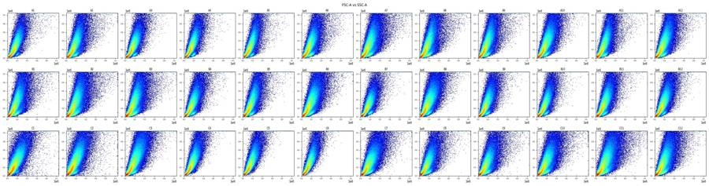
21
tool call · Read
{
"file_path": "/task/work/bl1_rl3.png"
}22
tool output
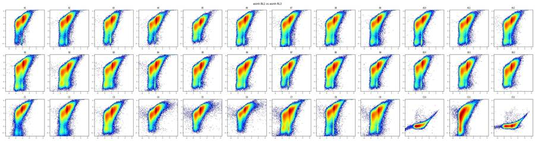
24
tool call · Bash
cat > plot2.py <<'EOF'
import pickle, numpy as np, pandas as pd, matplotlib
matplotlib.use('Agg')
import matplotlib.pyplot as plt
D, meta = pickle.load(open('data.pkl','rb'))
al=lambda v: np.arcsinh(v/150)/np.log(10)
fig,axs=plt.subplots(2,4,figsize=(24,12))
for ax,w in zip(axs.ravel(),['C10','C11','C12','C7','C8','C9','A1','B2']):
d=D[w]
ax.hist2d(al(d['BL1-A']),al(d['RL3-A']),bins=250,range=[[-1.5,4.2],[-1.5,4.2]],norm=matplotlib.colors.LogNorm(),cmap='jet')
ax.set_title(w); ax.grid(alpha=.3)
ax.set_xticks(np.arange(-1.5,4.5,0.5)); ax.set_yticks(np.arange(-1.5,4.5,0.5))
plt.tight_layout(); plt.savefig('ctrl2d.png',dpi=70); plt.close()
fig,axs=plt.subplots(2,1,figsize=(16,10))
for w in ['C10','C11','C12','C7','C8','C9','A1','B2']:
d=D[w]
for ax,c in zip(axs,['BL1-A','RL3-A']):
h,e=np.histogram(al(d[c]),bins=300,range=(-1.5,4.2))
ax.plot((e[1:]+e[:-1])/2,h/len(d),label=w)
ax.set_title(c); ax.legend(); ax.grid(alpha=.3); ax.set_xticks(np.arange(-1.5,4.5,0.25))
plt.tight_layout(); plt.savefig('ctrl1d.png',dpi=70)
EOF
python3 plot2.py25
tool call · Read
{
"file_path": "/task/work/ctrl2d.png"
}26
tool call · Read
{
"file_path": "/task/work/ctrl1d.png"
}27
tool output
(Bash completed with no output)
28
tool output
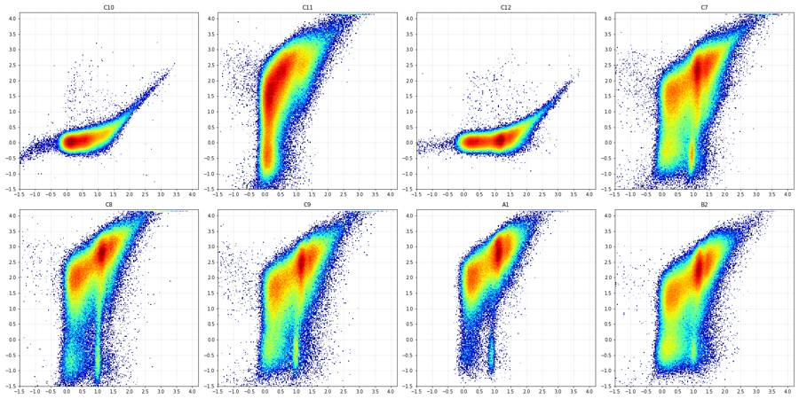
29
tool output
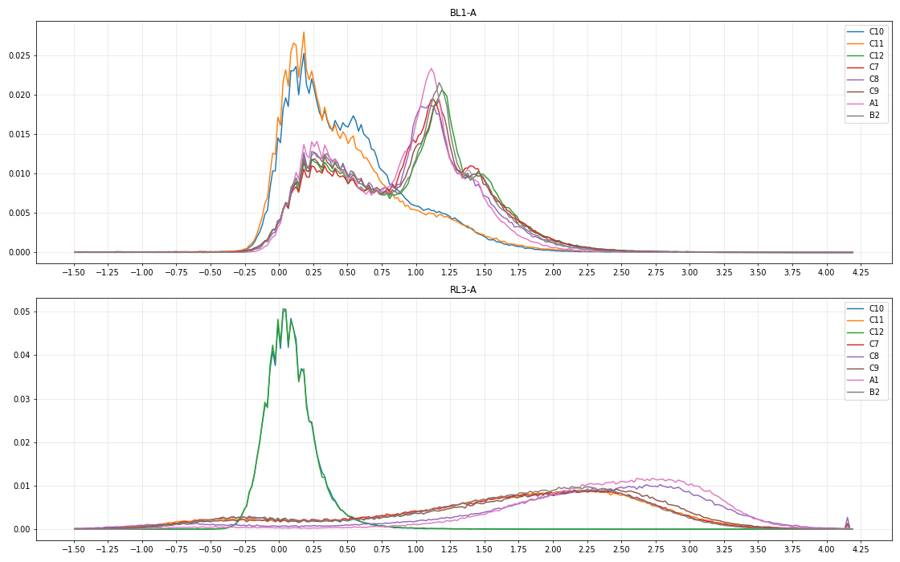
31
tool call · Bash
cat > plot3.py <<'EOF'
import pickle, numpy as np, pandas as pd, matplotlib
matplotlib.use('Agg')
import matplotlib.pyplot as plt
D, meta = pickle.load(open('data.pkl','rb'))
ws=['C10','C11','C12','C7','C8','A1','B2','C4']
fig,axs=plt.subplots(3,8,figsize=(40,15))
for i,w in enumerate(ws):
d=D[w]
axs[0,i].hist2d(d['FSC-A'],d['SSC-A'],bins=250,range=[[0,6e5],[0,1.05e6]],norm=matplotlib.colors.LogNorm(),cmap='jet'); axs[0,i].set_title(w+' FSC-A/SSC-A lin')
m=(d['FSC-A']>0)&(d['SSC-A']>0)
axs[1,i].hist2d(np.log10(d['FSC-A'][m]),np.log10(d['SSC-A'][m]),bins=250,range=[[4,6.05],[3,6.05]],norm=matplotlib.colors.LogNorm(),cmap='jet'); axs[1,i].set_title(w+' log')
axs[2,i].hist2d(d['SSC-H'],d['SSC-A'],bins=250,range=[[0,1.05e6],[0,1.05e6]],norm=matplotlib.colors.LogNorm(),cmap='jet'); axs[2,i].set_title(w+' SSC-H/SSC-A')
for a in axs[:,i]: a.grid(alpha=.3)
plt.tight_layout(); plt.savefig('scat.png',dpi=55)
EOF
python3 plot3.py32
tool call · Read
{
"file_path": "/task/work/scat.png"
}33
tool output
(Bash completed with no output)
34
tool output
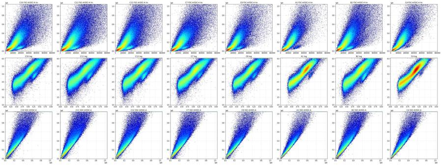
36
tool call · Bash
cat > plot4.py <<'EOF'
import pickle, numpy as np, pandas as pd, matplotlib
matplotlib.use('Agg')
import matplotlib.pyplot as plt
D, meta = pickle.load(open('data.pkl','rb'))
al=lambda v: np.arcsinh(v/150)/np.log(10)
ws=['C10','C11','C12','C7','A1','B2']
fig,axs=plt.subplots(4,6,figsize=(36,24))
for i,w in enumerate(ws):
d=D[w]
axs[0,i].hist2d(d['FSC-A'],d['SSC-A'],bins=200,range=[[0,3e5],[0,5e5]],cmap='jet',norm=matplotlib.colors.PowerNorm(0.5)); axs[0,i].set_title(w+' FSC-A/SSC-A zoom')
axs[1,i].hist2d(d['FSC-A'],al(d['RL3-A']),bins=200,range=[[0,4e5],[-1.5,4.2]],cmap='jet',norm=matplotlib.colors.LogNorm()); axs[1,i].set_title(w+' FSC-A/RL3')
axs[2,i].hist2d(d['FSC-A'],al(d['BL1-A']),bins=200,range=[[0,4e5],[-1.5,4.2]],cmap='jet',norm=matplotlib.colors.LogNorm()); axs[2,i].set_title(w+' FSC-A/BL1')
axs[3,i].hist(d['FSC-A'],bins=300,range=(0,4e5)); axs[3,i].set_title(w+' FSC-A')
for a in axs[:,i]: a.grid(alpha=.3)
plt.tight_layout(); plt.savefig('scat2.png',dpi=50)
EOF
python3 plot4.py37
tool call · Read
{
"file_path": "/task/work/scat2.png"
}38
tool output
(Bash completed with no output)
39
tool output
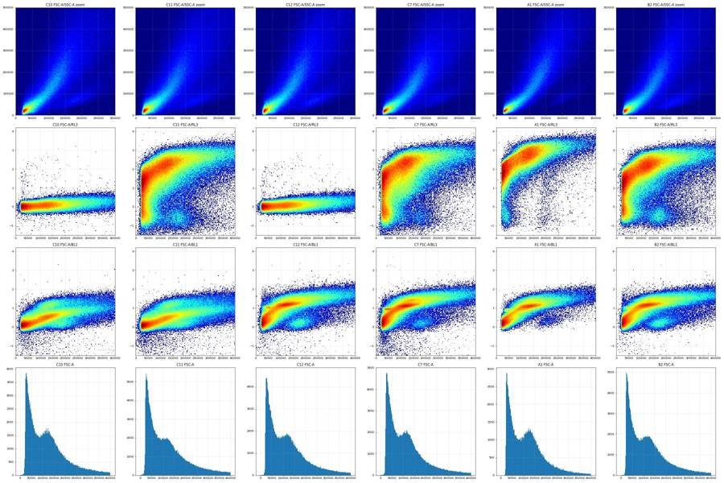
41
tool call · Bash
cat > valley.py <<'EOF'
import pickle, numpy as np, pandas as pd
from scipy.ndimage import gaussian_filter1d
D, meta = pickle.load(open('data.pkl','rb'))
for w,d in D.items():
h,e=np.histogram(d['FSC-A'],bins=200,range=(0,4e5))
hs=gaussian_filter1d(h.astype(float),2)
c=(e[1:]+e[:-1])/2
m=(c>40e3)&(c<110e3); i=np.argmin(np.where(m,hs,np.inf))
m2=(c>c[i])&(c<250e3); j=np.argmax(np.where(m2,hs,-np.inf))
f=d['FSC-A']
print(w,'valley %.0f'%c[i],'peak %.0f'%c[j],'valley/peak %.2f'%(hs[i]/hs[j]), 'frac>75k %.3f'%(f>75e3).mean(), 'frac>60k %.3f'%(f>60e3).mean(),'frac>90k %.3f'%(f>90e3).mean())
EOF
python3 valley.py42
tool output
A1 valley 81000 peak 127000 valley/peak 0.81 frac>75k 0.628 frac>60k 0.695 frac>90k 0.566 A2 valley 81000 peak 123000 valley/peak 0.85 frac>75k 0.632 frac>60k 0.700 frac>90k 0.571 A3 valley 77000 peak 125000 valley/peak 0.77 frac>75k 0.646 frac>60k 0.713 frac>90k 0.581 A4 valley 79000 peak 125000 valley/peak 0.72 frac>75k 0.671 frac>60k 0.733 frac>90k 0.614 A5 valley 79000 peak 121000 valley/peak 0.82 frac>75k 0.642 frac>60k 0.711 frac>90k 0.577 A6 valley 75000 peak 123000 valley/peak 0.79 frac>75k 0.656 frac>60k 0.720 frac>90k 0.593 A7 valley 81000 peak 115000 valley/peak 0.88 frac>75k 0.640 frac>60k 0.706 frac>90k 0.577 A8 valley 85000 peak 121000 valley/peak 0.84 frac>75k 0.662 frac>60k 0.725 frac>90k 0.602 A9 valley 77000 peak 117000 valley/peak 0.82 frac>75k 0.664 frac>60k 0.730 frac>90k 0.600 A10 valley 81000 peak 123000 valley/peak 0.80 frac>75k 0.640 frac>60k 0.704 frac>90k 0.579 A11 valley 87000 peak 117000 valley/peak 0.90 frac>75k 0.615 frac>60k 0.684 frac>90k 0.549 A12 valley 81000 peak 117000 valley/peak 0.87 frac>75k 0.619 frac>60k 0.688 frac>90k 0.556 B1 valley 83000 peak 121000 valley/peak 0.87 frac>75k 0.631 frac>60k 0.696 frac>90k 0.571 B2 valley 83000 peak 113000 valley/peak 0.92 frac>75k 0.624 frac>60k 0.691 frac>90k 0.563 B3 valley 81000 peak 117000 valley/peak 0.88 frac>75k 0.648 frac>60k 0.713 frac>90k 0.586 B4 valley 87000 peak 121000 valley/peak 0.82 frac>75k 0.617 frac>60k 0.684 frac>90k 0.555 B5 valley 89000 peak 123000 valley/peak 0.86 frac>75k 0.617 frac>60k 0.685 frac>90k 0.555 B6 valley 83000 peak 119000 valley/peak 0.87 frac>75k 0.615 frac>60k 0.684 frac>90k 0.552 B7 valley 79000 peak 127000 valley/peak 0.68 frac>75k 0.628 frac>60k 0.691 frac>90k 0.570 B8 valley 79000 peak 121000 valley/peak 0.83 frac>75k 0.626 frac>60k 0.693 frac>90k 0.561 B9 valley 81000 peak 125000 valley/peak 0.77 frac>75k 0.630 frac>60k 0.695 frac>90k 0.570 B10 valley 83000 peak 123000 valley/peak 0.81 frac>75k 0.614 frac>60k 0.682 frac>90k 0.551 B11 valley 77000 peak 123000 valley/peak 0.80 frac>75k 0.639 frac>60k 0.704 frac>90k 0.576 B12 valley 77000 peak 119000 valley/peak 0.79 frac>75k 0.632 frac>60k 0.699 frac>90k 0.567 C1 valley 75000 peak 115000 valley/peak 0.86 frac>75k 0.668 frac>60k 0.736 frac>90k 0.599 C2 valley 79000 peak 109000 valley/peak 0.86 frac>75k 0.673 frac>60k 0.741 frac>90k 0.606 C3 valley 79000 peak 121000 valley/peak 0.82 frac>75k 0.647 frac>60k 0.711 frac>90k 0.586 C4 valley 77000 peak 121000 valley/peak 0.74 frac>75k 0.642 frac>60k 0.709 frac>90k 0.578 C5 valley 79000 peak 125000 valley/peak 0.72 frac>75k 0.648 frac>60k 0.714 frac>90k 0.586 C6 valley 77000 peak 121000 valley/peak 0.77 frac>75k 0.633 frac>60k 0.703 frac>90k 0.564 C7 valley 81000 peak 115000 valley/peak 0.91 frac>75k 0.609 frac>60k 0.680 frac>90k 0.544 C8 valley 97000 peak 115000 valley/peak 0.94 frac>75k 0.587 frac>60k 0.662 frac>90k 0.521 C9 valley 87000 peak 115000 valley/peak 0.92 frac>75k 0.607 frac>60k 0.679 frac>90k 0.545 C10 valley 85000 peak 123000 valley/peak 0.89 frac>75k 0.637 frac>60k 0.703 frac>90k 0.577 C11 valley 93000 peak 103000 valley/peak 0.99 frac>75k 0.617 frac>60k 0.688 frac>90k 0.555 C12 valley 83000 peak 117000 valley/peak 0.93 frac>75k 0.627 frac>60k 0.695 frac>90k 0.565
44
agent
Scatter gates next: the debris/cell valley sits at FSC-A ≈ 80k in every well, so I'm now placing the Cells polygon and checking the singlet band.
45
tool call · Bash
cat > plot5.py <<'EOF'
import pickle, numpy as np, pandas as pd, matplotlib
matplotlib.use('Agg')
import matplotlib.pyplot as plt
D, meta = pickle.load(open('data.pkl','rb'))
ws=['C10','C11','C7','A1','B2','C4']
fig,axs=plt.subplots(3,6,figsize=(36,18))
for i,w in enumerate(ws):
d=D[w]; d=d[(d['FSC-A']>75e3)]
r=d['SSC-A']/d['SSC-H'].clip(lower=1)
axs[0,i].hist2d(d['SSC-H'],d['SSC-A'],bins=250,range=[[0,1.05e6],[0,1.05e6]],cmap='jet',norm=matplotlib.colors.LogNorm()); axs[0,i].set_title(w+' SSC-H/SSC-A (FSC-A>75k)')
for k in (1.0,1.2,1.3,1.4): axs[0,i].plot([0,1.05e6/k],[0,1.05e6],'w-',lw=.5)
axs[1,i].hist2d(d['SSC-H'],r,bins=250,range=[[0,1.05e6],[0.8,2.5]],cmap='jet',norm=matplotlib.colors.LogNorm()); axs[1,i].set_title('ratio A/H vs SSC-H')
axs[2,i].hist(r,bins=200,range=(0.8,2.5)); axs[2,i].set_yscale('log'); axs[2,i].set_title('ratio A/H')
for a in axs[:,i]: a.grid(alpha=.3)
print(w, np.percentile(r,[1,5,25,50,75,90,95,99]).round(3))
plt.tight_layout(); plt.savefig('sing.png',dpi=50)
EOF
python3 plot5.py46
tool call · Read
{
"file_path": "/task/work/sing.png"
}47
tool output
C10 [0.9 1. 1.085 1.187 1.444 1.863 2.158 2.831] C11 [0.845 0.992 1.09 1.222 1.527 1.965 2.264 2.96 ] C7 [0.898 1. 1.084 1.193 1.479 1.918 2.216 2.919] A1 [1. 1.037 1.109 1.188 1.348 1.65 1.906 2.426] B2 [0.928 1. 1.088 1.191 1.435 1.829 2.105 2.723] C4 [0.983 1.019 1.087 1.162 1.329 1.652 1.906 2.421]
48
tool output
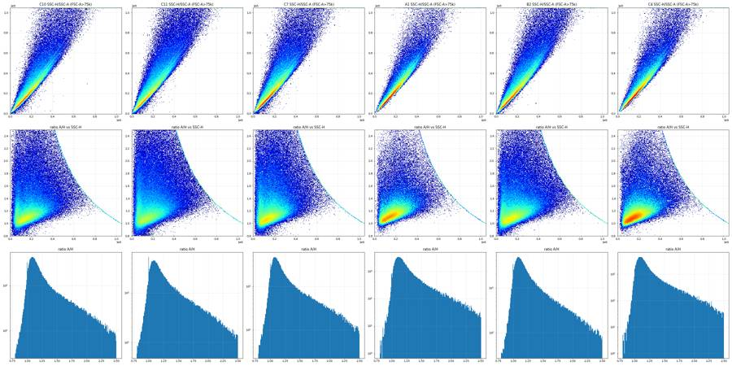
50
tool call · Bash
cat > gates_np.py <<'EOF'
import numpy as np
from matplotlib.path import Path
CELLS=[(75e3,15e3),(75e3,3.0e5),(1.5e5,1.0e6),(1.0e6,1.0e6),(1.0e6,15e3)]
SING=[(5e3,0),(5e3,19e3),(705714,1.0e6),(1.0e6,1.0e6),(1.0e6,842e3)]
def cells(d): return Path(CELLS).contains_points(d[['FSC-A','SSC-A']].values)
def sing(d): return cells(d)&Path(SING).contains_points(d[['SSC-H','SSC-A']].values)
EOF
cat > fl1.py <<'EOF'
import pickle, numpy as np, pandas as pd
from gates_np import *
D, meta = pickle.load(open('data.pkl','rb'))
pd.set_option('display.width',250)
ps=[0.1,1,5,10,25,50,75,90,95,99,99.9]
for w in ['C10','C12','C11','C7','C8','C9','A1','B2']:
d=D[w]; c=cells(d); s=sing(d)
print(w,'cells %.3f sing/cells %.3f'%(c.mean(), s.sum()/c.sum()))
print(' RL3',np.percentile(d['RL3-A'][s],ps).round(0))
print(' BL1',np.percentile(d['BL1-A'][s],ps).round(0))
EOF
python3 fl1.py51
tool output
C10 cells 0.599 sing/cells 0.780 RL3 [-136. -94. -58. -39. -7. 30. 68. 106. 132. 189. 299.] BL1 [-132. -20. 35. 67. 137. 241. 405. 860. 1251. 2002. 3116.] C12 cells 0.589 sing/cells 0.776 RL3 [-137. -95. -59. -40. -8. 28. 66. 103. 129. 186. 306.] BL1 [-7.100e+01 3.000e+00 1.040e+02 2.370e+02 6.920e+02 1.094e+03 1.527e+03 2.360e+03 2.926e+03 4.451e+03 7.257e+03] C11 cells 0.568 sing/cells 0.736 RL3 [ -3812. -716. -186. 181. 2506. 8867. 19301. 34556. 47864. 81547. 140870.] BL1 [-260. -29. 22. 51. 111. 206. 362. 813. 1240. 2014. 3155.] C7 cells 0.578 sing/cells 0.765 RL3 [-3.66900e+03 -5.35000e+02 -5.50000e+01 2.75000e+02 2.05500e+03 8.98900e+03 2.06000e+04 3.58230e+04 4.84040e+04 8.09370e+04 1.36258e+05] BL1 [-307. 11. 163. 369. 719. 1025. 1557. 2324. 2902. 4344. 6668.] C8 cells 0.554 sing/cells 0.803 RL3 [-3.11100e+03 -9.26000e+02 7.50000e+01 2.03700e+03 1.23690e+04 3.27840e+04 6.20870e+04 1.01392e+05 1.33312e+05 2.16581e+05 3.55251e+05] BL1 [ -77. 12. 129. 277. 637. 961. 1393. 2106. 2625. 4123. 6606.] C9 cells 0.569 sing/cells 0.782 RL3 [-3.62300e+03 -5.75000e+02 -9.30000e+01 3.39000e+02 3.46300e+03 1.28890e+04 2.74950e+04 4.75270e+04 6.37530e+04 1.05092e+05 1.73574e+05] BL1 [-514. 0. 102. 245. 669. 1046. 1531. 2336. 2934. 4469. 7118.] A1 cells 0.608 sing/cells 0.839 RL3 [-6.83000e+02 1.59000e+02 4.43500e+03 8.71100e+03 1.91480e+04 3.87540e+04 7.02850e+04 1.11698e+05 1.41213e+05 2.11675e+05 3.18846e+05] BL1 [1.000e+00 9.000e+01 2.140e+02 3.540e+02 6.340e+02 9.160e+02 1.259e+03 1.911e+03 2.350e+03 3.486e+03 5.139e+03] B2 cells 0.588 sing/cells 0.787 RL3 [-9.02000e+02 -4.31000e+02 -1.17000e+02 2.08000e+02 3.29800e+03 9.37100e+03 1.89880e+04 3.32620e+04 4.48660e+04 7.43710e+04 1.19111e+05] BL1 [ -59. 8. 112. 244. 670. 1035. 1426. 2175. 2657. 4005. 6303.]
53
tool call · Bash
cat > fl2.py <<'EOF'
import pickle, numpy as np, pandas as pd, matplotlib
matplotlib.use('Agg')
import matplotlib.pyplot as plt
import flowkit as fk
from gates_np import *
D, meta = pickle.load(open('data.pkl','rb'))
xf=fk.transforms.LogicleTransform(param_t=1048576,param_w=1.0,param_m=4.5,param_a=0)
T=lambda v: xf.apply(np.asarray(v,dtype=float))
ticks=[-1000,-100,0,100,1000,1e4,1e5,1e6]
tl=T(np.array(ticks))
import sys
ws=sys.argv[2:]
n=len(ws); nc=min(n,4); nr=(n+nc-1)//nc
fig,axs=plt.subplots(nr,nc,figsize=(9*nc,9*nr),squeeze=False)
for ax,w in zip(axs.ravel(),ws):
d=D[w]; s=sing(d)
ax.hist2d(T(d['BL1-A'][s]),T(d['RL3-A'][s]),bins=220,range=[[0,1],[0,1]],norm=matplotlib.colors.LogNorm(),cmap='jet')
ax.set_xticks(tl); ax.set_xticklabels(['%g'%t for t in ticks]); ax.set_yticks(tl); ax.set_yticklabels(['%g'%t for t in ticks])
mt=T(np.array([300,3000,3e4,3e5]));
for m in mt: ax.axhline(m,color='gray',lw=.4); ax.axvline(m,color='gray',lw=.4)
ax.grid(alpha=.4); ax.set_title(w+' singlets n=%d'%s.sum())
plt.tight_layout(); plt.savefig(sys.argv[1],dpi=50)
EOF
python3 fl2.py fl_ctrl.png C10 C12 C11 C7 C8 C9 A1 B254
tool call · Read
{
"file_path": "/task/work/fl_ctrl.png"
}55
tool output
(Bash completed with no output)
56
tool output
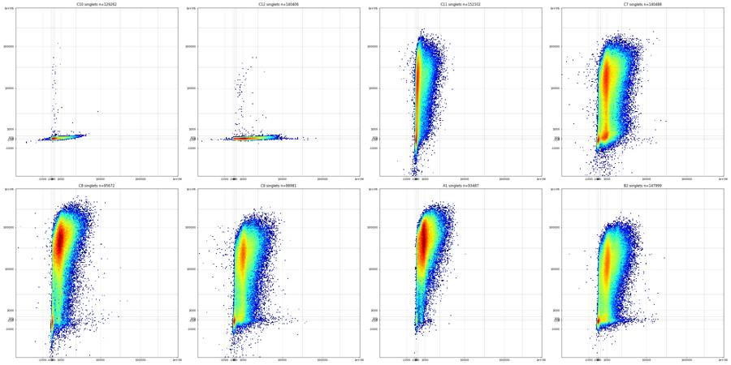
58
tool call · Bash
cat > fl3.py <<'EOF'
import pickle, numpy as np, pandas as pd, matplotlib
matplotlib.use('Agg')
import matplotlib.pyplot as plt
from gates_np import *
D, meta = pickle.load(open('data.pkl','rb'))
def A(v,c): return np.arcsinh(np.asarray(v)/c)
def setticks(ax,c,axis='x'):
t=[-1000,-300,-100,0,100,300,1000,3000,1e4,3e4,1e5,3e5,1e6]
if axis=='x': ax.set_xticks(A(t,c)); ax.set_xticklabels(['%g'%x for x in t],fontsize=7)
else: ax.set_yticks(A(t,c)); ax.set_yticklabels(['%g'%x for x in t],fontsize=7)
fig,axs=plt.subplots(3,1,figsize=(18,18))
for w in ['C10','C12','C11','C7','C8','C9','A1','B2','A5','B12']:
d=D[w]; s=sing(d)
h,e=np.histogram(A(d['RL3-A'][s],100),bins=250,range=(A(-2000,100),A(1e6,100)))
axs[0].plot((e[1:]+e[:-1])/2,h/s.sum(),label=w)
axs[1].plot((e[1:]+e[:-1])/2,h/s.sum(),label=w)
h,e=np.histogram(A(d['BL1-A'][s],100),bins=250,range=(A(-1000,100),A(1e6,100)))
axs[2].plot((e[1:]+e[:-1])/2,h/s.sum(),label=w)
axs[1].set_ylim(0,0.012)
for a in axs: setticks(a,100); a.grid(alpha=.4); a.legend()
axs[0].set_title('RL3 singlets'); axs[2].set_title('BL1 singlets')
plt.tight_layout(); plt.savefig('fl1d.png',dpi=60)
EOF
python3 fl3.py59
tool call · Read
{
"file_path": "/task/work/fl1d.png"
}60
tool output
(Bash completed with no output)
61
tool output
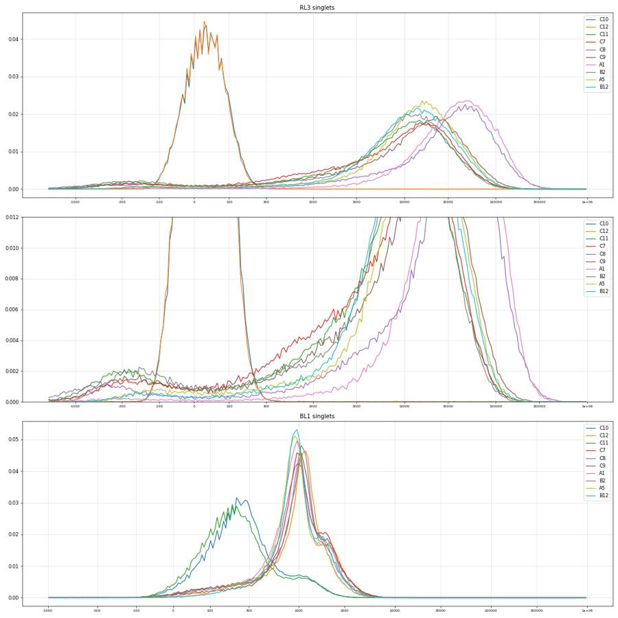
63
agent
Fluorescence structure is becoming clear (Zombie-negative cluster near RL3 ≈ 0, caspase-positive stripe at BL1 ≈ 1000); zooming in on singlets to set the BL1/RL3 boundaries from C10–C12.
64
tool call · Bash
cat > fl4.py <<'EOF'
import pickle, numpy as np, pandas as pd, matplotlib, sys
matplotlib.use('Agg')
import matplotlib.pyplot as plt
from gates_np import *
D, meta = pickle.load(open('data.pkl','rb'))
def A(v,c=100): return np.arcsinh(np.asarray(v,dtype=float)/c)
t=[-1000,-300,0,300,1000,3000,1e4,3e4,1e5,3e5,1e6]
ws=sys.argv[2:]
n=len(ws); nc=min(n,4); nr=(n+nc-1)//nc
fig,axs=plt.subplots(nr,nc,figsize=(10*nc,10*nr),squeeze=False)
for ax,w in zip(axs.ravel(),ws):
d=D[w]; s=sing(d)
ax.hist2d(A(d['BL1-A'][s]),A(d['RL3-A'][s]),bins=250,range=[[A(-500),A(3e5)],[A(-3000),A(1.05e6)]],norm=matplotlib.colors.LogNorm(),cmap='jet')
ax.set_xticks(A(t)); ax.set_xticklabels(['%g'%x for x in t]); ax.set_yticks(A(t)); ax.set_yticklabels(['%g'%x for x in t])
ax.grid(alpha=.5); ax.set_title(w+' singlets n=%d'%s.sum())
plt.tight_layout(); plt.savefig(sys.argv[1],dpi=45)
EOF
python3 fl4.py fl_ctrl.png C10 C12 C11 C7 C8 C9 A1 B265
tool call · Read
{
"file_path": "/task/work/fl_ctrl.png"
}66
tool output
(Bash completed with no output)
67
tool output
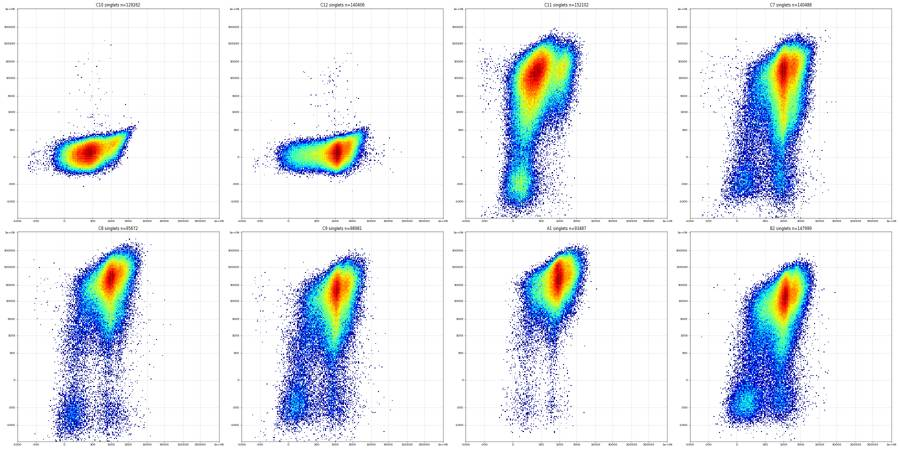
69
tool call · Bash
cat > fl5.py <<'EOF'
import pickle, numpy as np, pandas as pd
from gates_np import *
D, meta = pickle.load(open('data.pkl','rb'))
np.set_printoptions(linewidth=250, suppress=True)
rb=[-70000,-5000,-2000,-1000,-600,-300,-100,0,100,200,300,400,500,700,1000,1500,2000,3000,5000,1e4,3e4,1e5,1.1e6]
print('RL3 bins',rb)
for w in ['C10','C12','C11','C7','C8','C9','A1','B2','A5','C4']:
d=D[w]; s=sing(d); x=d['RL3-A'][s]
h,_=np.histogram(x,rb)
print(w, s.sum(), (1000*h/s.sum()).round(1))
bb=[-70000,-200,0,100,200,300,400,500,600,700,800,900,1000,1200,1500,2000,3000,5000,1e4,1.1e6]
print('BL1 bins (Live: RL3<300)',bb)
for w in ['C10','C12','C11','C7','C8','C9','A1','B2','A5','C4']:
d=D[w]; s=sing(d)&(d['RL3-A']<300); x=d['BL1-A'][s]
h,_=np.histogram(x,bb)
print(w, s.sum(), (1000*h/s.sum()).round(0))
EOF
python3 fl5.py70
tool output
RL3 bins [-70000, -5000, -2000, -1000, -600, -300, -100, 0, 100, 200, 300, 400, 500, 700, 1000, 1500, 2000, 3000, 5000, 10000.0, 30000.0, 100000.0, 1100000.0] C10 129262 [ 0. 0. 0. 0. 0. 7.1 282.1 590.9 112.2 6.6 0.5 0.1 0.1 0.1 0. 0. 0. 0.1 0. 0.1 0. 0. ] C12 140406 [ 0. 0. 0. 0. 0. 7.8 290.1 591.9 103. 6. 0.4 0.1 0. 0.1 0. 0. 0. 0.1 0.1 0.2 0. 0. ] C11 152102 [ 0.7 1.1 3.5 8.5 20.7 28.9 15. 12.7 10.8 10.1 9.3 8.5 16.1 21.6 30.5 27.5 47.2 85.4 178.3 334.2 124.8 4.6] C7 140488 [ 0.7 1. 2. 4.6 13.1 21.8 15.1 15.4 15.3 14.4 13.5 12.8 23.1 27.3 37.1 29.7 48.9 78.6 153.8 330.6 136.7 4.3] C8 95672 [ 0.5 1.7 6.5 8.5 12.7 11.2 5.2 4.7 3.4 3.6 3. 2.6 5.3 7.3 11.9 11.1 20.5 34.1 67.1 247.5 428.6 102.9] C9 98981 [ 0.7 1. 2.2 5.5 15.2 24.1 16. 12.9 10.2 9. 7.7 8.5 14.2 18.8 27.8 21.9 38.4 63.7 132.7 348.2 209.2 12.1] A1 93487 [ 0. 0. 0.4 0.9 2. 2.8 1.7 1.5 1.1 1.1 1.1 0.9 2. 2.8 4.5 4.3 8.7 19.6 61.2 279.3 472.7 131.2] B2 147999 [ 0. 0.1 0.6 3.7 15.9 33.3 19.7 14.8 11.1 9.3 8.8 7.4 13.5 15.8 22.7 20.2 40.9 85.3 199.2 356.1 118.9 2.8] A5 88359 [ 0. 0. 0. 0.2 2.1 10.6 10.7 8.9 6.5 5.9 5. 4.8 7.2 9.7 13.7 13.2 28.2 66.4 184.2 427.3 189.1 6.1] C4 120773 [ 0. 0. 0. 0.1 0.4 1.2 1.1 1.3 1.5 1.3 1.3 1.4 2.7 4.3 7.6 7.8 19.9 48.4 152.1 443.5 284.5 19.5] BL1 bins (Live: RL3<300) [-70000, -200, 0, 100, 200, 300, 400, 500, 600, 700, 800, 900, 1000, 1200, 1500, 2000, 3000, 5000, 10000.0, 1100000.0] C10 129133 [ 1. 18. 146. 237. 217. 127. 64. 37. 25. 18. 16. 14. 24. 25. 20. 9. 1. 0. 0.] C12 140257 [ 0. 9. 39. 39. 33. 29. 30. 34. 40. 46. 56. 70. 157. 159. 106. 107. 39. 6. 0.] C11 17036 [ 6. 141. 567. 214. 37. 12. 6. 4. 4. 2. 1. 2. 2. 2. 1. 0. 0. 0. 0.] C7 14537 [ 6. 57. 175. 89. 41. 37. 48. 60. 69. 74. 71. 65. 80. 51. 45. 23. 6. 2. 1.] C8 5550 [ 3. 97. 368. 146. 38. 24. 26. 23. 27. 40. 35. 22. 32. 35. 41. 24. 11. 6. 1.] C9 9584 [ 8. 76. 310. 142. 49. 32. 32. 34. 40. 40. 45. 32. 43. 36. 37. 24. 14. 4. 2.] A1 1083 [ 0. 54. 282. 218. 65. 29. 46. 76. 90. 46. 23. 9. 17. 19. 22. 4. 1. 0. 0.] B2 16055 [ 0. 68. 279. 157. 63. 43. 39. 43. 45. 44. 41. 34. 47. 36. 32. 17. 8. 2. 1.] A5 3978 [ 0. 56. 300. 165. 67. 41. 52. 60. 57. 52. 38. 26. 30. 21. 21. 10. 3. 2. 0.] C4 844 [ 1. 4. 26. 79. 71. 132. 133. 162. 104. 70. 45. 39. 45. 30. 30. 18. 5. 1. 6.]
72
tool call · Bash
cat > fl6.py <<'EOF'
import pickle, numpy as np, pandas as pd
from gates_np import *
D, meta = pickle.load(open('data.pkl','rb'))
np.set_printoptions(linewidth=250, suppress=True)
bb=[-70000,0,100,200,300,400,500,600,700,800,900,1000,1200,1500,2000,3000,5000,1e4,1.1e6]
print('BL1 bins',bb)
for lo,hi in [(1000,3000),(3000,10000),(10000,30000),(30000,100000),(100000,1.1e6)]:
print('RL3 in',lo,hi)
for w in ['C11','C7','C8','C9','A1','B2']:
d=D[w]; s=sing(d)&(d['RL3-A']>=lo)&(d['RL3-A']<hi); x=d['BL1-A'][s]
h,_=np.histogram(x,bb)
print(' ',w, s.sum(), (1000*h/max(s.sum(),1)).round(0), 'pcts 50/90/95/99:',np.percentile(x,[50,90,95,99]).round(0) if s.sum() else '')
EOF
python3 fl6.py73
tool output
BL1 bins [-70000, 0, 100, 200, 300, 400, 500, 600, 700, 800, 900, 1000, 1200, 1500, 2000, 3000, 5000, 10000.0, 1100000.0] RL3 in 1000 3000 C11 16012 [ 22. 249. 339. 171. 70. 34. 20. 14. 13. 10. 10. 17. 16. 9. 4. 0. 0. 0.] pcts 50/90/95/99: [ 161. 569. 967. 1624.] C7 16264 [ 2. 17. 38. 35. 34. 43. 52. 60. 67. 87. 89. 142. 109. 103. 87. 31. 3. 0.] pcts 50/90/95/99: [ 970. 2134. 2660. 3901.] C8 4161 [ 8. 73. 88. 60. 44. 54. 64. 71. 69. 78. 87. 108. 76. 78. 32. 8. 2. 1.] pcts 50/90/95/99: [ 752. 1609. 1937. 3173.] C9 8724 [ 5. 25. 58. 53. 41. 49. 56. 62. 63. 76. 80. 145. 119. 85. 64. 18. 2. 0.] pcts 50/90/95/99: [ 918. 1865. 2333. 3484.] A1 1644 [ 4. 71. 150. 87. 65. 90. 114. 104. 86. 69. 53. 47. 30. 20. 7. 2. 0. 0.] pcts 50/90/95/99: [ 535. 1018. 1273. 1907.] B2 12407 [ 1. 24. 69. 75. 62. 58. 60. 74. 77. 80. 84. 132. 96. 62. 37. 8. 1. 0.] pcts 50/90/95/99: [ 800. 1543. 1950. 2919.] RL3 in 3000 10000 C11 40106 [ 11. 184. 328. 204. 85. 41. 25. 18. 16. 14. 13. 21. 19. 15. 5. 0. 0. 0.] pcts 50/90/95/99: [ 191. 719. 1095. 1804.] C7 32647 [ 1. 7. 25. 31. 33. 41. 51. 61. 76. 90. 98. 150. 112. 104. 91. 27. 2. 0.] pcts 50/90/95/99: [ 986. 2121. 2590. 3785.] C8 9680 [ 2. 21. 65. 58. 51. 59. 60. 70. 81. 82. 82. 128. 93. 82. 52. 13. 1. 0.] pcts 50/90/95/99: [ 836. 1764. 2181. 3285.] C9 19447 [ 2. 10. 36. 46. 43. 48. 56. 61. 65. 76. 81. 156. 118. 97. 79. 23. 3. 0.] pcts 50/90/95/99: [ 971. 2037. 2493. 3774.] A1 7554 [ 1. 20. 82. 89. 74. 81. 92. 99. 97. 83. 77. 87. 49. 40. 25. 4. 0. 0.] pcts 50/90/95/99: [ 659. 1276. 1722. 2593.] B2 42109 [ 0. 6. 30. 43. 42. 45. 51. 58. 74. 87. 98. 180. 128. 83. 58. 13. 1. 0.] pcts 50/90/95/99: [ 963. 1798. 2199. 3191.] RL3 in 10000 30000 C11 50834 [ 6. 91. 253. 245. 137. 62. 35. 22. 17. 17. 16. 30. 32. 26. 10. 1. 0. 0.] pcts 50/90/95/99: [ 256. 991. 1356. 2060.] C7 46447 [ 1. 2. 10. 16. 21. 29. 37. 51. 68. 86. 100. 162. 124. 131. 118. 40. 4. 0.] pcts 50/90/95/99: [1084. 2356. 2887. 4144.] C8 23678 [ 1. 9. 36. 54. 54. 60. 70. 82. 89. 93. 88. 131. 93. 77. 51. 12. 1. 0.] pcts 50/90/95/99: [ 849. 1727. 2144. 3159.] C9 34462 [ 1. 3. 15. 24. 27. 33. 39. 47. 59. 76. 88. 182. 144. 118. 107. 33. 3. 0.] pcts 50/90/95/99: [1090. 2252. 2743. 4029.] A1 26111 [ 0. 9. 44. 55. 53. 66. 78. 89. 101. 105. 98. 122. 77. 61. 35. 7. 0. 0.] pcts 50/90/95/99: [ 803. 1514. 1902. 2775.] B2 52705 [ 0. 1. 9. 15. 17. 20. 26. 34. 48. 64. 90. 201. 182. 128. 124. 37. 3. 0.] pcts 50/90/95/99: [1172. 2335. 2814. 4047.] RL3 in 30000 100000 C11 18976 [ 3. 26. 134. 212. 189. 111. 66. 41. 27. 19. 18. 31. 44. 47. 27. 5. 0. 0.] pcts 50/90/95/99: [ 361. 1354. 1748. 2662.] C7 19211 [ 2. 0. 1. 3. 6. 10. 15. 25. 44. 65. 76. 142. 137. 160. 194. 103. 17. 0.] pcts 50/90/95/99: [1431. 3207. 3922. 5555.] C8 41009 [ 1. 2. 10. 18. 24. 31. 43. 59. 77. 93. 98. 166. 134. 119. 96. 28. 2. 0.] pcts 50/90/95/99: [1047. 2157. 2630. 3893.] C9 20709 [ 1. 0. 3. 6. 9. 13. 18. 24. 37. 53. 72. 164. 165. 150. 184. 88. 13. 0.] pcts 50/90/95/99: [1353. 3009. 3694. 5239.] A1 44188 [ 0. 3. 15. 24. 30. 41. 53. 65. 88. 106. 107. 161. 110. 102. 76. 19. 1. 0.] pcts 50/90/95/99: [ 970. 1975. 2410. 3457.] B2 17600 [ 0. 0. 1. 2. 4. 6. 8. 14. 25. 42. 63. 169. 187. 164. 219. 86. 12. 0.] pcts 50/90/95/99: [1456. 2972. 3636. 5144.] RL3 in 100000 1100000.0 C11 699 [ 3. 0. 6. 49. 139. 166. 160. 104. 73. 41. 41. 40. 40. 69. 53. 16. 0. 0.] pcts 50/90/95/99: [ 583. 1773. 2200. 3191.] C7 598 [ 3. 2. 0. 0. 0. 0. 7. 3. 7. 10. 18. 70. 134. 184. 299. 181. 69. 13.] pcts 50/90/95/99: [ 2187. 4685. 5927. 10887.] C8 9846 [ 1. 0. 0. 1. 4. 7. 13. 24. 41. 55. 66. 137. 149. 175. 205. 103. 17. 0.] pcts 50/90/95/99: [1501. 3200. 3971. 5584.] C9 1193 [ 2. 0. 1. 0. 0. 0. 1. 1. 6. 10. 18. 72. 139. 159. 330. 190. 70. 1.] pcts 50/90/95/99: [2199. 4459. 5630. 7165.] A1 12265 [ 0. 0. 0. 1. 2. 6. 13. 30. 56. 86. 106. 173. 145. 173. 151. 53. 5. 0.] pcts 50/90/95/99: [1245. 2532. 3134. 4552.] B2 408 [ 0. 0. 0. 0. 0. 0. 0. 0. 7. 2. 5. 27. 83. 103. 436. 272. 64. 0.] pcts 50/90/95/99: [2532. 4430. 5376. 6964.]
75
tool call · Bash
cat > fl7.py <<'EOF'
import pickle, numpy as np, pandas as pd
from gates_np import *
D, meta = pickle.load(open('data.pkl','rb'))
np.set_printoptions(linewidth=250, suppress=True)
S={w:sing(d) for w,d in D.items()}
stained=[w for w in D if w not in ('C10','C11','C12','C4','C5','C6')]
x=np.concatenate([D[w]['BL1-A'][S[w]&(D[w]['RL3-A']<300)].values for w in stained])
bb=np.arange(-100,1500,50)
h,_=np.histogram(x,bb)
print('pooled Live BL1, n=',len(x))
for a,b in zip(bb[:-1],h): print(a,b,'#'*int(b/h.max()*60))
x=np.concatenate([D[w]['RL3-A'][S[w]].values for w in stained+['C11']])
rb=np.arange(-1500,2100,100)
h,_=np.histogram(x,rb)
print('pooled singlets RL3 linear bins')
for a,b in zip(rb[:-1],h): print(a,b,'#'*int(b/h.max()*60))
EOF
python3 fl7.py76
tool output
pooled Live BL1, n= 199754 -100 2091 ### -50 12046 ##################### 0 30081 ##################################################### 50 33962 ############################################################ 100 21747 ###################################### 150 11437 #################### 200 6487 ########### 250 4662 ######## 300 3961 ###### 350 3575 ###### 400 3777 ###### 450 3890 ###### 500 4164 ####### 550 4322 ####### 600 4659 ######## 650 4521 ####### 700 4418 ####### 750 4100 ####### 800 3819 ###### 850 3373 ##### 900 2963 ##### 950 2631 #### 1000 2145 ### 1050 1818 ### 1100 1577 ## 1150 1373 ## 1200 1244 ## 1250 1040 # 1300 992 # 1350 1022 # 1400 922 # pooled singlets RL3 linear bins -1500 700 # -1400 933 # -1300 1270 ## -1200 1601 ### -1100 2132 #### -1000 2836 ##### -900 3856 ####### -800 5336 ########## -700 7356 ############### -600 10019 #################### -500 13842 ############################ -400 18837 ###################################### -300 24669 ################################################## -200 29377 ############################################################ -100 28551 ########################################################## 0 23288 ############################################### 100 19789 ######################################## 200 18160 ##################################### 300 16913 ################################## 400 16041 ################################ 500 15104 ############################## 600 14326 ############################# 700 13710 ############################ 800 13155 ########################## 900 12767 ########################## 1000 12459 ######################### 1100 12157 ######################## 1200 11711 ####################### 1300 11697 ####################### 1400 11411 ####################### 1500 11243 ###################### 1600 11188 ###################### 1700 10918 ###################### 1800 10856 ###################### 1900 10771 #####################
78
agent
Boundaries chosen from the controls (Live RL3 ≤ 300, caspase BL1 ≥ 400, Zombie-bright ≥ 1000). Building the FlowKit gate set and saving a first `gates.xml` now.
79
tool call · Bash
cat > build.py <<'EOF'
import flowkit as fk, numpy as np, pandas as pd, warnings, os
warnings.filterwarnings('ignore')
from flowkit import Dimension
from flowkit.gates import RectangleGate, PolygonGate
OUT='/task/outputs'
TOP=1.06e6 # above the 2^20 rail -> keeps on-rail (saturated) events
def dim(ch, **k): return Dimension(ch, compensation_ref='uncompensated', **k)
gs=fk.GatingStrategy()
logicle=fk.transforms.LogicleTransform(param_t=1048576, param_w=0.5, param_m=4.5, param_a=0)
gs.add_transform('logicle', logicle)
L=lambda v: float(logicle.apply(np.array([float(v)]))[0])
# 1 Cells: FSC-A x SSC-A (linear)
cells_v=[(75e3,-5e3),(75e3,TOP),(TOP,TOP),(TOP,-5e3)]
cells_v=[(75e3,0.0),(75e3,3.0e5),(1.3e5,TOP),(TOP,TOP),(TOP,0.0)]
gs.add_gate(PolygonGate('Cells',[dim('FSC-A'),dim('SSC-A')],cells_v),gate_path=('root',))
# 2 Single_Cells: SSC-H x SSC-A (linear) diagonal band
sing_v=[(5e3,0.0),(5e3,19e3),(735e3,1.04e6),(1.04e6,1.04e6),(1.04e6,880e3)]
gs.add_gate(PolygonGate('Single_Cells',[dim('SSC-H'),dim('SSC-A')],sing_v),gate_path=('root','Cells'))
# 3 Live: rectangle BL1-A x RL3-A (raw units)
RL3_NEG_TOP=300.; RL3_LOW=-10000.; BL1_LOW=-70000.; BL1_POS=400.
gs.add_gate(RectangleGate('Live',[dim('BL1-A',range_min=BL1_LOW,range_max=TOP),dim('RL3-A',range_min=RL3_LOW,range_max=RL3_NEG_TOP)]),gate_path=('root','Cells','Single_Cells'))
# 4 Caspase_pos: rectangle within Live
gs.add_gate(RectangleGate('Caspase_pos',[dim('BL1-A',range_min=BL1_POS,range_max=TOP),dim('RL3-A',range_min=RL3_LOW,range_max=RL3_NEG_TOP)]),gate_path=('root','Cells','Single_Cells','Live'))
# 5 Late_apoptosis: polygon on logicle axes
la_raw=[(400,1000),(450,5000),(550,17000),(700,55000),(900,200000),(1250,TOP),(TOP,TOP),(TOP,1000)]
la_v=[(L(x),L(y)) for x,y in la_raw]
gs.add_gate(PolygonGate('Late_apoptosis',[dim('BL1-A',transformation_ref='logicle'),dim('RL3-A',transformation_ref='logicle')],la_v),gate_path=('root','Cells','Single_Cells'))
os.makedirs(OUT,exist_ok=True)
with open(OUT+'/gates.xml','wb') as f: fk.export_gatingml(gs,f)
gs2=fk.parse_gating_xml(OUT+'/gates.xml')
print(gs2.get_gate_ids())
EOF
python3 build.py && head -c 3000 /task/outputs/gates.xml80
tool output (error)
Exit code 1
Traceback (most recent call last):
File "/task/work/build.py", line 4, in <module>
from flowkit.gates import RectangleGate, PolygonGate
ModuleNotFoundError: No module named 'flowkit.gates'81
tool call · Bash
python3 -c "
import flowkit as fk
print(fk.__version__, [x for x in dir(fk) if not x.startswith('_')])
print(dir(fk.gates))
import inspect
print(inspect.signature(fk.GatingStrategy.add_gate)); print(inspect.signature(fk.Dimension.__init__)); print(inspect.signature(fk.gates.PolygonGate.__init__)); print(inspect.signature(fk.GatingStrategy.add_transform)); print(inspect.signature(fk.GatingStrategy.gate_sample))
"82
tool output
1.2.3 ['Dimension', 'GatingStrategy', 'Matrix', 'QuadrantDivider', 'RatioDimension', 'Sample', 'Session', 'Workspace', 'exceptions', 'export_gatingml', 'extract_wsp_sample_data', 'gates', 'generate_transforms', 'load_samples', 'parse_gating_xml', 'parse_wsp', 'read_multi_dataset_fcs', 'transforms'] ['BooleanGate', 'EllipsoidGate', 'PolygonGate', 'Quadrant', 'QuadrantGate', 'RectangleGate', '__all__', '__builtins__', '__cached__', '__doc__', '__file__', '__loader__', '__name__', '__package__', '__path__', '__spec__', '_base_gate', '_gates', '_gml_gates', '_wsp_gates'] (self, gate, gate_path, sample_id=None) (self, dimension_id, compensation_ref='uncompensated', transformation_ref=None, range_min=None, range_max=None) (self, gate_name, dimensions, vertices, use_complement=False) (self, transform_id, transform) (self, sample, cache_events=False, verbose=False)
84
tool call · Bash
sed -i 's/^from flowkit.gates import RectangleGate, PolygonGate/RectangleGate=fk.gates.RectangleGate; PolygonGate=fk.gates.PolygonGate/' build.py && python3 build.py && head -c 3500 /task/outputs/gates.xml
85
tool output
[('Cells', ('root',)), ('Single_Cells', ('root', 'Cells')), ('Live', ('root', 'Cells', 'Single_Cells')), ('Caspase_pos', ('root', 'Cells', 'Single_Cells', 'Live')), ('Late_apoptosis', ('root', 'Cells', 'Single_Cells'))]
<?xml version='1.0' encoding='UTF-8'?>
<gating:Gating-ML xmlns:gating="http://www.isac-net.org/std/Gating-ML/v2.0/gating" xmlns:data-type="http://www.isac-net.org/std/Gating-ML/v2.0/datatypes" xmlns:transforms="http://www.isac-net.org/std/Gating-ML/v2.0/transformations">
<transforms:transformation transforms:id="logicle">
<transforms:logicle transforms:T="1048576" transforms:W="0.5" transforms:M="4.5" transforms:A="0"/>
</transforms:transformation>
<gating:PolygonGate gating:id="Cells">
<gating:dimension gating:compensation-ref="uncompensated">
<data-type:fcs-dimension data-type:name="FSC-A"/>
</gating:dimension>
<gating:dimension gating:compensation-ref="uncompensated">
<data-type:fcs-dimension data-type:name="SSC-A"/>
</gating:dimension>
<gating:vertex>
<gating:coordinate data-type:value="75000.0"/>
<gating:coordinate data-type:value="0.0"/>
</gating:vertex>
<gating:vertex>
<gating:coordinate data-type:value="75000.0"/>
<gating:coordinate data-type:value="300000.0"/>
</gating:vertex>
<gating:vertex>
<gating:coordinate data-type:value="130000.0"/>
<gating:coordinate data-type:value="1060000.0"/>
</gating:vertex>
<gating:vertex>
<gating:coordinate data-type:value="1060000.0"/>
<gating:coordinate data-type:value="1060000.0"/>
</gating:vertex>
<gating:vertex>
<gating:coordinate data-type:value="1060000.0"/>
<gating:coordinate data-type:value="0.0"/>
</gating:vertex>
</gating:PolygonGate>
<gating:PolygonGate gating:id="Single_Cells" gating:parent_id="Cells">
<gating:dimension gating:compensation-ref="uncompensated">
<data-type:fcs-dimension data-type:name="SSC-H"/>
</gating:dimension>
<gating:dimension gating:compensation-ref="uncompensated">
<data-type:fcs-dimension data-type:name="SSC-A"/>
</gating:dimension>
<gating:vertex>
<gating:coordinate data-type:value="5000.0"/>
<gating:coordinate data-type:value="0.0"/>
</gating:vertex>
<gating:vertex>
<gating:coordinate data-type:value="5000.0"/>
<gating:coordinate data-type:value="19000.0"/>
</gating:vertex>
<gating:vertex>
<gating:coordinate data-type:value="735000.0"/>
<gating:coordinate data-type:value="1040000.0"/>
</gating:vertex>
<gating:vertex>
<gating:coordinate data-type:value="1040000.0"/>
<gating:coordinate data-type:value="1040000.0"/>
</gating:vertex>
<gating:vertex>
<gating:coordinate data-type:value="1040000.0"/>
<gating:coordinate data-type:value="880000.0"/>
</gating:vertex>
</gating:PolygonGate>
<gating:RectangleGate gating:id="Live" gating:parent_id="Single_Cells">
<gating:dimension gating:compensation-ref="uncompensated" gating:min="-70000.0" gating:max="1060000.0">
<data-type:fcs-dimension data-type:name="BL1-A"/>
</gating:dimension>
<gating:dimension gating:compensation-ref="uncompensated" gating:min="-10000.0" gating:max="300.0">
<data-type:fcs-dimension data-type:name="RL3-A"/>
</gating:dimension>
</gating:RectangleGate>
<gating:RectangleGate gating:id="Caspase_pos" gating:parent_id="Live">
<gating:dimension gating:compensation-ref="uncompensated" gating:min="400.0" gating:max="1060000.0">
<data-type:fcs-dimension data-type:name="BL1-A"/>
</gating:dimension>
<gating:dimension gating:compensation-ref="uncompensated" gating:min="-10000.0" gating:max="30087
tool call · Bash
cat > counts.py <<'EOF'
import flowkit as fk, numpy as np, pandas as pd, warnings
warnings.filterwarnings('ignore')
OUT='/task/outputs'
gs=fk.parse_gating_xml(OUT+'/gates.xml')
lay=pd.read_csv('/task/inputs/plate_layout.csv')
pops=[('Cells','All_events'),('Single_Cells','Cells'),('Live','Single_Cells'),('Caspase_pos','Live'),('Late_apoptosis','Single_Cells')]
paths={g:p for g,p in gs.get_gate_ids()}
rows=[]; memb={}
for _,r in lay.iterrows():
s=fk.Sample('/task/inputs/raw/'+r.file)
res=gs.gate_sample(s)
n={'All_events':s.event_count}
m={}
for p,_ in pops:
m[p]=res.get_gate_membership(p,gate_path=paths[p])
# full ancestor chain (explicit AND)
full={'Cells':m['Cells']}
full['Single_Cells']=full['Cells']&m['Single_Cells']
full['Live']=full['Single_Cells']&m['Live']
full['Caspase_pos']=full['Live']&m['Caspase_pos']
full['Late_apoptosis']=full['Single_Cells']&m['Late_apoptosis']
rep=res.report.set_index('gate_name')['count']
for p,_ in pops:
n[p]=int(full[p].sum())
assert n[p]==int(rep[p]), (r.well,p,n[p],rep[p])
memb[r.well]=full
for p,par in pops:
rows.append(dict(file=r.file,well=r.well,population=p,count=n[p],parent_population=par,pct_of_parent=round(100*n[p]/n[par],4) if n[par] else 0.0))
df=pd.DataFrame(rows)
df.to_csv(OUT+'/counts.csv',index=False)
import pickle; pickle.dump(memb,open('memb.pkl','wb'))
pv=df.pivot(index='well',columns='population',values='pct_of_parent')[[p for p,_ in pops]]
pc=df.pivot(index='well',columns='population',values='count')[[p for p,_ in pops]]
pv=pv.loc[lay.well]; pc=pc.loc[lay.well]
pd.set_option('display.width',250)
print(pd.concat([pc,pv.round(2).add_suffix('_pct')],axis=1).assign(construct=lay.construct.values).to_string())
print(len(df))
EOF
python3 counts.py88
tool output
population Cells Single_Cells Live Caspase_pos Late_apoptosis Cells_pct Single_Cells_pct Live_pct Caspase_pos_pct Late_apoptosis_pct construct well A1 115188 93481 1094 382 69733 62.82 81.16 1.17 34.92 74.60 RSV A2 140173 108007 4767 1194 77611 63.21 77.05 4.41 25.05 71.86 RSV A3 143651 118673 3222 1304 91719 64.55 82.61 2.72 40.47 77.29 RSV A4 107639 86850 2457 613 68872 67.09 80.69 2.83 24.95 79.30 hSyn A5 109019 88362 3994 1479 70726 64.16 81.05 4.52 37.03 80.04 hSyn A6 151315 123013 8182 1793 92649 65.54 81.30 6.65 21.91 75.32 hSyn A7 180832 135079 8766 1774 100759 63.96 74.70 6.49 20.24 74.59 9523 A8 156711 118698 11188 3000 88726 66.14 75.74 9.43 26.81 74.75 9523 A9 160557 125260 7022 1694 95218 66.39 78.02 5.61 24.12 76.02 9523 A10 214693 166007 5682 1126 129227 63.93 77.32 3.42 19.82 77.84 3945 A11 140436 111126 6486 1967 87561 61.44 79.13 5.84 30.33 78.79 3945 A12 204757 158144 7364 2059 125416 61.89 77.24 4.66 27.96 79.30 3945 B1 160680 123060 10011 2505 88648 63.05 76.59 8.14 25.02 72.04 9421 B2 199210 148038 16124 6290 111420 62.36 74.31 10.89 39.01 75.26 9421 B3 178329 135157 13088 4202 103971 64.74 75.79 9.68 32.11 76.93 9421 B4 135492 108039 3715 1090 80966 61.63 79.74 3.44 29.34 74.94 3503 B5 138926 110087 5556 1689 86985 61.70 79.24 5.05 30.40 79.01 3503 B6 226900 173686 9640 3669 140122 61.49 76.55 5.55 38.06 80.68 3503 B7 117415 98448 3076 942 80175 62.81 83.85 3.12 30.62 81.44 8820 B8 257870 197703 6366 2785 163604 62.54 76.67 3.22 43.75 82.75 8820 B9 138158 111179 3737 1254 88650 62.97 80.47 3.36 33.56 79.74 8820 B10 115119 95710 2915 859 70584 61.41 83.14 3.05 29.47 73.75 8790 B11 173394 139355 5202 2214 114702 63.88 80.37 3.73 42.56 82.31 8790 B12 181180 146269 4808 2319 122834 63.14 80.73 3.29 48.23 83.98 8790 C1 165669 122250 2121 545 69995 66.06 73.79 1.74 25.70 57.26 3945_3503 C2 204167 152210 5198 1939 113087 66.84 74.55 3.42 37.30 74.30 3945_3503 C3 270768 197914 9048 4547 160889 64.65 73.09 4.57 50.25 81.29 3945_3503 C4 147693 120746 845 581 99748 64.18 81.75 0.70 68.76 82.61 AAV1_GFP C5 134040 109819 902 649 92377 64.82 81.93 0.82 71.95 84.12 AAV1_GFP C6 120005 100024 520 394 84984 63.23 83.35 0.52 75.77 84.96 AAV1_GFP C7 193138 140454 14515 8625 103347 60.76 72.72 10.33 59.42 73.58 no_virus C8 125944 95700 5550 1794 70319 58.58 75.99 5.80 32.32 73.48 no_virus C9 134566 98978 9594 3673 73916 60.50 73.55 9.69 38.28 74.68 no_virus C10 175778 129279 129146 32798 10 63.55 73.55 99.90 25.40 0.01 no_virus C11 223965 152100 17053 390 22301 61.52 67.91 11.21 2.29 14.66 no_virus C12 192532 140413 140258 119279 52 62.62 72.93 99.89 85.04 0.04 no_virus 180
90
tool call · Bash
cat > qc1.py <<'EOF'
import pickle, numpy as np, pandas as pd
D, meta = pickle.load(open('data.pkl','rb'))
memb=pickle.load(open('memb.pkl','rb'))
np.set_printoptions(linewidth=250, suppress=True)
# metadata diffs
keys=sorted(set().union(*[m.keys() for m in meta.values()]))
for k in keys:
vals={w:str(meta[w].get(k)) for w in meta}
u=set(vals.values())
if len(u)>1 and len(u)<=6 and k not in ('tot',): print(k, {v:[w for w in vals if vals[w]==v][:40] for v in u})
elif len(u)>6: print(k,'varies (%d unique)'%len(u), list(vals.values())[:5])
print()
print('well n GFPlike(BL1>1e4)% BL1>3e4% BL1sat inSinglets>1e4%')
for w,d in D.items():
b=d['BL1-A'].values; s=memb[w]['Single_Cells']
print(w, len(d), '%.3f %.3f %d %.3f'%(100*(b>1e4).mean(),100*(b>3e4).mean(),(b>=1048575).sum(),100*(b[s]>1e4).mean()))
EOF
python3 qc1.py91
tool output
#coincidentcount varies (36 unique) ['7178', '10870', '10069', '5612', '6122']
btim varies (36 unique) ['14:21:00', '14:22:08', '14:23:17', '14:24:25', '14:25:34']
enddata varies (36 unique) ['000006608899', '000007991911', '000008019811', '000005784031', '000006124987']
etim varies (36 unique) ['14:21:42', '14:22:50', '14:23:58', '14:25:07', '14:26:15']
fil varies (36 unique) ['A1.fcs', 'A2.fcs', 'A3.fcs', 'A4.fcs', 'A5.fcs']
tot varies (36 unique) ['183353', '221770', '222545', '160440', '169911']
vol {'137000': ['A1', 'A2', 'A3', 'A4', 'A5', 'A6', 'A8', 'A9', 'A11', 'A12', 'B1', 'B2', 'B3', 'B4', 'B5', 'B6', 'B7', 'B9', 'B10', 'B11', 'C2', 'C4', 'C5', 'C6', 'C7', 'C8', 'C9', 'C11', 'C12'], '136000': ['A7', 'A10', 'B8', 'B12', 'C1', 'C3', 'C10']}
wellid varies (36 unique) ['A1', 'A2', 'A3', 'A4', 'A5']
well n GFPlike(BL1>1e4)% BL1>3e4% BL1sat inSinglets>1e4%
A1 183353 0.405 0.054 0 0.001
A2 221770 0.689 0.152 0 0.003
A3 222545 0.271 0.047 0 0.003
A4 160440 0.759 0.214 0 0.003
A5 169911 0.400 0.070 0 0.003
A6 230857 0.442 0.062 0 0.006
A7 282723 0.759 0.150 0 0.003
A8 236938 0.862 0.130 0 0.011
A9 241833 0.636 0.114 0 0.006
A10 335810 0.522 0.056 0 0.001
A11 228556 0.560 0.105 0 0.005
A12 330844 0.543 0.074 0 0.008
B1 254845 0.774 0.124 0 0.003
B2 319449 0.825 0.144 0 0.016
B3 275473 0.888 0.153 0 0.013
B4 219859 0.818 0.247 0 0.005
B5 225148 0.553 0.109 0 0.002
B6 369018 0.625 0.093 0 0.005
B7 186946 0.350 0.055 0 0.000
B8 412353 0.450 0.044 0 0.004
B9 219409 0.747 0.119 0 0.005
B10 187472 0.274 0.041 0 0.004
B11 271438 0.378 0.034 0 0.009
B12 286933 0.296 0.020 0 0.008
C1 250794 0.272 0.020 0 0.004
C2 305451 0.470 0.067 0 0.008
C3 418796 0.794 0.087 0 0.011
C4 230134 1.202 0.353 30 0.269
C5 206789 1.218 0.364 50 0.236
C6 189779 1.323 0.396 26 0.300
C7 317865 1.404 0.300 0 0.018
C8 214991 1.261 0.294 0 0.029
C9 222410 1.538 0.393 0 0.031
C10 276619 0.293 0.093 0 0.001
C11 364071 0.496 0.126 0 0.000
C12 307442 1.419 0.272 0 0.03193
agent
Gates saved and counts written. Now doing the per-well acquisition QC (flow-rate stability, end-of-run behaviour, signal drift) to decide the flags.
94
tool call · Bash
cat > qc2.py <<'EOF'
import pickle, numpy as np, pandas as pd, matplotlib
matplotlib.use('Agg')
import matplotlib.pyplot as plt
D, meta = pickle.load(open('data.pkl','rb'))
memb=pickle.load(open('memb.pkl','rb'))
wells=list(D.keys())
fig,axs=plt.subplots(6,6,figsize=(36,24))
bins=np.arange(0,41.4,0.2)
for ax,w in zip(axs.ravel(),wells):
t=D[w]['Time'].values
h,_=np.histogram(t,bins)
ax.plot(bins[:-1],h/0.2,lw=.8)
ax.set_title('%s n=%d'%(w,len(t))); ax.set_ylim(0,None); ax.grid(alpha=.3)
plt.tight_layout(); plt.savefig('rate.png',dpi=45); plt.close()
# tail/head stats
print('well rate_med first1s first3s last1s last2s last3s(as frac of median rate) n_gaps>0.1s maxgap frac_time_bins(0.2s)<50%med >150%')
for w in wells:
t=D[w]['Time'].values
h,_=np.histogram(t,bins); r=h/0.2
med=np.median(r)
f=lambda a,b: ((t>=a)&(t<b)).sum()/(b-a)/med
dt=np.diff(t)
tm=t.max()
print('%4s %6.0f %.2f %.2f | %.2f %.2f %.2f | %2d %.2f | %.3f %.3f | tmax %.2f'%(w,med,f(0,1),f(0,3),f(tm-1,tm),f(tm-2,tm),f(tm-3,tm),(dt>0.1).sum(),dt.max(),(r[:-2]<0.5*med).mean(),(r[:-2]>1.5*med).mean(),tm))
EOF
python3 qc2.py95
tool call · Read
{
"file_path": "/task/work/rate.png"
}96
tool output
well rate_med first1s first3s last1s last2s last3s(as frac of median rate) n_gaps>0.1s maxgap frac_time_bins(0.2s)<50%med >150% A1 4542 0.96 1.00 | 1.05 0.97 0.92 | 0 0.01 | 0.000 0.000 | tmax 40.89 A2 5478 1.31 1.17 | 0.82 0.80 0.83 | 0 0.04 | 0.000 0.000 | tmax 40.89 A3 5460 0.94 0.99 | 0.78 0.84 0.87 | 0 0.02 | 0.005 0.000 | tmax 40.96 A4 4020 1.02 1.04 | 0.44 0.63 0.76 | 0 0.02 | 0.010 0.000 | tmax 41.08 A5 4222 0.90 0.96 | 0.93 0.85 0.85 | 0 0.07 | 0.005 0.000 | tmax 40.86 A6 5820 0.99 1.01 | 0.59 0.69 0.81 | 0 0.03 | 0.005 0.000 | tmax 40.90 A7 7032 0.99 1.02 | 0.89 0.83 0.81 | 0 0.07 | 0.020 0.015 | tmax 40.65 A8 5955 0.90 0.98 | 0.85 0.80 0.81 | 0 0.08 | 0.015 0.000 | tmax 40.95 A9 6085 1.00 1.03 | 0.56 0.71 0.80 | 0 0.05 | 0.010 0.005 | tmax 40.94 A10 8525 1.01 1.04 | 0.59 0.71 0.77 | 0 0.03 | 0.010 0.000 | tmax 40.64 A11 5665 0.94 0.99 | 0.96 0.92 0.90 | 0 0.09 | 0.010 0.005 | tmax 40.95 A12 8372 1.03 1.04 | 0.50 0.63 0.77 | 0 0.03 | 0.015 0.000 | tmax 40.90 B1 6428 0.97 1.02 | 0.29 0.49 0.66 | 0 0.09 | 0.029 0.000 | tmax 40.98 B2 8022 0.96 1.00 | 0.95 0.90 0.86 | 1 0.14 | 0.025 0.010 | tmax 40.87 B3 6938 0.98 1.01 | 0.41 0.55 0.70 | 0 0.08 | 0.034 0.010 | tmax 40.88 B4 5390 0.96 1.01 | 0.96 0.90 0.88 | 0 0.02 | 0.010 0.000 | tmax 40.93 B5 5590 1.01 1.03 | 0.49 0.69 0.81 | 0 0.04 | 0.015 0.000 | tmax 40.99 B6 9162 0.96 0.99 | 1.07 1.02 0.96 | 0 0.03 | 0.005 0.000 | tmax 40.87 B7 4630 0.93 0.98 | 0.92 0.90 0.88 | 0 0.02 | 0.000 0.000 | tmax 41.00 B8 9945 1.25 1.15 | 1.00 0.97 0.94 | 0 0.01 | 0.005 0.015 | tmax 40.65 B9 5622 1.00 1.04 | 0.22 0.39 0.55 | 0 0.02 | 0.029 0.000 | tmax 40.96 B10 4635 0.95 1.00 | 1.13 1.03 0.96 | 1 0.18 | 0.015 0.000 | tmax 40.94 B11 6988 1.03 1.05 | 0.21 0.34 0.47 | 0 0.03 | 0.034 0.000 | tmax 40.94 B12 7185 0.98 1.01 | 1.02 0.97 0.91 | 0 0.01 | 0.000 0.000 | tmax 40.82 C1 4722 0.02 0.02 | 0.25 0.18 0.32 | 8 1.29 | 0.348 0.397 | tmax 40.72 C2 8580 0.02 0.01 | 0.84 0.99 1.01 | 10 0.41 | 0.250 0.069 | tmax 40.93 C3 10392 0.81 0.88 | 1.02 0.96 0.94 | 0 0.04 | 0.005 0.000 | tmax 40.74 C4 5695 0.77 0.83 | 0.88 0.94 0.93 | 0 0.01 | 0.000 0.000 | tmax 40.97 C5 5222 1.21 1.07 | 0.16 0.33 0.49 | 0 0.04 | 0.034 0.000 | tmax 40.91 C6 4868 0.95 1.00 | 0.16 0.28 0.41 | 0 0.03 | 0.034 0.000 | tmax 41.02 C7 8012 1.00 1.04 | 0.89 0.95 0.94 | 2 0.34 | 0.074 0.044 | tmax 40.93 C8 5628 0.97 1.05 | 0.01 0.11 0.27 | 4 0.32 | 0.088 0.015 | tmax 40.81 C9 5595 0.97 1.02 | 0.98 0.98 0.95 | 2 0.34 | 0.054 0.015 | tmax 40.87 C10 6972 0.99 1.02 | 1.09 0.96 0.92 | 3 0.13 | 0.064 0.029 | tmax 40.74 C11 9315 0.98 1.02 | 0.94 0.90 0.88 | 3 0.14 | 0.088 0.039 | tmax 40.91 C12 7772 1.01 1.02 | 0.86 0.86 0.84 | 0 0.05 | 0.005 0.005 | tmax 40.88
97
tool output
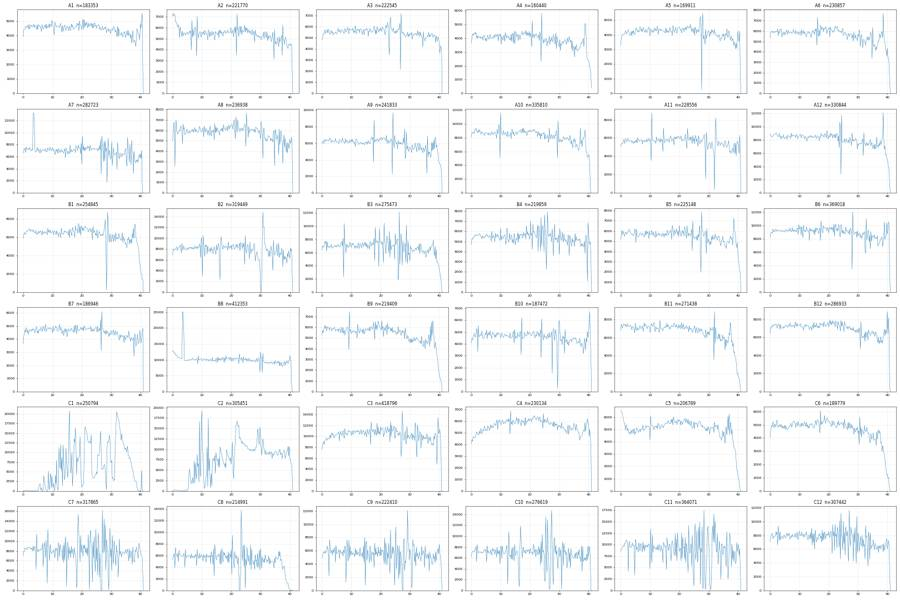
99
tool call · Bash
cat > qc3.py <<'EOF'
import pickle, numpy as np, pandas as pd
D, meta = pickle.load(open('data.pkl','rb'))
memb=pickle.load(open('memb.pkl','rb'))
np.set_printoptions(linewidth=250, suppress=True)
edges=np.array([0,2,5,10,15,20,25,30,35,38,39,40,41.2])
print('time edges',edges)
for w,d in D.items():
t=d['Time'].values; m=memb[w]
b=np.digitize(t,edges)-1
out=[]
for name,num,den in [('Cells%',m['Cells'],np.ones(len(t),bool)),('Sing%',m['Single_Cells'],m['Cells']),('Live%',m['Live'],m['Single_Cells']),('Late%',m['Late_apoptosis'],m['Single_Cells'])]:
v=[100*num[(b==i)].sum()/max(den[b==i].sum(),1) for i in range(len(edges)-1)]
out.append(name+' '+' '.join('%5.1f'%x for x in v))
n=[(b==i).sum() for i in range(len(edges)-1)]
rl=[np.median(d['RL3-A'].values[(b==i)&m['Single_Cells']]) if ((b==i)&m['Single_Cells']).sum()>20 else np.nan for i in range(len(edges)-1)]
bl=[np.median(d['BL1-A'].values[(b==i)&m['Single_Cells']]) if ((b==i)&m['Single_Cells']).sum()>20 else np.nan for i in range(len(edges)-1)]
print(w,'n',n);
for o in out: print(' ',o)
print(' RL3med(sing)',' '.join('%6.0f'%x for x in rl)); print(' BL1med(sing)',' '.join('%6.0f'%x for x in bl))
EOF
python3 qc3.py100
tool output
time edges [ 0. 2. 5. 10. 15. 20. 25. 30. 35. 38. 39. 40. 41.2]
A1 n [8958, 13924, 23181, 22917, 23055, 23654, 22395, 21221, 11964, 3731, 4069, 4284]
Cells% 60.1 58.3 60.2 61.9 64.9 65.1 65.8 64.3 62.1 57.7 60.8 64.1
Sing% 85.9 85.0 84.7 81.0 78.9 78.0 78.9 79.7 82.1 84.6 84.2 84.1
Live% 1.1 1.3 1.0 1.0 1.3 1.1 1.3 1.1 1.1 1.4 1.4 1.2
Late% 78.2 77.1 78.0 77.6 75.7 74.8 71.8 70.6 70.8 70.0 69.3 71.5
RL3med(sing) 38209 38230 38805 38889 39056 38728 38468 39119 38803 38476 37370 40136
BL1med(sing) 985 982 972 963 943 914 861 849 858 845 835 863
A2 n [13506, 16628, 27352, 27203, 27839, 28533, 27470, 25621, 14425, 4874, 4333, 3986]
Cells% 61.3 58.7 60.8 62.1 64.9 66.4 64.7 65.3 62.9 62.6 61.4 57.3
Sing% 82.5 82.0 80.4 76.6 75.5 73.7 73.9 75.3 78.2 80.5 78.8 81.6
Live% 4.0 4.3 4.1 4.5 4.5 4.7 4.7 4.4 3.8 4.5 4.6 5.2
Late% 75.2 75.0 75.4 74.3 73.2 71.4 69.8 67.8 67.6 66.8 67.9 66.7
RL3med(sing) 38978 40004 39740 39891 40500 40086 39701 40283 40431 37314 39848 38625
BL1med(sing) 962 987 981 961 940 904 872 845 844 826 852 813
A3 n [10721, 16388, 28095, 28120, 28222, 28376, 27012, 26173, 15378, 5036, 4918, 4106]
Cells% 63.2 59.5 61.9 63.8 66.0 67.6 67.0 65.9 63.9 63.7 63.1 60.9
Sing% 86.7 86.2 85.6 82.6 81.0 79.9 79.4 81.5 84.6 83.9 85.8 86.7
Live% 2.6 2.7 2.7 2.9 2.8 2.8 2.9 2.4 2.5 2.6 2.6 2.6
Late% 79.5 79.6 80.4 79.7 78.2 77.3 75.1 74.5 73.7 74.6 74.1 71.8
RL3med(sing) 27098 28397 28062 28462 28004 27751 27313 28090 28640 29048 27883 26434
BL1med(sing) 977 977 986 976 935 914 867 859 859 856 854 834
A4 n [8393, 12223, 20519, 20310, 21411, 20669, 19175, 18421, 9960, 4105, 3275, 1979]
Cells% 66.2 63.4 64.7 67.5 69.9 69.4 69.1 67.6 63.9 66.3 65.3 55.4
Sing% 84.1 84.9 82.8 80.5 76.8 77.0 78.0 81.9 85.2 82.9 84.0 92.9
Live% 2.8 2.8 3.0 3.0 3.0 2.8 2.8 2.6 2.4 2.6 2.6 2.6
Late% 80.5 81.6 81.3 81.2 79.8 78.0 77.7 77.5 77.2 79.2 77.3 75.1
RL3med(sing) 23444 22995 23706 23206 24189 23616 23710 24152 23402 22956 23462 20888
BL1med(sing) 991 999 999 966 938 899 876 881 879 894 894 829
A5 n [7927, 12383, 21625, 21495, 21471, 22060, 20709, 20083, 11925, 3550, 3311, 3372]
Cells% 62.3 59.5 60.9 63.3 65.8 67.5 67.1 65.5 64.1 63.3 58.7 61.5
Sing% 86.8 84.3 84.6 81.6 78.8 77.4 77.8 80.1 83.7 83.2 83.6 84.4
Live% 4.2 4.3 4.7 4.1 4.6 4.7 4.6 4.5 4.7 4.7 5.0 3.7
Late% 80.6 81.8 81.6 81.9 81.2 79.8 79.2 77.8 77.7 78.3 75.0 78.6
RL3med(sing) 13169 13459 13760 13984 13766 13675 13646 13688 14153 14769 12708 13276
BL1med(sing) 966 973 967 958 935 890 860 845 839 873 836 848
A6 n [11682, 17653, 29354, 29048, 30327, 30513, 27758, 26098, 14826, 6134, 4389, 3075]
Cells% 63.7 61.0 63.2 65.4 68.1 68.7 67.5 66.4 61.8 66.3 65.7 56.6
Sing% 85.8 85.2 84.1 80.6 78.3 78.7 79.7 80.3 83.8 82.4 84.6 90.1
Live% 6.5 7.0 6.7 6.3 6.8 6.8 6.7 6.3 6.8 6.8 6.4 5.2
Late% 76.8 77.9 77.4 76.9 75.9 74.8 73.4 74.0 72.1 71.4 75.0 72.7
RL3med(sing) 30876 31472 31536 32400 32354 32050 31851 32340 31424 31515 31114 32367
BL1med(sing) 979 997 982 969 946 928 887 890 876 880 900 876
A7 n [14320, 24913, 35264, 34759, 35840, 36692, 34468, 31956, 19405, 5237, 5741, 4128]
Cells% 60.7 60.2 61.5 62.5 65.9 67.1 67.0 64.8 65.4 58.9 58.8 61.9
Sing% 80.1 79.4 77.4 74.8 73.3 71.3 71.3 74.1 74.5 77.8 79.2 78.5
Live% 6.5 6.6 6.0 6.2 6.6 6.6 7.2 6.6 6.0 6.5 6.4 6.2
Late% 75.7 76.2 76.6 76.9 75.4 74.5 73.0 71.8 73.3 69.7 70.2 72.1
RL3med(sing) 27762 28427 28797 28559 29664 29545 28674 29381 29478 27010 26668 27186
BL1med(sing) 1016 1021 1011 1002 972 942 911 888 899 876 872 886
A8 n [11396, 17877, 29832, 29715, 30608, 31614, 30097, 26404, 15372, 4694, 4437, 4892]
Cells% 63.6 61.1 63.1 65.1 68.2 69.5 68.5 67.7 66.5 64.1 60.3 63.5
Sing% 82.4 80.5 79.2 75.9 74.4 73.4 73.5 73.1 74.5 74.8 79.6 79.2
Live% 9.4 9.5 9.7 9.3 9.2 9.7 9.4 9.5 9.2 9.6 9.1 8.7
Late% 75.6 75.9 75.1 75.8 75.8 75.0 74.1 73.2 73.8 73.7 71.3 71.3
RL3med(sing) 19262 19329 19994 20486 20702 20367 20290 20144 20645 20358 18664 19600
BL1med(sing) 1048 1050 1061 1054 1031 998 968 922 931 926 909 912
A9 n [12426, 18924, 31001, 30442, 31472, 31881, 29357, 27050, 15090, 6024, 4997, 3169]
Cells% 64.6 61.9 64.2 65.7 68.7 69.5 68.3 67.7 64.2 65.4 66.3 56.4
Sing% 82.3 81.3 80.5 77.7 75.4 76.1 75.8 77.5 78.6 79.5 80.1 89.4
Live% 6.1 5.7 5.6 5.5 5.7 5.6 5.8 5.5 5.3 6.0 5.3 4.4
Late% 77.4 78.1 77.9 77.6 77.0 76.5 73.9 73.6 73.6 72.4 74.3 71.3
RL3med(sing) 33175 34862 33962 34519 34971 34822 34147 34779 34078 33904 34702 31998
BL1med(sing) 996 1006 999 987 970 945 902 890 893 896 901 862
A10 n [17655, 26217, 42823, 43398, 44242, 43686, 40815, 38308, 21449, 8223, 5833, 3161]
Cells% 61.4 60.2 62.8 63.7 66.3 65.9 65.8 64.4 61.6 64.7 61.8 53.4
Sing% 82.0 81.5 79.2 76.5 74.7 75.0 75.5 76.5 79.6 77.1 81.9 89.3
Live% 3.5 3.5 3.3 3.6 3.4 3.5 3.5
… [16,526 more characters not shown]102
tool call · Bash
cat > qc4.py <<'EOF'
import pickle, numpy as np, pandas as pd
D, meta = pickle.load(open('data.pkl','rb'))
memb=pickle.load(open('memb.pkl','rb'))
np.set_printoptions(linewidth=250, suppress=True)
bins=np.arange(0,41.5,0.5)
print('rate per 0.5 s for last 6 s (frac of median); time when cumulative events reach 99%, 99.9%; first time rate>=50% med')
for w,d in D.items():
t=d['Time'].values
h,_=np.histogram(t,bins); med=np.median(h)
r=h/med
t99=np.quantile(t,0.99); t999=np.quantile(t,0.999); t001=np.quantile(t,0.001)
# last bin with rate >=50% median
last_ok=bins[np.where(r>=0.5)[0].max()+1]; first_ok=bins[np.where(r>=0.5)[0].min()]
print('%4s'%w,' '.join('%.2f'%x for x in r[-12:]),'| t0.1%%=%.2f t99=%.2f t99.9=%.2f first_ok=%.1f last_ok=%.1f'%(t001,t99,t999,first_ok,last_ok))
EOF
python3 qc4.py103
tool output
rate per 0.5 s for last 6 s (frac of median); time when cumulative events reach 99%, 99.9%; first time rate>=50% med A1 0.89 0.94 0.87 0.90 0.84 0.83 0.79 0.85 0.92 0.88 1.03 0.85 | t0.1%=0.06 t99=40.51 t99.9=40.83 first_ok=0.0 last_ok=41.0 A2 0.86 0.87 0.87 0.87 0.95 0.89 0.87 0.92 0.78 0.81 0.84 0.63 | t0.1%=0.04 t99=40.40 t99.9=40.84 first_ok=0.0 last_ok=41.0 A3 0.88 0.91 0.95 0.94 0.95 0.95 0.94 0.89 0.89 0.90 0.75 0.75 | t0.1%=0.06 t99=40.45 t99.9=40.92 first_ok=0.0 last_ok=41.0 A4 0.77 0.84 0.78 0.80 0.86 0.91 0.94 1.11 1.00 0.63 0.55 0.39 | t0.1%=0.06 t99=40.15 t99.9=40.92 first_ok=0.0 last_ok=40.5 A5 0.93 0.90 1.00 0.94 0.96 0.89 0.87 0.81 0.78 0.79 0.90 0.69 | t0.1%=0.06 t99=40.43 t99.9=40.81 first_ok=0.0 last_ok=41.0 A6 0.92 0.79 0.73 0.80 0.90 0.95 0.99 1.12 0.83 0.68 0.66 0.39 | t0.1%=0.05 t99=40.18 t99.9=40.81 first_ok=0.0 last_ok=40.5 A7 0.77 1.14 0.83 0.94 1.08 0.75 0.74 0.75 0.79 0.84 0.90 0.27 | t0.1%=0.05 t99=40.20 t99.9=40.60 first_ok=0.0 last_ok=40.5 A8 0.99 0.91 0.77 0.92 0.92 0.68 0.89 0.69 0.75 0.74 0.84 0.81 | t0.1%=0.06 t99=40.51 t99.9=40.91 first_ok=0.0 last_ok=41.0 A9 0.88 0.67 0.89 0.80 0.79 0.91 0.93 1.04 0.92 0.72 0.58 0.46 | t0.1%=0.05 t99=40.21 t99.9=40.85 first_ok=0.0 last_ok=40.5 A10 0.89 0.82 0.81 0.74 0.96 0.83 0.94 1.00 0.75 0.63 0.63 0.12 | t0.1%=0.05 t99=39.96 t99.9=40.55 first_ok=0.0 last_ok=40.5 A11 0.91 0.98 0.91 0.94 0.84 0.78 0.84 0.89 0.84 0.90 0.91 0.93 | t0.1%=0.06 t99=40.58 t99.9=40.92 first_ok=0.0 last_ok=41.0 A12 0.81 0.84 0.83 0.88 0.87 0.88 0.95 1.17 0.79 0.65 0.56 0.32 | t0.1%=0.05 t99=40.07 t99.9=40.78 first_ok=0.0 last_ok=40.5 B1 0.79 0.86 0.84 0.89 0.90 0.98 1.13 0.86 0.78 0.54 0.35 0.22 | t0.1%=0.06 t99=39.78 t99.9=40.82 first_ok=0.0 last_ok=40.0 B2 0.91 0.96 0.94 0.89 0.92 0.82 0.77 0.79 0.78 0.89 0.88 0.77 | t0.1%=0.06 t99=40.49 t99.9=40.83 first_ok=0.0 last_ok=41.0 B3 0.86 0.84 0.93 0.91 0.95 1.04 0.92 0.89 0.78 0.62 0.45 0.22 | t0.1%=0.05 t99=39.90 t99.9=40.72 first_ok=0.0 last_ok=40.0 B4 0.95 0.96 0.97 0.93 0.91 0.86 0.85 0.81 1.01 0.73 0.99 0.77 | t0.1%=0.06 t99=40.48 t99.9=40.88 first_ok=0.0 last_ok=41.0 B5 0.87 0.82 0.80 0.91 0.90 0.93 0.92 1.15 0.97 0.81 0.59 0.37 | t0.1%=0.05 t99=40.11 t99.9=40.87 first_ok=0.0 last_ok=40.5 B6 0.90 0.92 0.89 0.85 0.80 0.85 0.86 0.86 0.98 1.01 1.07 0.76 | t0.1%=0.06 t99=40.48 t99.9=40.82 first_ok=0.0 last_ok=41.0 B7 0.89 0.88 0.92 0.86 0.84 0.76 0.89 0.79 0.86 0.87 0.82 1.00 | t0.1%=0.06 t99=40.60 t99.9=40.96 first_ok=0.0 last_ok=41.0 B8 0.92 0.93 0.90 0.87 0.84 0.83 0.91 0.90 0.96 0.92 1.08 0.26 | t0.1%=0.04 t99=40.23 t99.9=40.61 first_ok=0.0 last_ok=40.5 B9 0.79 0.82 0.85 0.83 0.95 1.11 0.94 0.80 0.65 0.43 0.25 0.17 | t0.1%=0.05 t99=39.56 t99.9=40.73 first_ok=0.0 last_ok=39.5 B10 0.97 0.95 0.90 0.87 0.91 0.85 0.74 0.91 0.87 1.00 1.24 0.89 | t0.1%=0.06 t99=40.53 t99.9=40.92 first_ok=0.0 last_ok=41.0 B11 0.85 0.76 0.77 0.80 0.93 0.97 0.78 0.64 0.54 0.34 0.25 0.14 | t0.1%=0.05 t99=39.45 t99.9=40.62 first_ok=0.0 last_ok=39.5 B12 0.91 0.88 0.90 0.79 0.81 0.78 0.77 0.85 0.93 0.93 1.07 0.64 | t0.1%=0.06 t99=40.43 t99.9=40.78 first_ok=0.0 last_ok=41.0 C1 2.00 2.00 1.66 1.49 1.14 0.81 0.50 0.37 0.04 0.01 0.05 0.40 | t0.1%=3.43 t99=38.40 t99.9=40.56 first_ok=7.0 last_ok=38.0 C2 1.11 1.03 1.06 1.10 1.02 1.05 1.09 1.00 1.14 1.15 0.90 0.64 | t0.1%=1.98 t99=40.45 t99.9=40.88 first_ok=7.5 last_ok=41.0 C3 0.81 1.05 0.91 0.89 0.88 0.82 0.88 0.98 0.68 1.10 1.02 0.49 | t0.1%=0.07 t99=40.35 t99.9=40.70 first_ok=0.0 last_ok=40.5 C4 1.01 0.94 0.93 0.87 0.81 0.82 0.89 0.96 0.97 1.04 0.94 0.75 | t0.1%=0.07 t99=40.48 t99.9=40.92 first_ok=0.0 last_ok=41.0 C5 0.89 0.82 0.96 1.04 1.08 0.96 0.88 0.68 0.60 0.34 0.21 0.06 | t0.1%=0.04 t99=39.32 t99.9=40.44 first_ok=0.0 last_ok=39.5 C6 0.86 0.78 0.78 0.87 0.96 0.80 0.68 0.66 0.51 0.29 0.22 0.09 | t0.1%=0.06 t99=39.32 t99.9=40.54 first_ok=0.0 last_ok=39.5 C7 0.99 0.99 0.89 0.91 0.84 0.82 0.88 1.05 0.91 1.16 0.93 0.70 | t0.1%=0.05 t99=40.45 t99.9=40.87 first_ok=0.0 last_ok=41.0 C8 0.95 0.98 0.99 1.14 0.92 0.69 0.69 0.34 0.23 0.09 0.00 0.01 | t0.1%=0.05 t99=38.40 t99.9=39.54 first_ok=0.0 last_ok=38.5 C9 0.92 0.94 0.93 0.85 0.87 0.75 0.92 0.93 0.97 1.05 1.11 0.63 | t0.1%=0.06 t99=40.41 t99.9=40.81 first_ok=0.0 last_ok=41.0 C10 0.89 0.94 0.94 0.99 0.87 0.80 0.91 0.85 0.83 1.01 0.94 0.64 | t0.1%=0.06 t99=40.40 t99.9=40.71 first_ok=0.0 last_ok=41.0 C11 0.96 0.91 0.98 0.42 1.24 0.81 0.96 0.79 0.72 1.01 0.98 0.78 | t0.1%=0.05 t99=40.48 t99.9=40.83 first_ok=0.0 last_ok=41.0 C12 0.89 0.81 0.80 0.82 0.77 0.80 0.81 0.83 0.77 0.95 0.83 0.66 | t0.1%=0.05 t99=40.44 t99.9=40.83 first_ok=0.0 last_ok=41.0
105
tool call · Bash
cat > qc5.py <<'EOF'
import pickle, numpy as np, pandas as pd, hashlib
D, meta = pickle.load(open('data.pkl','rb'))
memb=pickle.load(open('memb.pkl','rb'))
def stats(w,mask):
m=memb[w]; n=mask.sum()
c=(m['Cells']&mask).sum(); s=(m['Single_Cells']&mask).sum(); l=(m['Live']&mask).sum(); cp=(m['Caspase_pos']&mask).sum(); la=(m['Late_apoptosis']&mask).sum()
return 'n=%6d Cells%%=%.1f Sing%%=%.1f Live%%=%.2f Casp%%=%.1f Late%%=%.1f'%(n,100*c/n,100*s/c,100*l/s,100*cp/max(l,1),100*la/s)
for w,cut in [('C2',22),('C2',7.5),('C1',22),('C3',22),('C7',22),('A7',5),('B8',5)]:
t=D[w]['Time'].values
print(w,'t<%g '%cut,stats(w,t<cut)); print(w,'t>=%g'%cut,stats(w,t>=cut)); print(w,'all ',stats(w,t>=0))
# spike in A7/B8
for w in ['A7','B8']:
t=D[w]['Time'].values; d=D[w]
for a,b in [(2.0,3.0),(3.0,3.8),(3.8,5)]:
k=(t>=a)&(t<b)
print(w,a,b,'n',k.sum(),'FSCmed %.0f SSCmed %.0f BL1 %.0f RL3 %.0f'%tuple(np.median(d[c].values[k]) for c in ['FSC-A','SSC-A','BL1-A','RL3-A']), stats(w,k))
i=np.where(np.diff(t)<0)[0]; print(w,'nonmonotonic at',t[i],t[i+1])
# duplicates
hs={}
for w,d in D.items():
h=hashlib.md5(d[['FSC-A','SSC-A','BL1-A','RL3-A']].values[:2000].tobytes()).hexdigest()
hs.setdefault(h,[]).append(w)
print('dups:',[v for v in hs.values() if len(v)>1])
EOF
python3 qc5.py106
tool output
C2 t<22 n=112407 Cells%=64.9 Sing%=72.6 Live%=3.78 Casp%=41.6 Late%=77.6 C2 t>=22 n=193044 Cells%=68.0 Sing%=75.6 Live%=3.22 Casp%=34.6 Late%=72.5 C2 all n=305451 Cells%=66.8 Sing%=74.6 Live%=3.42 Casp%=37.3 Late%=74.3 C2 t<7.5 n= 6588 Cells%=55.1 Sing%=70.8 Live%=5.92 Casp%=40.1 Late%=53.4 C2 t>=7.5 n=298863 Cells%=67.1 Sing%=74.6 Live%=3.37 Casp%=37.2 Late%=74.7 C2 all n=305451 Cells%=66.8 Sing%=74.6 Live%=3.42 Casp%=37.3 Late%=74.3 C1 t<22 n= 94935 Cells%=66.6 Sing%=69.4 Live%=2.22 Casp%=33.1 Late%=65.3 C1 t>=22 n=155859 Cells%=65.7 Sing%=76.5 Live%=1.46 Casp%=19.4 Late%=52.7 C1 all n=250794 Cells%=66.1 Sing%=73.8 Live%=1.73 Casp%=25.7 Late%=57.3 C3 t<22 n=230382 Cells%=63.5 Sing%=74.5 Live%=4.48 Casp%=50.8 Late%=82.0 C3 t>=22 n=188414 Cells%=66.0 Sing%=71.4 Live%=4.69 Casp%=49.6 Late%=80.5 C3 all n=418796 Cells%=64.7 Sing%=73.1 Live%=4.57 Casp%=50.3 Late%=81.3 C7 t<22 n=177410 Cells%=59.6 Sing%=73.4 Live%=10.15 Casp%=60.7 Late%=74.1 C7 t>=22 n=140455 Cells%=62.2 Sing%=71.9 Live%=10.56 Casp%=57.9 Late%=72.9 C7 all n=317865 Cells%=60.8 Sing%=72.7 Live%=10.33 Casp%=59.4 Late%=73.6 A7 t<5 n= 39233 Cells%=60.4 Sing%=79.7 Live%=6.54 Casp%=18.9 Late%=76.0 A7 t>=5 n=243490 Cells%=64.5 Sing%=73.9 Live%=6.48 Casp%=20.4 Late%=74.4 A7 all n=282723 Cells%=64.0 Sing%=74.7 Live%=6.49 Casp%=20.2 Late%=74.6 B8 t<5 n= 62387 Cells%=59.0 Sing%=80.6 Live%=3.30 Casp%=43.9 Late%=82.9 B8 t>=5 n=349966 Cells%=63.2 Sing%=76.0 Live%=3.21 Casp%=43.7 Late%=82.7 B8 all n=412353 Cells%=62.5 Sing%=76.7 Live%=3.22 Casp%=43.7 Late%=82.8 A7 2.0 3.0 n 7195 FSCmed 94554 SSCmed 102841 BL1 611 RL3 13347 n= 7195 Cells%=59.0 Sing%=79.6 Live%=6.72 Casp%=19.8 Late%=76.0 A7 3.0 3.8 n 8165 FSCmed 97299 SSCmed 106854 BL1 639 RL3 13952 n= 8165 Cells%=60.5 Sing%=80.5 Live%=6.31 Casp%=17.5 Late%=76.3 A7 3.8 5 n 9553 FSCmed 99850 SSCmed 113017 BL1 676 RL3 14765 n= 9553 Cells%=61.0 Sing%=78.3 Live%=6.67 Casp%=17.4 Late%=76.4 A7 nonmonotonic at [3.96] [0.013] B8 2.0 3.0 n 10600 FSCmed 89412 SSCmed 97358 BL1 608 RL3 6294 n= 10600 Cells%=56.7 Sing%=81.0 Live%=2.71 Casp%=46.2 Late%=83.1 B8 3.0 3.8 n 14085 FSCmed 97778 SSCmed 113285 BL1 680 RL3 6890 n= 14085 Cells%=60.2 Sing%=79.1 Live%=3.75 Casp%=42.2 Late%=82.3 B8 3.8 5 n 13978 FSCmed 95001 SSCmed 108502 BL1 680 RL3 6696 n= 13978 Cells%=59.3 Sing%=79.4 Live%=3.77 Casp%=43.1 Late%=83.2 B8 nonmonotonic at [3.941] [0.013] dups: []
108
agent
Found something worth a closer look: in A7 and B8 the Time channel jumps backwards once (≈3.96 s → 0.01 s), i.e. the file holds two acquisition segments. Checking what the first segment contains.
109
tool call · Bash
cat > qc6.py <<'EOF'
import pickle, numpy as np, pandas as pd
D, meta = pickle.load(open('data.pkl','rb'))
memb=pickle.load(open('memb.pkl','rb'))
np.set_printoptions(linewidth=250, suppress=True)
for w in ['A7','B8']:
d=D[w]; t=d['Time'].values
i=np.where(np.diff(t)<0)[0][0]+1
print(w,'reset index',i,'of',len(t),'seg1 time range',t[:i].min(),t[:i].max(),'seg2',t[i:].min(),t[i:].max())
h,_=np.histogram(t[:i],np.arange(0,4.25,0.25)); print(' seg1 rate/0.25s',h)
h,_=np.histogram(t[i:],np.arange(0,4.25,0.25)); print(' seg2 rate/0.25s (first 4 s)',h)
for nm,k in [('seg1',np.arange(len(t))<i),('seg2',np.arange(len(t))>=i)]:
m=memb[w]; n=k.sum(); c=(m['Cells']&k).sum(); s=(m['Single_Cells']&k).sum()
print(' ',nm,'n=%d Cells%%=%.1f Sing%%=%.1f Live%%=%.2f Casp%%=%.1f Late%%=%.1f'%(n,100*c/n,100*s/c,100*(m['Live']&k).sum()/s,100*(m['Caspase_pos']&k).sum()/max((m['Live']&k).sum(),1),100*(m['Late_apoptosis']&k).sum()/s),
'med FSC %.0f SSC %.0f BL1 %.0f RL3 %.0f'%tuple(np.median(d[c_].values[k]) for c_ in ['FSC-A','SSC-A','BL1-A','RL3-A']),
'sing med BL1 %.0f RL3 %.0f'%tuple(np.median(d[c_].values[k&m['Single_Cells']]) for c_ in ['BL1-A','RL3-A']))
print(' meta tot',meta[w]['tot'],'btim',meta[w]['btim'],'etim',meta[w]['etim'],'vol',meta[w]['vol'],'coinc',meta[w]['#coincidentcount'])
# compare seg1 against neighbours' profile: medians in singlets for all wells
print('singlet medians per well: BL1, RL3, Live%, Late%')
for w in ['A6','A7','A8','A9','B7','B8','B9']:
d=D[w]; m=memb[w]; s=m['Single_Cells']
print(w, '%.0f %.0f %.2f %.1f'%(np.median(d['BL1-A'].values[s]),np.median(d['RL3-A'].values[s]),100*m['Live'].sum()/s.sum(),100*m['Late_apoptosis'].sum()/s.sum()))
# any other time anomalies: duplicated time stamps runs, check all wells for resets
for w,d in D.items():
t=d['Time'].values; n=(np.diff(t)<0).sum()
if n: print(w,'resets',n)
EOF
python3 qc6.py110
tool output
A7 reset index 3638 of 282723 seg1 time range 3.414 3.96 seg2 0.013000000000000001 40.65 seg1 rate/0.25s [ 0 0 0 0 0 0 0 0 0 0 0 0 0 551 1693 1394] seg2 rate/0.25s (first 4 s) [1677 1771 1835 1702 1879 1789 1882 1785 1822 1827 1824 1722 1795 1737 1724 1744] seg1 n=3638 Cells%=63.2 Sing%=82.2 Live%=6.88 Casp%=18.5 Late%=75.6 med FSC 101663 SSC 113667 BL1 680 RL3 14426 sing med BL1 996 RL3 27618 seg2 n=279085 Cells%=64.0 Sing%=74.6 Live%=6.48 Casp%=20.3 Late%=74.6 med FSC 107552 SSC 125694 BL1 691 RL3 16356 sing med BL1 953 RL3 28897 meta tot 282723 btim 14:27:50 etim 14:28:31 vol 136000 coinc 18454 B8 reset index 8110 of 412353 seg1 time range 3.395 3.9410000000000003 seg2 0.013000000000000001 40.653 seg1 rate/0.25s [ 0 0 0 0 0 0 0 0 0 0 0 0 0 1603 3717 2790] seg2 rate/0.25s (first 4 s) [3151 3174 3073 3023 2953 2801 2838 2711 2665 2690 2654 2591 2584 2511 2479 2522] seg1 n=8110 Cells%=64.0 Sing%=77.8 Live%=4.28 Casp%=42.8 Late%=81.5 med FSC 105680 SSC 128328 BL1 730 RL3 7928 sing med BL1 942 RL3 12692 seg2 n=404243 Cells%=62.5 Sing%=76.6 Live%=3.20 Casp%=43.8 Late%=82.8 med FSC 103014 SSC 123492 BL1 711 RL3 7669 sing med BL1 943 RL3 12903 meta tot 412353 btim 14:42:40 etim 14:43:21 vol 136000 coinc 34019 singlet medians per well: BL1, RL3, Live%, Late% A6 935 31898 6.65 75.3 A7 954 28880 6.49 74.6 A8 999 20163 9.43 74.7 A9 949 34396 5.61 76.0 B7 924 18444 3.12 81.4 B8 943 12898 3.22 82.8 B9 907 20055 3.36 79.7 A7 resets 1 B8 resets 1
112
tool call · Bash
cat > qc7.py <<'EOF'
import pickle, numpy as np, pandas as pd
D, meta = pickle.load(open('data.pkl','rb'))
memb=pickle.load(open('memb.pkl','rb'))
print('well nLive Live BL1 pcts 10/25/50/75/90/99 | %Live>3000 >1e4 | singlets RL3>1000: %BL1>1e4')
for w in ['C3','C4','C5','C6','C7','C8','C9','C11','C12','B2','A8']:
d=D[w]; m=memb[w]; b=d['BL1-A'].values; r=d['RL3-A'].values
l=m['Live']; s=m['Single_Cells']&(r>1000)
print(w, l.sum(), np.percentile(b[l],[10,25,50,75,90,99]).round(0), '| %.2f %.2f | %.3f'%(100*(b[l]>3000).mean(),100*(b[l]>1e4).mean(),100*(b[s]>1e4).mean()))
EOF
python3 qc7.py113
tool output
well nLive Live BL1 pcts 10/25/50/75/90/99 | %Live>3000 >1e4 | singlets RL3>1000: %BL1>1e4 C3 9048 [ 26. 95. 403. 742. 1114. 4008.] | 1.59 0.12 | 0.003 C4 845 [ 192. 356. 531. 757. 1115. 3760.] | 1.30 0.71 | 0.266 C5 902 [ 208. 379. 552. 758. 1028. 3168.] | 1.11 0.78 | 0.235 C6 520 [ 230. 409. 586. 791. 1130. 2628.] | 0.96 0.38 | 0.299 C7 14515 [ 23. 108. 577. 934. 1331. 2807.] | 0.84 0.06 | 0.013 C8 5550 [ 0. 43. 113. 690. 1369. 4117.] | 1.87 0.14 | 0.018 C9 9594 [ 7. 54. 160. 766. 1330. 3888.] | 1.94 0.16 | 0.012 C11 17053 [-13. 21. 61. 108. 171. 682.] | 0.00 0.00 | 0.000 C12 140258 [ 236. 691. 1093. 1526. 2358. 4425.] | 4.55 0.03 | 0.000 B2 16124 [ 13. 66. 195. 725. 1174. 3072.] | 1.07 0.07 | 0.006 A8 11188 [ 8. 47. 112. 461. 977. 2552.] | 0.76 0.06 | 0.005
115
tool call · Bash
cat > overlay.py <<'EOF'
import pickle, numpy as np, pandas as pd, matplotlib, sys
matplotlib.use('Agg')
import matplotlib.pyplot as plt
import flowkit as fk
D, meta = pickle.load(open('data.pkl','rb'))
memb=pickle.load(open('memb.pkl','rb'))
gs=fk.parse_gating_xml('/task/outputs/gates.xml')
xf=gs.get_transform('logicle')
def A(v,c=100): return np.arcsinh(np.asarray(v,dtype=float)/c)
g={n:gs.get_gate(n) for n in ['Cells','Single_Cells','Live','Caspase_pos','Late_apoptosis']}
cv=np.array(g['Cells'].vertices); sv=np.array(g['Single_Cells'].vertices)
lv=np.array(g['Late_apoptosis'].vertices); lraw=np.column_stack([xf.inverse(lv[:,0]),xf.inverse(lv[:,1])])
# densify polygon edges in logicle space, then map to raw -> asinh display
def dens(v):
out=[]
for i in range(len(v)):
a=v[i]; b=v[(i+1)%len(v)]
for f in np.linspace(0,1,50): out.append(a+(b-a)*f)
return np.array(out)
ld=dens(lv); ldr=np.column_stack([xf.inverse(ld[:,0]),xf.inverse(ld[:,1])])
t=[-1000,-300,0,300,1000,3000,1e4,3e4,1e5,3e5,1e6]
ws=sys.argv[2:]
fig,axs=plt.subplots(3,len(ws),figsize=(9*len(ws),27),squeeze=False)
for i,w in enumerate(ws):
d=D[w]; m=memb[w]
ax=axs[0,i]; ax.hist2d(d['FSC-A'],d['SSC-A'],bins=250,range=[[0,1.07e6],[0,1.07e6]],norm=matplotlib.colors.LogNorm(),cmap='jet')
ax.plot(*np.vstack([cv,cv[:1]]).T,'k-',lw=2); ax.set_title('%s Cells %.1f%%'%(w,100*m['Cells'].mean()))
c=m['Cells']
ax=axs[1,i]; ax.hist2d(d['SSC-H'][c],d['SSC-A'][c],bins=250,range=[[0,1.07e6],[0,1.07e6]],norm=matplotlib.colors.LogNorm(),cmap='jet')
ax.plot(*np.vstack([sv,sv[:1]]).T,'k-',lw=2); ax.set_title('Single_Cells %.1f%% of Cells'%(100*m['Single_Cells'].sum()/c.sum()))
s=m['Single_Cells']
ax=axs[2,i]; ax.hist2d(A(d['BL1-A'][s]),A(d['RL3-A'][s]),bins=250,range=[[A(-600),A(1.06e6)],[A(-12000),A(1.06e6)]],norm=matplotlib.colors.LogNorm(),cmap='jet')
ax.plot(A(ldr[:,0]),A(ldr[:,1]),'k-',lw=2)
ax.plot(A([-70000,1.06e6,1.06e6,-70000,-70000]),A([-10000,-10000,300,300,-10000]),'k-',lw=2)
ax.plot(A([400,400]),A([-10000,300]),'m-',lw=2)
ax.set_xlim(A(-600),A(1.06e6))
ax.set_xticks(A(t)); ax.set_xticklabels(['%g'%x for x in t]); ax.set_yticks(A(t)); ax.set_yticklabels(['%g'%x for x in t])
ax.set_title('Live %.1f%% Casp+ %.1f%% of Live Late %.1f%%'%(100*m['Live'].sum()/s.sum(),100*m['Caspase_pos'].sum()/max(m['Live'].sum(),1),100*m['Late_apoptosis'].sum()/s.sum()))
plt.tight_layout(); plt.savefig(sys.argv[1],dpi=40)
EOF
python3 overlay.py ov1.png C10 C11 C12 C7 A1 C4116
tool call · Read
{
"file_path": "/task/work/ov1.png"
}117
tool output
(Bash completed with no output)
118
tool output
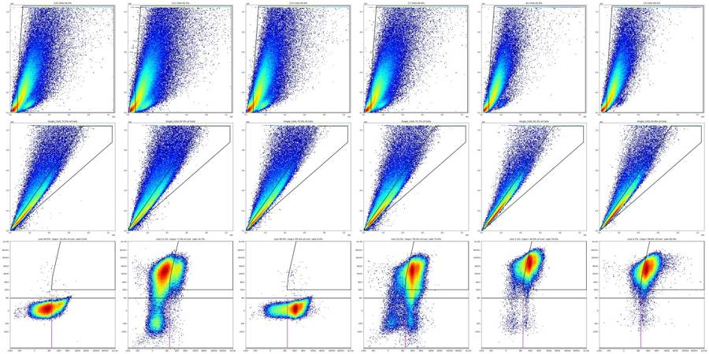
120
tool call · Bash
cat > flags.py <<'EOF'
import pickle, numpy as np, pandas as pd
D, meta = pickle.load(open('data.pkl','rb'))
memb=pickle.load(open('memb.pkl','rb'))
lay=pd.read_csv('/task/inputs/plate_layout.csv')
bins=np.arange(0,41.5,0.5)
rows=[]
for _,r in lay.iterrows():
w=r.well; d=D[w]; t=d['Time'].values; m=memb[w]
n=len(t); h,_=np.histogram(t,bins); med=np.median(h)/0.5
rate=h/0.5
core=rate[:-2]
low=(core<0.5*med).mean()*100; high=(core>1.5*med).mean()*100
cv=core.std()/core.mean()
dt=np.diff(t); maxgap=dt[dt>=0].max(); ngap=(dt>0.1).sum()
first5=(t<5).sum()/5/med; tm=t.max(); last2=(t>tm-2).sum()/2/med
s=m['Single_Cells'].sum(); live=100*m['Live'].sum()/s; late=100*m['Late_apoptosis'].sum()/s
sat=100*np.mean((d['BL1-A'].values>=1048575)|(d['RL3-A'].values>=1048575))
base=(f"{n} events in {tm:.1f} s; median rate {med:.0f} ev/s, rate CV {cv:.2f}, {low:.0f}% of 0.5-s bins <50% of median, "
f"max inter-event gap {maxgap:.2f} s; first 5 s at {first5:.2f}x and last 2 s at {last2:.2f}x median rate; "
f"BL1/RL3 on-rail events {sat:.2f}%; Single_Cells {s}, Live {live:.1f}%, Late_apoptosis {late:.1f}% of singlets")
usable,cat,ev='yes','ok',base
if w=='C1':
usable,cat='no','clog_or_interrupted_flow'
early=(t<7).sum()
ev=(f"Flow blocked then erratic: only {early} events in the first 7 s ({(t<5).sum()/5/med:.2f}x median rate over 0-5 s), {ngap} gaps >0.1 s (max {maxgap:.2f} s), "
f"{low:.0f}% of 0.5-s bins <50% and {high:.0f}% >150% of the median rate (rate CV {cv:.2f}; other wells <=0.3), rate collapses again after 38 s. "
f"Composition drifts with time (Late_apoptosis 68% of singlets at 10-15 s vs 50% at 30-35 s; singlet BL1 median 250 early vs ~700 later) and the well total "
f"(Late_apoptosis {late:.1f}%, Live {live:.1f}%) disagrees with replicates C2/C3 (74%/81%). {n} events.")
elif w=='C2':
usable,cat='no','clog_or_interrupted_flow'
ev=(f"Interrupted start (run directly after the C1 clog): only {(t<5).sum()} events in the first 5 s ({first5:.2f}x median rate), then surging/erratic flow until ~22 s: "
f"{ngap} gaps >0.1 s (max {maxgap:.2f} s), {low:.0f}% of 0.5-s bins <50% of median rate, rate CV {cv:.2f} (clean wells 0.07-0.3). "
f"Events from the disturbed period differ from the stable period (t<22 s vs >=22 s: singlets 72.6% vs 75.6% of Cells, Live 3.8% vs 3.2%, Caspase_pos 41.6% vs 34.6% of Live, Late_apoptosis 77.6% vs 72.5%); "
f"37% of the {n} events come from the disturbed period and cannot be removed with a plate-wide gate set.")
else:
extra=[]
if w in ('A7','B8'):
i=np.where(dt<0)[0][0]+1
extra.append(f"Time restarts once (first {i} events, {100*i/n:.1f}%, stamped 3.4-4.0 s before the clock resets to 0); these events have the same scatter/fluorescence profile as the rest, judged harmless")
if w=='C8':
extra.append(f"sample ran out ~2 s before the end of the draw (rate 0 from 39.5 s; only {(t>38.5).sum()} events after 38.5 s, <2% of file) - populations stable up to that point, so kept")
if w in ('C7','C9','C10','C11'):
extra.append(f"pulsing flow from ~15 s ({ngap} gaps >0.1 s) but mean rate and population fractions are constant over time, so kept")
if w in ('C4','C5','C6'):
b=d['BL1-A'].values; gfp=100*(b[m['Single_Cells']]>1e4).mean()
extra.append(f"GFP control: {gfp:.2f}% of singlets have BL1-A >1e4 (<=0.03% in non-GFP wells); BL1-A = GFP + CellEvent here, so Caspase_pos/Late_apoptosis are not caspase-specific in this well")
if w=='C10':
extra.append(f"unstained control as expected: singlet median BL1-A {np.median(d['BL1-A'].values[m['Single_Cells']]):.0f}, RL3-A {np.median(d['RL3-A'].values[m['Single_Cells']]):.0f}")
if w=='C11':
extra.append(f"Zombie-only control as expected: singlet median BL1-A {np.median(d['BL1-A'].values[m['Single_Cells']]):.0f} (unstained level), RL3-A {np.median(d['RL3-A'].values[m['Single_Cells']]):.0f}")
if w=='C12':
extra.append(f"CellEvent-only control as expected: singlet median BL1-A {np.median(d['BL1-A'].values[m['Single_Cells']]):.0f}, RL3-A {np.median(d['RL3-A'].values[m['Single_Cells']]):.0f} (unstained level)")
if extra: ev=base+'. '+'; '.join(extra)
rows.append(dict(file=r.file,well=w,usable=usable,reason_category=cat,evidence=ev))
F=pd.DataFrame(rows); F.to_csv('/task/outputs/flags.csv',index=False)
print(F.usable.value_counts());
for _,x in F.iterrows(): print(x.well,x.usable,x.reason_category,'|',x.evidence[:330])
EOF
python3 flags.py121
tool output
usable yes 34 no 2 Name: count, dtype: int64 A1 yes ok | 183353 events in 40.9 s; median rate 4543 ev/s, rate CV 0.06, 0% of 0.5-s bins <50% of median, max inter-event gap 0.01 s; first 5 s at 1.01x and last 2 s at 0.97x median rate; BL1/RL3 on-rail events 0.06%; Single_Cells 93481, Live 1.2%, Late_apoptosis 74.6% of singlets A2 yes ok | 221770 events in 40.9 s; median rate 5444 ev/s, rate CV 0.09, 0% of 0.5-s bins <50% of median, max inter-event gap 0.04 s; first 5 s at 1.11x and last 2 s at 0.81x median rate; BL1/RL3 on-rail events 0.14%; Single_Cells 108007, Live 4.4%, Late_apoptosis 71.9% of singlets A3 yes ok | 222545 events in 41.0 s; median rate 5499 ev/s, rate CV 0.05, 0% of 0.5-s bins <50% of median, max inter-event gap 0.02 s; first 5 s at 0.99x and last 2 s at 0.84x median rate; BL1/RL3 on-rail events 0.06%; Single_Cells 118673, Live 2.7%, Late_apoptosis 77.3% of singlets A4 yes ok | 160440 events in 41.1 s; median rate 4020 ev/s, rate CV 0.09, 0% of 0.5-s bins <50% of median, max inter-event gap 0.02 s; first 5 s at 1.03x and last 2 s at 0.63x median rate; BL1/RL3 on-rail events 0.11%; Single_Cells 86850, Live 2.8%, Late_apoptosis 79.3% of singlets A5 yes ok | 169911 events in 40.9 s; median rate 4234 ev/s, rate CV 0.07, 0% of 0.5-s bins <50% of median, max inter-event gap 0.07 s; first 5 s at 0.96x and last 2 s at 0.84x median rate; BL1/RL3 on-rail events 0.01%; Single_Cells 88362, Live 4.5%, Late_apoptosis 80.0% of singlets A6 yes ok | 230857 events in 40.9 s; median rate 5827 ev/s, rate CV 0.08, 0% of 0.5-s bins <50% of median, max inter-event gap 0.03 s; first 5 s at 1.01x and last 2 s at 0.69x median rate; BL1/RL3 on-rail events 0.05%; Single_Cells 123013, Live 6.7%, Late_apoptosis 75.3% of singlets A7 yes ok | 282723 events in 40.6 s; median rate 7034 ev/s, rate CV 0.13, 0% of 0.5-s bins <50% of median, max inter-event gap 0.07 s; first 5 s at 1.12x and last 2 s at 0.83x median rate; BL1/RL3 on-rail events 0.11%; Single_Cells 135079, Live 6.5%, Late_apoptosis 74.6% of singlets. Time restarts once (first 3638 events, 1.3%, stamped 3.4- A8 yes ok | 236938 events in 40.9 s; median rate 5925 ev/s, rate CV 0.09, 0% of 0.5-s bins <50% of median, max inter-event gap 0.08 s; first 5 s at 0.99x and last 2 s at 0.80x median rate; BL1/RL3 on-rail events 0.04%; Single_Cells 118698, Live 9.4%, Late_apoptosis 74.7% of singlets A9 yes ok | 241833 events in 40.9 s; median rate 6107 ev/s, rate CV 0.09, 0% of 0.5-s bins <50% of median, max inter-event gap 0.05 s; first 5 s at 1.03x and last 2 s at 0.70x median rate; BL1/RL3 on-rail events 0.06%; Single_Cells 125260, Live 5.6%, Late_apoptosis 76.0% of singlets A10 yes ok | 335810 events in 40.6 s; median rate 8481 ev/s, rate CV 0.09, 0% of 0.5-s bins <50% of median, max inter-event gap 0.03 s; first 5 s at 1.03x and last 2 s at 0.71x median rate; BL1/RL3 on-rail events 0.04%; Single_Cells 166007, Live 3.4%, Late_apoptosis 77.8% of singlets A11 yes ok | 228556 events in 41.0 s; median rate 5703 ev/s, rate CV 0.09, 0% of 0.5-s bins <50% of median, max inter-event gap 0.09 s; first 5 s at 0.98x and last 2 s at 0.91x median rate; BL1/RL3 on-rail events 0.03%; Single_Cells 111126, Live 5.8%, Late_apoptosis 78.8% of singlets A12 yes ok | 330844 events in 40.9 s; median rate 8421 ev/s, rate CV 0.08, 0% of 0.5-s bins <50% of median, max inter-event gap 0.03 s; first 5 s at 1.03x and last 2 s at 0.62x median rate; BL1/RL3 on-rail events 0.03%; Single_Cells 158144, Live 4.7%, Late_apoptosis 79.3% of singlets B1 yes ok | 254845 events in 41.0 s; median rate 6480 ev/s, rate CV 0.09, 0% of 0.5-s bins <50% of median, max inter-event gap 0.09 s; first 5 s at 1.01x and last 2 s at 0.48x median rate; BL1/RL3 on-rail events 0.06%; Single_Cells 123060, Live 8.1%, Late_apoptosis 72.0% of singlets B2 yes ok | 319449 events in 40.9 s; median rate 8087 ev/s, rate CV 0.16, 2% of 0.5-s bins <50% of median, max inter-event gap 0.14 s; first 5 s at 0.99x and last 2 s at 0.89x median rate; BL1/RL3 on-rail events 0.01%; Single_Cells 148038, Live 10.9%, Late_apoptosis 75.3% of singlets B3 yes ok | 275473 events in 40.9 s; median rate 6908 ev/s, rate CV 0.10, 0% of 0.5-s bins <50% of median, max inter-event gap 0.08 s; first 5 s at 1.01x and last 2 s at 0.55x median rate; BL1/RL3 on-rail events 0.01%; Single_Cells 135157, Live 9.7%, Late_apoptosis 76.9% of singlets B4 yes ok | 219859 events in 40.9 s; median rate 5417 ev/s, rate CV 0.08, 0% of 0.5-s bins <50% of median, max inter-event gap 0.02 s; first 5 s at 1.01x and last 2 s at 0.90x median rate; BL1/RL3 on-rail events 0.17%; Single_Cells 108039, Live 3.4%, Late_apoptosis 74.9% of singlets B5 yes ok | 225148 events in 41.0 s; median rate 5649 ev/s, rate CV 0.07, 0% of 0.5-s bins <50% of median, max inter-event gap 0.04 s; first 5 s at 1.02x and last 2 s at 0.69x median rate; BL1/RL3 on-rail events 0.03%; Single_Cells 110087, Live 5.0%, Late_apoptosis 79.0% of singlets B6 yes ok | 369018 events in 40.9 s; median rate 9172 ev/s, rate CV 0.06, 0% of 0.5-s bins <50% of median, max inter-event gap 0.03 s; first 5 s at 1.00x and last 2 s at 1.02x median rate; BL1/RL3 on-rail events 0.02%; Single_Cells 173686, Live 5.6%, Late_apoptosis 80.7% of singlets B7 yes ok | 186946 events in 41.0 s; median rate 4687 ev/s, rate CV 0.07, 0% of 0.5-s bins <50% of median, max inter-event gap 0.02 s; first 5 s at 0.98x and last 2 s at 0.89x median rate; BL1/RL3 on-rail events 0.03%; Single_Cells 98448, Live 3.1%, Late_apoptosis 81.4% of singlets B8 yes ok | 412353 events in 40.7 s; median rate 10008 ev/s, rate CV 0.16, 0% of 0.5-s bins <50% of median, max inter-event gap 0.01 s; first 5 s at 1.25x and last 2 s at 0.96x median rate; BL1/RL3 on-rail events 0.01%; Single_Cells 197703, Live 3.2%, Late_apoptosis 82.8% of singlets. Time restarts once (first 8110 events, 2.0%, stamped 3.4 B9 yes ok | 219409 events in 41.0 s; median rate 5647 ev/s, rate CV 0.11, 1% of 0.5-s bins <50% of median, max inter-event gap 0.02 s; first 5 s at 1 … [5,090 more characters not shown]
123
agent
Flags drafted (C1 and C2 unusable for interrupted flow; the rest OK with notes). Tightening the evidence wording, then writing `notes.md` and running a final consistency check.
124
tool call · Bash
sed -i 's/(rate CV {cv:.2f}; other wells <=0.3)/(rate CV {cv:.2f}; all wells other than C1\/C2 are 0.05-0.23)/; s/rate CV {cv:.2f} (clean wells 0.07-0.3)/rate CV {cv:.2f} (all wells other than C1\/C2 are 0.05-0.23)/' flags.py && python3 flags.py > /dev/null && python3 - <<'EOF'
import pandas as pd, flowkit as fk, numpy as np, warnings
warnings.filterwarnings('ignore')
F=pd.read_csv('/task/outputs/flags.csv'); C=pd.read_csv('/task/outputs/counts.csv')
print(F.shape, list(F.columns), F.reason_category.value_counts().to_dict())
assert ((F.usable=='yes')==(F.reason_category=='ok')).all()
print(F[F.usable=='no'].evidence.tolist())
print(F[F.well.isin(['C8','A7'])].evidence.tolist())
print(C.shape, list(C.columns)); print(C.groupby('population').pct_of_parent.agg(['min','max']))
# independent recheck of 3 wells against saved gates
gs=fk.parse_gating_xml('/task/outputs/gates.xml')
for w in ['A1','C1','C12']:
f='Caspase_KO_RNAswap-rep2_caspase_Group_%s.fcs'%w
rep=gs.gate_sample(fk.Sample('/task/inputs/raw/'+f)).report.set_index('gate_name')['count']
sub=C[C.file==f].set_index('population')['count']
assert all(int(rep[p])==int(sub[p]) for p in sub.index), w
print('counts match saved gates; order:',C.population.head(5).tolist())
for g,p in gs.get_gate_ids():
print(g,p,[ (d.id,d.compensation_ref,d.transformation_ref) for d in gs.get_gate(g,p).dimensions])
EOF125
tool output
(36, 5) ['file', 'well', 'usable', 'reason_category', 'evidence'] {'ok': 34, 'clog_or_interrupted_flow': 2}
['Flow blocked then erratic: only 1614 events in the first 7 s (0.01x median rate over 0-5 s), 8 gaps >0.1 s (max 1.29 s), 34% of 0.5-s bins <50% and 34% >150% of the median rate (rate CV 0.85; all wells other than C1/C2 are 0.05-0.23), rate collapses again after 38 s. Composition drifts with time (Late_apoptosis 68% of singlets at 10-15 s vs 50% at 30-35 s; singlet BL1 median 250 early vs ~700 later) and the well total (Late_apoptosis 57.3%, Live 1.7%) disagrees with replicates C2/C3 (74%/81%). 250794 events.', 'Interrupted start (run directly after the C1 clog): only 504 events in the first 5 s (0.01x median rate), then surging/erratic flow until ~22 s: 10 gaps >0.1 s (max 0.41 s), 22% of 0.5-s bins <50% of median rate, rate CV 0.54 (all wells other than C1/C2 are 0.05-0.23). Events from the disturbed period differ from the stable period (t<22 s vs >=22 s: singlets 72.6% vs 75.6% of Cells, Live 3.8% vs 3.2%, Caspase_pos 41.6% vs 34.6% of Live, Late_apoptosis 77.6% vs 72.5%); 37% of the 305451 events come from the disturbed period and cannot be removed with a plate-wide gate set.']
['282723 events in 40.6 s; median rate 7034 ev/s, rate CV 0.13, 0% of 0.5-s bins <50% of median, max inter-event gap 0.07 s; first 5 s at 1.12x and last 2 s at 0.83x median rate; BL1/RL3 on-rail events 0.11%; Single_Cells 135079, Live 6.5%, Late_apoptosis 74.6% of singlets. Time restarts once (first 3638 events, 1.3%, stamped 3.4-4.0 s before the clock resets to 0); these events have the same scatter/fluorescence profile as the rest, judged harmless', '214991 events in 40.8 s; median rate 5589 ev/s, rate CV 0.22, 5% of 0.5-s bins <50% of median, max inter-event gap 0.32 s; first 5 s at 1.05x and last 2 s at 0.11x median rate; BL1/RL3 on-rail events 0.27%; Single_Cells 95700, Live 5.8%, Late_apoptosis 73.5% of singlets. sample ran out ~2 s before the end of the draw (rate 0 from 39.5 s; only 1857 events after 38.5 s, <2% of file) - populations stable up to that point, so kept']
(180, 6) ['file', 'well', 'population', 'count', 'parent_population', 'pct_of_parent']
min max
population
Caspase_pos 2.2870 85.0426
Cells 58.5811 67.0899
Late_apoptosis 0.0077 84.9636
Live 0.5199 99.8971
Single_Cells 67.9124 83.8462
counts match saved gates; order: ['Cells', 'Single_Cells', 'Live', 'Caspase_pos', 'Late_apoptosis']
Cells ('root',) [('FSC-A', 'uncompensated', None), ('SSC-A', 'uncompensated', None)]
Single_Cells ('root', 'Cells') [('SSC-H', 'uncompensated', None), ('SSC-A', 'uncompensated', None)]
Live ('root', 'Cells', 'Single_Cells') [('BL1-A', 'uncompensated', None), ('RL3-A', 'uncompensated', None)]
Caspase_pos ('root', 'Cells', 'Single_Cells', 'Live') [('BL1-A', 'uncompensated', None), ('RL3-A', 'uncompensated', None)]
Late_apoptosis ('root', 'Cells', 'Single_Cells') [('BL1-A', 'uncompensated', 'logicle'), ('RL3-A', 'uncompensated', 'logicle')]127
tool call · Write
{
"file_path": "/task/outputs/notes.md",
"content": "# Gating notes \u2014 Caspase_KO_RNAswap-rep2 (36 wells, one gate set, raw data)\n\nAll gates are in `gates.xml` (GatingML 2.0, FlowKit 1.2.3), every dimension `uncompensated`. `counts.csv` is exactly what these saved gates give with `gate_sample`; no per-well changes.\n\n## Gate placement\n| Gate (parent) | Axes | Boundary (raw units) | Why |\n|---|---|---|---|\n| Cells (root) | FSC-A \u00d7 SSC-A, linear polygon | FSC-A \u2265 75k; upper-left corner cut from (75k, 300k) to (130k, top); open to the top/right rails | FSC-A histogram has a debris peak at 25\u201330k and a cell peak at ~120k; the valley is at 75\u201390k in every well. The low-SSC arm (FSC 150\u2013300k) is kept: it holds the Zombie-negative cells. Saturated scatter events are kept here (they are not debris). 59\u201367 % of events. |\n| Single_Cells (Cells) | SSC-H \u00d7 SSC-A, linear polygon | band between SSC-A = 0.85\u00b7SSC-H and SSC-A = 1.40\u00b7SSC-H + 12k, capped at 1.04e6 | Main diagonal ridge has SSC-A/SSC-H \u2248 1.05\u20131.2; events above the band have high area for their height (aggregates/coincidence). The cap drops events on the SSC rail (ratio unknown). 68\u201384 % of Cells. |\n| Live (Single_Cells) | BL1-A \u00d7 RL3-A rectangle | RL3-A \u221210 000 to 300; BL1-A whole range | Unstained C10 and CellEvent-only C12: 99.9 % of singlets have RL3-A < 300. Zombie-only C11 shows a negative cluster centred at about \u2212200 (range \u22121000 to ~+300) and a bright population rising from ~1000. Lower edge is far below the negative cluster so negative values are kept. |\n| Caspase_pos (Live) | same rectangle | BL1-A \u2265 400, same RL3-A range | In Zombie-negative singlets BL1-A is bimodal: negative mode ~50\u2013100, positive mode ~650\u20131000, valley at 350\u2013450 (pooled stained wells and C12). In C11 (no CellEvent) only 2.3 % of Live exceed 400. |\n| Late_apoptosis (Single_Cells) | BL1-A \u00d7 RL3-A polygon on logicle (T=2^20, W=0.5, M=4.5) | RL3-A \u2265 1000; left edge BL1-A 400 at RL3 1k \u2192 450 (5k) \u2192 550 (17k) \u2192 700 (55k) \u2192 900 (200k) \u2192 1250 (top); open to the rails | Zombie-bright = clearly above the unstained range (gap 300\u20131000 is left unreported, as in the strategy). Left edge starts at the C12 boundary (400) and leans right \u2014 see deviation 1. |\n\n## Deviations from `gating_strategy.md`\n1. **Late_apoptosis left edge is slanted, not a single BL1-A value.** In C11 (Zombie only, no CellEvent) BL1-A background of Zombie-bright cells rises with RL3-A (median 160 at RL3 1\u20133k, 580 above 100k). The edge follows the point where the C11 and C7\u2013C9 BL1-A distributions cross in each RL3 band. Even so, the two distributions overlap: **C11 still gives 14.7 % of singlets in Late_apoptosis** (stained no-virus wells: 73\u201375 %). A vertical edge at 400 would roughly double that background.\n2. Live and Caspase_pos are 2-D rectangles as described, but in raw units (no transform); the boundaries are the same on any scale.\n3. Nothing else: hierarchy, axes and shapes are as given.\n\n## Things to know when reading the counts\n- **Caspase_pos background.** The BL1-A boundary is set for Zombie-negative cells. In the unstained well C10 25 % of \"Live\" fall in Caspase_pos, because without Zombie its autofluorescent dead cells are not removed; C11 (2.3 %) is the relevant background.\n- **Zombie staining intensity differs between wells** (singlet RL3-A median 9k\u201340k, also within triplicates). Live is 0.5\u201311 % of singlets in stained wells; most cells are Zombie-bright.\n- **C4\u2013C6 (AAV1-GFP):** BL1-A is GFP + CellEvent. Only 0.24\u20130.30 % of singlets are GFP-bright (>1e4), but Live cells are shifted up in BL1-A, so Caspase_pos (69\u201376 % of Live) is not caspase-specific there.\n- In every CellEvent-stained well the singlet BL1-A median falls ~13 % during the 41 s acquisition, so Late_apoptosis % drops a few points from start to end of each file. Same in all wells; not flagged.\n\n## Flags (`flags.csv`)\n- **C1 \u2014 unusable, clog_or_interrupted_flow:** almost no events for 7 s, gaps up to 1.29 s, erratic rate throughout, composition changes with time, disagrees with C2/C3.\n- **C2 \u2014 unusable, clog_or_interrupted_flow:** run right after C1; 504 events in the first 5 s, surging flow until ~22 s (37 % of events). This is the judgement call: the stable second half (193k events) looks normal, but it cannot be isolated with a plate-wide gate set. Whole-well values differ little from the stable half (Live 3.4 vs 3.2 %, Late_apoptosis 74.3 vs 72.5 %).\n- Kept as usable, with the observation recorded in `evidence`: C8 (sample ran out ~2 s early, <1 % of events affected), C7/C9/C10/C11 (pulsing flow, populations stable over time), A7/B8 (1\u20132 % of events carry a pre-restart time stamp, same profile as the rest). No well has too few events (\u2265160k) or meaningful fluorescence saturation (\u22640.27 %). Controls C10\u2013C12 behave as labelled.\n"
}128
tool output
File created successfully at: /task/outputs/notes.md (file state is current in your context — no need to Read it back)
130
tool call · Bash
python3 - <<'EOF'
import pickle, numpy as np
D, meta = pickle.load(open('data.pkl','rb')); memb=pickle.load(open('memb.pkl','rb'))
for w in ['C11','C7','A1']:
d=D[w]; s=memb[w]['Single_Cells']; b=d['BL1-A'].values; r=d['RL3-A'].values
print(w,'vertical-400 Late%% = %.1f, slanted = %.1f'%(100*(s&(b>=400)&(r>=1000)).sum()/s.sum(),100*memb[w]['Late_apoptosis'].sum()/s.sum()))
import pandas as pd
print(pd.Series({w:np.median(D[w]['RL3-A'].values[memb[w]['Single_Cells']]) for w in D if w not in('C10','C12')}).describe())
EOF
wc -w /task/outputs/notes.md; ls -la /task/outputs131
tool output
C11 vertical-400 Late% = 21.3, slanted = 14.7 C7 vertical-400 Late% = 76.4, slanted = 73.6 A1 vertical-400 Late% = 87.4, slanted = 74.6 count 34.000000 mean 22167.779412 std 9021.699402 min 8861.000000 25% 14362.250000 50% 21159.000000 75% 28654.750000 max 39912.000000 dtype: float64 796 /task/outputs/notes.md total 56 drwxr-xr-x 2 root root 4096 Nov 10 18:59 . drwxr-xr-x 5 root root 4096 Nov 10 18:47 .. -rw-r--r-- 1 root root 14815 Nov 10 18:54 counts.csv -rw-r--r-- 1 root root 14230 Nov 10 18:59 flags.csv -rw-r--r-- 1 root root 5448 Nov 10 18:54 gates.xml -rw-r--r-- 1 root root 4809 Nov 10 18:59 notes.md
133
thinking
The slanted edge only moved C11 background from 21% to 15% while making Late_apoptosis depend on Zombie uptake (A1 loses 13 points, C7 only 3), so I'm switching to a single BL1-A boundary at 400 and regenerating everything.
134
tool call · Bash
python3 - <<'EOF'
s=open('build.py').read()
old="la_raw=[(400,1000),(450,5000),(550,17000),(700,55000),(900,200000),(1250,TOP),(TOP,TOP),(TOP,1000)]"
new="la_raw=[(BL1_POS,1000),(BL1_POS,TOP),(TOP,TOP),(TOP,1000)]"
assert old in s; open('build.py','w').write(s.replace(old,new))
EOF
python3 build.py && python3 counts.py | tail -40 && python3 flags.py > /dev/null && python3 overlay.py ov2.png C10 C11 C12 C7 A1 C4 && python3 - <<'EOF'
import pandas as pd, flowkit as fk, warnings
warnings.filterwarnings('ignore')
F=pd.read_csv('/task/outputs/flags.csv'); C=pd.read_csv('/task/outputs/counts.csv')
assert F.shape==(36,5) and C.shape==(180,6) and ((F.usable=='yes')==(F.reason_category=='ok')).all()
gs=fk.parse_gating_xml('/task/outputs/gates.xml')
for w in ['A1','B8','C1','C11','C4']:
f='Caspase_KO_RNAswap-rep2_caspase_Group_%s.fcs'%w
rep=gs.gate_sample(fk.Sample('/task/inputs/raw/'+f)).report.set_index('gate_name')['count']
sub=C[C.file==f].set_index('population')['count']
assert all(int(rep[p])==int(sub[p]) for p in sub.index), w
print('OK: counts.csv matches saved gates.xml'); print(F[F.usable=='no'][['well','reason_category']]); print(F[F.well=='C1'].evidence.values[0][-160:])
EOF135
tool call · Read
{
"file_path": "/task/work/ov2.png"
}136
tool output
[('Cells', ('root',)), ('Single_Cells', ('root', 'Cells')), ('Live', ('root', 'Cells', 'Single_Cells')), ('Caspase_pos', ('root', 'Cells', 'Single_Cells', 'Live')), ('Late_apoptosis', ('root', 'Cells', 'Single_Cells'))]
population Cells Single_Cells Live Caspase_pos Late_apoptosis Cells_pct Single_Cells_pct Live_pct Caspase_pos_pct Late_apoptosis_pct construct
well
A1 115188 93481 1094 382 81727 62.82 81.16 1.17 34.92 87.43 RSV
A2 140173 108007 4767 1194 90681 63.21 77.05 4.41 25.05 83.96 RSV
A3 143651 118673 3222 1304 103127 64.55 82.61 2.72 40.47 86.90 RSV
A4 107639 86850 2457 613 75640 67.09 80.69 2.83 24.95 87.09 hSyn
A5 109019 88362 3994 1479 74864 64.16 81.05 4.52 37.03 84.72 hSyn
A6 151315 123013 8182 1793 103261 65.54 81.30 6.65 21.91 83.94 hSyn
A7 180832 135079 8766 1774 111213 63.96 74.70 6.49 20.24 82.33 9523
A8 156711 118698 11188 3000 94560 66.14 75.74 9.43 26.81 79.66 9523
A9 160557 125260 7022 1694 106026 66.39 78.02 5.61 24.12 84.64 9523
A10 214693 166007 5682 1126 143646 63.93 77.32 3.42 19.82 86.53 3945
A11 140436 111126 6486 1967 93102 61.44 79.13 5.84 30.33 83.78 3945
A12 204757 158144 7364 2059 135163 61.89 77.24 4.66 27.96 85.47 3945
B1 160680 123060 10011 2505 98358 63.05 76.59 8.14 25.02 79.93 9421
B2 199210 148038 16124 6290 114861 62.36 74.31 10.89 39.01 77.59 9421
B3 178329 135157 13088 4202 108343 64.74 75.79 9.68 32.11 80.16 9421
B4 135492 108039 3715 1090 91986 61.63 79.74 3.44 29.34 85.14 3503
B5 138926 110087 5556 1689 92067 61.70 79.24 5.05 30.40 83.63 3503
B6 226900 173686 9640 3669 146171 61.49 76.55 5.55 38.06 84.16 3503
B7 117415 98448 3076 942 85930 62.81 83.85 3.12 30.62 87.28 8820
B8 257870 197703 6366 2785 171571 62.54 76.67 3.22 43.75 86.78 8820
B9 138158 111179 3737 1254 96403 62.97 80.47 3.36 33.56 86.71 8820
B10 115119 95710 2915 859 82606 61.41 83.14 3.05 29.47 86.31 8790
B11 173394 139355 5202 2214 120790 63.88 80.37 3.73 42.56 86.68 8790
B12 181180 146269 4808 2319 128095 63.14 80.73 3.29 48.23 87.57 8790
C1 165669 122250 2121 545 103804 66.06 73.79 1.74 25.70 84.91 3945_3503
C2 204167 152210 5198 1939 132544 66.84 74.55 3.42 37.30 87.08 3945_3503
C3 270768 197914 9048 4547 168129 64.65 73.09 4.57 50.25 84.95 3945_3503
C4 147693 120746 845 581 109636 64.18 81.75 0.70 68.76 90.80 AAV1_GFP
C5 134040 109819 902 649 100022 64.82 81.93 0.82 71.95 91.08 AAV1_GFP
C6 120005 100024 520 394 92732 63.23 83.35 0.52 75.77 92.71 AAV1_GFP
C7 193138 140454 14515 8625 107287 60.76 72.72 10.33 59.42 76.39 no_virus
C8 125944 95700 5550 1794 79453 58.58 75.99 5.80 32.32 83.02 no_virus
C9 134566 98978 9594 3673 77444 60.50 73.55 9.69 38.28 78.24 no_virus
C10 175778 129279 129146 32798 18 63.55 73.55 99.90 25.40 0.01 no_virus
C11 223965 152100 17053 390 32342 61.52 67.91 11.21 2.29
… [491 more characters not shown]137
tool output
139
tool call · Bash
python3 qc3.py | grep -A6 -E "^(C1|C2|C3|A1) " && python3 - <<'EOF'
import pickle, numpy as np
D, meta = pickle.load(open('data.pkl','rb')); memb=pickle.load(open('memb.pkl','rb'))
def st(w,k):
m=memb[w]; c=(m['Cells']&k).sum(); s=(m['Single_Cells']&k).sum(); l=(m['Live']&k).sum()
return dict(n=int(k.sum()),cells=100*c/k.sum(),sing=100*s/c,live=100*l/s,casp=100*(m['Caspase_pos']&k).sum()/max(l,1),late=100*(m['Late_apoptosis']&k).sum()/s, bl1=float(np.median(D[w]['BL1-A'].values[k&m['Single_Cells']])))
for w in ['C1','C2','C3']:
t=D[w]['Time'].values
for nm,k in [('t<22',t<22),('t>=22',t>=22),('all',t>=0)]: print(w,nm,{a:round(b,1) for a,b in st(w,k).items()})
EOF140
tool output
A1 n [8958, 13924, 23181, 22917, 23055, 23654, 22395, 21221, 11964, 3731, 4069, 4284]
Cells% 60.1 58.3 60.2 61.9 64.9 65.1 65.8 64.3 62.1 57.7 60.8 64.1
Sing% 85.9 85.0 84.7 81.0 78.9 78.0 78.9 79.7 82.1 84.6 84.2 84.1
Live% 1.1 1.3 1.0 1.0 1.3 1.1 1.3 1.1 1.1 1.4 1.4 1.2
Late% 88.9 87.6 88.4 88.3 87.6 87.7 86.9 86.6 86.5 85.4 84.1 86.1
RL3med(sing) 38209 38230 38805 38889 39056 38728 38468 39119 38803 38476 37370 40136
BL1med(sing) 985 982 972 963 943 914 861 849 858 845 835 863
--
C1 n [165, 94, 7155, 24409, 44421, 43062, 43271, 60673, 23980, 2280, 114, 1170]
Cells% 57.6 50.0 50.1 59.7 68.9 69.4 68.8 68.0 59.6 34.6 3.5 69.5
Sing% 89.5 95.7 67.8 68.2 72.1 73.8 75.2 73.5 81.2 96.1 75.0 70.8
Live% 1.2 0.0 4.0 2.9 1.6 1.7 1.6 1.7 1.3 0.4 0.0 2.3
Late% 18.8 15.6 75.0 87.5 89.3 88.0 86.9 80.6 79.4 74.7 66.7 84.5
RL3med(sing) 28092 20877 25780 30082 31955 32533 31941 29930 28128 24666 nan 29890
BL1med(sing) 250 234 622 757 734 685 663 618 606 555 nan 640
C2 n [307, 197, 23071, 30884, 38757, 57860, 54205, 47715, 27196, 8944, 9752, 6563]
Cells% 58.6 38.6 63.2 65.3 62.9 71.9 69.7 65.5 65.5 65.1 65.2 63.8
Sing% 93.9 40.8 65.6 68.8 81.4 73.4 75.3 75.3 75.3 77.5 76.9 81.4
Live% 6.5 3.2 6.0 3.5 2.9 3.4 3.2 3.3 3.0 3.4 3.5 3.1
Late% 31.4 22.6 84.9 89.2 90.7 89.3 88.0 83.9 84.1 82.8 83.6 83.8
RL3med(sing) 16942 13212 22452 23551 24640 24734 24162 22672 22860 21932 22038 22709
BL1med(sing) 338 224 852 872 830 826 796 750 753 748 745 739
C3 n [17844, 29969, 52637, 53741, 54024, 55186, 50799, 49461, 28146, 9717, 9361, 7911]
Cells% 58.3 57.6 61.9 64.4 67.2 68.7 67.6 65.5 64.3 64.2 60.5 62.5
Sing% 83.0 79.9 76.9 73.8 70.5 68.8 69.8 72.2 73.2 73.3 76.0 75.4
Live% 4.3 4.5 4.5 4.5 4.5 4.8 5.0 4.5 4.5 4.5 4.2 4.0
Late% 84.0 84.8 85.3 85.2 85.7 84.9 84.4 84.9 84.8 84.3 84.6 84.7
RL3med(sing) 10340 10491 11096 11074 11338 11302 11171 11406 11052 11334 10427 11234
BL1med(sing) 936 947 955 949 940 912 878 871 875 874 863 876
C1 t<22 {'n': 94935, 'cells': 66.6, 'sing': 69.4, 'live': 2.2, 'casp': 33.1, 'late': 87.7, 'bl1': 730.0}
C1 t>=22 {'n': 155859, 'cells': 65.7, 'sing': 76.5, 'live': 1.5, 'casp': 19.4, 'late': 83.4, 'bl1': 637.0}
C1 all {'n': 250794, 'cells': 66.1, 'sing': 73.8, 'live': 1.7, 'casp': 25.7, 'late': 84.9, 'bl1': 669.0}
C2 t<22 {'n': 112407, 'cells': 64.9, 'sing': 72.6, 'live': 3.8, 'casp': 41.6, 'late': 88.7, 'bl1': 844.0}
C2 t>=22 {'n': 193044, 'cells': 68.0, 'sing': 75.6, 'live': 3.2, 'casp': 34.6, 'late': 86.2, 'bl1': 778.0}
C2 all {'n': 305451, 'cells': 66.8, 'sing': 74.6, 'live': 3.4, 'casp': 37.3, 'late': 87.1, 'bl1': 801.0}
C3 t<22 {'n': 230382, 'cells': 63.5, 'sing': 74.5, 'live': 4.5, 'casp': 50.8, 'late': 85.2, 'bl1': 944.0}
C3 t>=22 {'n': 188414, 'cells': 66.0, 'sing': 71.4, 'live': 4.7, 'casp': 49.6, 'late': 84.6, 'bl1': 880.0}
C3 all {'n': 418796, 'cells': 64.7, 'sing': 73.1, 'live': 4.6, 'casp': 50.3, 'late': 85.0, 'bl1': 916.0}142
tool call · Bash
python3 - <<'EOF'
s=open('flags.py').read()
a=s.index(" if w=='C1':"); b=s.index(" else:\n extra=[]")
new=''' def seg(k):
c=(m['Cells']&k).sum(); ss=(m['Single_Cells']&k).sum(); l=(m['Live']&k).sum()
return dict(sing=100*ss/max(c,1),live=100*l/max(ss,1),casp=100*(m['Caspase_pos']&k).sum()/max(l,1),late=100*(m['Late_apoptosis']&k).sum()/max(ss,1),bl1=np.median(d['BL1-A'].values[k&m['Single_Cells']]))
if w=='C1':
usable,cat='no','clog_or_interrupted_flow'
e1=seg((t>=5)&(t<10)); e2=seg((t>=15)&(t<20)); e3=seg((t>=30)&(t<35)); al=seg(t>=0)
ev=(f"Flow blocked then erratic: only {(t<7).sum()} events in the first 7 s ({first5:.2f}x median rate over 0-5 s), {ngap} gaps >0.1 s (max {maxgap:.2f} s), "
f"{low:.0f}% of 0.5-s bins <50% and {high:.0f}% >150% of the median rate (rate CV {cv:.2f}; all wells other than C1/C2 are 0.05-0.23), rate collapses again after 38 s. "
f"Composition changes with time (Late_apoptosis {e1['late']:.0f}% of singlets at 5-10 s, {e2['late']:.0f}% at 15-20 s, {e3['late']:.0f}% at 30-35 s; singlets {e1['sing']:.0f}% -> {e3['sing']:.0f}% of Cells). "
f"Singlet BL1-A median {al['bl1']:.0f} vs 801/916 in replicates C2/C3; Live {al['live']:.1f}% vs 3.4/4.6%; Caspase_pos {al['casp']:.0f}% of Live vs 37/50%. {n} events.")
elif w=='C2':
usable,cat='no','clog_or_interrupted_flow'
a_=seg(t<22); b_=seg(t>=22)
ev=(f"Interrupted start (run directly after the C1 clog): only {(t<5).sum()} events in the first 5 s ({first5:.2f}x median rate), then surging/erratic flow until ~22 s: "
f"{ngap} gaps >0.1 s (max {maxgap:.2f} s), {low:.0f}% of 0.5-s bins <50% of median rate, rate CV {cv:.2f} (all wells other than C1/C2 are 0.05-0.23). "
f"Events from the disturbed period differ from the stable period (t<22 s vs >=22 s: singlets {a_['sing']:.1f}% vs {b_['sing']:.1f}% of Cells, Live {a_['live']:.1f}% vs {b_['live']:.1f}%, "
f"Caspase_pos {a_['casp']:.1f}% vs {b_['casp']:.1f}% of Live, Late_apoptosis {a_['late']:.1f}% vs {b_['late']:.1f}%); "
f"{100*(t<22).mean():.0f}% of the {n} events come from the disturbed period and cannot be removed with a plate-wide gate set.")
'''
open('flags.py','w').write(s[:a]+new+s[b:])
EOF
python3 flags.py | grep -E "^(C1|C2|C11) " ; python3 - <<'EOF'
import pandas as pd
F=pd.read_csv('/task/outputs/flags.csv')
for w in ['C1','C2']: print(F[F.well==w].evidence.values[0],'\n')
assert F.shape==(36,5) and ((F.usable=='yes')==(F.reason_category=='ok')).all()
EOF143
tool output
C1 no clog_or_interrupted_flow | Flow blocked then erratic: only 1614 events in the first 7 s (0.01x median rate over 0-5 s), 8 gaps >0.1 s (max 1.29 s), 34% of 0.5-s bins <50% and 34% >150% of the median rate (rate CV 0.85; all wells other than C1/C2 are 0.05-0.23), rate collapses again after 38 s. Composition changes with time (Late_apoptosis 75% of singlets C2 no clog_or_interrupted_flow | Interrupted start (run directly after the C1 clog): only 504 events in the first 5 s (0.01x median rate), then surging/erratic flow until ~22 s: 10 gaps >0.1 s (max 0.41 s), 22% of 0.5-s bins <50% of median rate, rate CV 0.54 (all wells other than C1/C2 are 0.05-0.23). Events from the disturbed period differ from the stable peri C11 yes ok | 364071 events in 40.9 s; median rate 9171 ev/s, rate CV 0.21, 5% of 0.5-s bins <50% of median, max inter-event gap 0.14 s; first 5 s at 1.02x and last 2 s at 0.91x median rate; BL1/RL3 on-rail events 0.09%; Single_Cells 152100, Live 11.2%, Late_apoptosis 21.3% of singlets. pulsing flow from ~15 s (3 gaps >0.1 s) but mean rate an Flow blocked then erratic: only 1614 events in the first 7 s (0.01x median rate over 0-5 s), 8 gaps >0.1 s (max 1.29 s), 34% of 0.5-s bins <50% and 34% >150% of the median rate (rate CV 0.85; all wells other than C1/C2 are 0.05-0.23), rate collapses again after 38 s. Composition changes with time (Late_apoptosis 75% of singlets at 5-10 s, 89% at 15-20 s, 81% at 30-35 s; singlets 68% -> 74% of Cells). Singlet BL1-A median 669 vs 801/916 in replicates C2/C3; Live 1.7% vs 3.4/4.6%; Caspase_pos 26% of Live vs 37/50%. 250794 events. Interrupted start (run directly after the C1 clog): only 504 events in the first 5 s (0.01x median rate), then surging/erratic flow until ~22 s: 10 gaps >0.1 s (max 0.41 s), 22% of 0.5-s bins <50% of median rate, rate CV 0.54 (all wells other than C1/C2 are 0.05-0.23). Events from the disturbed period differ from the stable period (t<22 s vs >=22 s: singlets 72.6% vs 75.6% of Cells, Live 3.8% vs 3.2%, Caspase_pos 41.6% vs 34.6% of Live, Late_apoptosis 88.7% vs 86.2%); 37% of the 305451 events come from the disturbed period and cannot be removed with a plate-wide gate set.
144
agent
Now updating `notes.md` to match the final gate set.
145
tool call · Bash
python3 - <<'EOF'
p='/task/outputs/notes.md'; s=open(p).read()
def rep(old,new):
global s
assert old in s, old[:60]; s=s.replace(old,new)
rep("""| Late_apoptosis (Single_Cells) | BL1-A × RL3-A polygon on logicle (T=2^20, W=0.5, M=4.5) | RL3-A ≥ 1000; left edge BL1-A 400 at RL3 1k → 450 (5k) → 550 (17k) → 700 (55k) → 900 (200k) → 1250 (top); open to the rails | Zombie-bright = clearly above the unstained range (gap 300–1000 is left unreported, as in the strategy). Left edge starts at the C12 boundary (400) and leans right — see deviation 1. |""",
"""| Late_apoptosis (Single_Cells) | BL1-A × RL3-A polygon (4 vertices) on logicle (T=2^20, W=0.5, M=4.5) | RL3-A ≥ 1000 and BL1-A ≥ 400; open to the top/right rails | Zombie-bright = clearly above the unstained range; RL3-A 300–1000 is left unreported as "intermediate", as in the strategy. Left edge is the same C12-derived BL1-A boundary as Caspase_pos. |""")
a=s.index("## Deviations from"); b=s.index("## Things to know")
s=s[:a]+"""## Deviations from `gating_strategy.md`
None in hierarchy, axes or shapes. Two small points:
1. Live and Caspase_pos are 2-D rectangles as described, but written in raw units (no transform); the boundaries are the same on any scale.
2. The Late_apoptosis polygon is axis-aligned. I tried a left edge leaning right with RL3-A (to follow the BL1-A background of Zombie-bright cells in C11) and dropped it: it lowered the C11 background only from 21 % to 15 %, but made the result depend on how brightly each well took up Zombie (A1 lost 13 points, C7 only 3).
"""+s[b:]
rep("- **Caspase_pos background.**","- **Late_apoptosis background is high.** Zombie-only C11 (no CellEvent) gives 21.3 % of singlets in Late_apoptosis, because Zombie-bright cells are autofluorescent on BL1-A (C11 90th percentile ≈ 1000–1400) and overlap the CellEvent-positive peak (~1000). Stained wells give 76–93 %. No single boundary separates the two.\n- **Caspase_pos background.**")
rep("- In every CellEvent-stained well the singlet BL1-A median falls ~13 % during the 41 s acquisition, so Late_apoptosis % drops a few points from start to end of each file. Same in all wells; not flagged.",
"- In every CellEvent-stained well the singlet BL1-A median falls ~13 % during the 41 s acquisition. Same in all wells; effect on the counts is small (Late_apoptosis changes ≤3 points within a file); not flagged.")
rep("- **C1 — unusable, clog_or_interrupted_flow:** almost no events for 7 s, gaps up to 1.29 s, erratic rate throughout, composition changes with time, disagrees with C2/C3.",
"- **C1 — unusable, clog_or_interrupted_flow:** almost no events for 7 s, gaps up to 1.29 s, erratic rate throughout, composition changes with time (Late_apoptosis 75 → 89 → 81 %), and BL1-A signal, Live % and Caspase_pos % are all lower than in C2/C3.")
rep("Whole-well values differ little from the stable half (Live 3.4 vs 3.2 %, Late_apoptosis 74.3 vs 72.5 %).","Whole-well values differ little from the stable half (Live 3.4 vs 3.2 %, Late_apoptosis 87.1 vs 86.2 %, Caspase_pos 37.3 vs 34.6 % of Live).")
open(p,'w').write(s)
EOF
grep -n "slant\|14.7\|73–75\|deviation 1" /task/outputs/notes.md; python3 - <<'EOF'
import pandas as pd
C=pd.read_csv('/task/outputs/counts.csv'); p=C.pivot(index='well',columns='population',values='pct_of_parent')
st=[w for w in p.index if w not in('C10','C11','C12')]
print(p.loc[st].agg(['min','max']).round(1))
EOF
wc -w /task/outputs/notes.md; ls -la --time-style=+%H:%M:%S /task/outputs146
tool output
population Caspase_pos Cells Late_apoptosis Live Single_Cells min 19.8 58.6 76.4 0.5 72.7 max 75.8 67.1 92.7 10.9 83.8 827 /task/outputs/notes.md total 56 drwxr-xr-x 2 root root 4096 18:59:41 . drwxr-xr-x 5 root root 4096 18:47:23 .. -rw-r--r-- 1 root root 14820 19:00:16 counts.csv -rw-r--r-- 1 root root 14250 19:00:54 flags.csv -rw-r--r-- 1 root root 4771 19:00:11 gates.xml -rw-r--r-- 1 root root 5043 19:01:11 notes.md
148
tool call · Read
{
"file_path": "/task/outputs/notes.md"
}149
tool output
1 # Gating notes — Caspase_KO_RNAswap-rep2 (36 wells, one gate set, raw data) 2 3 All gates are in `gates.xml` (GatingML 2.0, FlowKit 1.2.3), every dimension `uncompensated`. `counts.csv` is exactly what these saved gates give with `gate_sample`; no per-well changes. 4 5 ## Gate placement 6 | Gate (parent) | Axes | Boundary (raw units) | Why | 7 |---|---|---|---| 8 | Cells (root) | FSC-A × SSC-A, linear polygon | FSC-A ≥ 75k; upper-left corner cut from (75k, 300k) to (130k, top); open to the top/right rails | FSC-A histogram has a debris peak at 25–30k and a cell peak at ~120k; the valley is at 75–90k in every well. The low-SSC arm (FSC 150–300k) is kept: it holds the Zombie-negative cells. Saturated scatter events are kept here (they are not debris). 59–67 % of events. | 9 | Single_Cells (Cells) | SSC-H × SSC-A, linear polygon | band between SSC-A = 0.85·SSC-H and SSC-A = 1.40·SSC-H + 12k, capped at 1.04e6 | Main diagonal ridge has SSC-A/SSC-H ≈ 1.05–1.2; events above the band have high area for their height (aggregates/coincidence). The cap drops events on the SSC rail (ratio unknown). 68–84 % of Cells. | 10 | Live (Single_Cells) | BL1-A × RL3-A rectangle | RL3-A −10 000 to 300; BL1-A whole range | Unstained C10 and CellEvent-only C12: 99.9 % of singlets have RL3-A < 300. Zombie-only C11 shows a negative cluster centred at about −200 (range −1000 to ~+300) and a bright population rising from ~1000. Lower edge is far below the negative cluster so negative values are kept. | 11 | Caspase_pos (Live) | same rectangle | BL1-A ≥ 400, same RL3-A range | In Zombie-negative singlets BL1-A is bimodal: negative mode ~50–100, positive mode ~650–1000, valley at 350–450 (pooled stained wells and C12). In C11 (no CellEvent) only 2.3 % of Live exceed 400. | 12 | Late_apoptosis (Single_Cells) | BL1-A × RL3-A polygon (4 vertices) on logicle (T=2^20, W=0.5, M=4.5) | RL3-A ≥ 1000 and BL1-A ≥ 400; open to the top/right rails | Zombie-bright = clearly above the unstained range; RL3-A 300–1000 is left unreported as "intermediate", as in the strategy. Left edge is the same C12-derived BL1-A boundary as Caspase_pos. | 13 14 ## Deviations from `gating_strategy.md` 15 None in hierarchy, axes or shapes. Two small points: 16 1. Live and Caspase_pos are 2-D rectangles as described, but written in raw units (no transform); the boundaries are the same on any scale. 17 2. The Late_apoptosis polygon is axis-aligned. I tried a left edge leaning right with RL3-A (to follow the BL1-A background of Zombie-bright cells in C11) and dropped it: it lowered the C11 background only from 21 % to 15 %, but made the result depend on how brightly each well took up Zombie (A1 lost 13 points, C7 only 3). 18 19 ## Things to know when reading the counts 20 - **Late_apoptosis background is high.** Zombie-only C11 (no CellEvent) gives 21.3 % of singlets in Late_apoptosis, because Zombie-bright cells are autofluorescent on BL1-A (C11 90th percentile ≈ 1000–1400) and overlap the CellEvent-positive peak (~1000). Stained wells give 76–93 %. No single boundary separates the two. 21 - **Caspase_pos background.** The BL1-A boundary is set for Zombie-negative cells. In the unstained well C10 25 % of "Live" fall in Caspase_pos, because without Zombie its autofluorescent dead cells are not removed; C11 (2.3 %) is the relevant background. 22 - **Zombie staining intensity differs between wells** (singlet RL3-A median 9k–40k, also within triplicates). Live is 0.5–11 % of singlets in stained wells; most cells are Zombie-bright. 23 - **C4–C6 (AAV1-GFP):** BL1-A is GFP + CellEvent. Only 0.24–0.30 % of singlets are GFP-bright (>1e4), but Live cells are shifted up in BL1-A, so Caspase_pos (69–76 % of Live) is not caspase-specific there. 24 - In every CellEvent-stained well the singlet BL1-A median falls ~13 % during the 41 s acquisition. Same in all wells; effect on the counts is small (Late_apoptosis changes ≤3 points within a file); not flagged. 25 26 ## Flags (`flags.csv`) 27 - **C1 — unusable, clog_or_interrupted_flow:** almost no events for 7 s, gaps up to 1.29 s, erratic rate throughout, composition changes with time (Late_apoptosis 75 → 89 → 81 %), and BL1-A signal, Live % and Caspase_pos % are all lower than in C2/C3. 28 - **C2 — unusable, clog_or_interrupted_flow:** run right after C1; 504 events in the first 5 s, surging flow until ~22 s (37 % of events). This is the judgement call: the stable second half (193k events) looks normal, but it cannot be isolated with a plate-wide gate set. Whole-well values differ little from the stable half (Live 3.4 vs 3.2 %, Late_apoptosis 87.1 vs 86.2 %, Caspase_pos 37.3 vs 34.6 % of Live). 29 - Kept as usable, with the observation recorded in `evidence`: C8 (sample ran out ~2 s early, <1 % of events affected), C7/C9/C10/C11 (pulsing flow, populations stable over time), A7/B8 (1–2 % of events carry a pre-restart time stamp, same profile as the rest). No well has too few events (≥160k) or meaningful fluorescence saturation (≤0.27 %). Controls C10–C12 behave as labelled. 30
151
tool call · Bash
python3 - <<'EOF'
p='/task/outputs/notes.md'; s=open(p).read()
def rep(old,new):
global s
assert old in s, old[:50]; s=s.replace(old,new)
rep("All gates are in `gates.xml` (GatingML 2.0, FlowKit 1.2.3), every dimension `uncompensated`. `counts.csv` is exactly what these saved gates give with `gate_sample`; no per-well changes.",
"Gates are in `gates.xml` (GatingML 2.0, all dimensions `uncompensated`). `counts.csv` is what these saved gates give with `gate_sample`; no per-well changes.")
rep("FSC-A histogram has a debris peak at 25–30k and a cell peak at ~120k; the valley is at 75–90k in every well. The low-SSC arm (FSC 150–300k) is kept: it holds the Zombie-negative cells. Saturated scatter events are kept here (they are not debris). 59–67 % of events.",
"Debris peak at FSC-A 25–30k, cell peak at ~120k, valley at 75–90k in every well. The low-SSC arm (FSC 150–300k) is kept: it holds the Zombie-negative cells. Events on the scatter rails are kept (not debris). 59–67 % of events.")
rep("Main diagonal ridge has SSC-A/SSC-H ≈ 1.05–1.2; events above the band have high area for their height (aggregates/coincidence). The cap drops events on the SSC rail (ratio unknown). 68–84 % of Cells.",
"Diagonal ridge has SSC-A/SSC-H ≈ 1.05–1.2; events above the band have high area for their height. The cap drops events on the SSC rail. 68–84 % of Cells.")
rep("Unstained C10 and CellEvent-only C12: 99.9 % of singlets have RL3-A < 300. Zombie-only C11 shows a negative cluster centred at about −200 (range −1000 to ~+300) and a bright population rising from ~1000. Lower edge is far below the negative cluster so negative values are kept.",
"C10 and C12 (no Zombie): 99.9 % of singlets have RL3-A < 300. C11 (Zombie only): negative cluster centred near −200 (−1000 to ~+300), bright population rising from ~1000. Lower edge is far below the negative cluster.")
rep("In Zombie-negative singlets BL1-A is bimodal: negative mode ~50–100, positive mode ~650–1000, valley at 350–450 (pooled stained wells and C12). In C11 (no CellEvent) only 2.3 % of Live exceed 400.",
"In Zombie-negative singlets BL1-A is bimodal: negative mode ~50–100, positive mode ~650–1000, valley at 350–450 (stained wells and C12). In C11 (no CellEvent) 2.3 % of Live exceed 400.")
rep("because Zombie-bright cells are autofluorescent on BL1-A (C11 90th percentile ≈ 1000–1400) and overlap the CellEvent-positive peak (~1000)",
"because Zombie-bright cells are autofluorescent on BL1-A (C11 90th percentile up to ≈1000–1400) and overlap the CellEvent-positive peak (~1000)")
rep("effect on the counts is small (Late_apoptosis changes ≤3 points within a file); not flagged.","effect on the counts is small (Late_apoptosis changes ≤5 points within a file); not flagged.")
open(p,'w').write(s)
EOF
python3 qc3.py | grep "Late%" | awk '{max=-1;min=999;for(i=2;i<=10;i++){if($i>max)max=$i;if($i<min)min=$i}; print max-min}' | sort -n | tail -6; wc -w /task/outputs/notes.md
python3 - <<'EOF'
import flowkit as fk, pandas as pd, warnings
warnings.filterwarnings('ignore')
gs=fk.parse_gating_xml('/task/outputs/gates.xml'); C=pd.read_csv('/task/outputs/counts.csv'); L=pd.read_csv('/task/inputs/plate_layout.csv')
bad=0
for f in L.file:
s=fk.Sample('/task/inputs/raw/'+f); rep=gs.gate_sample(s).report.set_index('gate_name')['count']; sub=C[C.file==f].set_index('population')
for p in sub.index:
if int(rep[p])!=int(sub.loc[p,'count']): bad+=1
par={'Cells':s.event_count,'Single_Cells':rep['Cells'],'Live':rep['Single_Cells'],'Caspase_pos':rep['Live'],'Late_apoptosis':rep['Single_Cells']}
for p in sub.index:
if abs(sub.loc[p,'pct_of_parent']-100*rep[p]/par[p])>1e-3: bad+=1
print('mismatches across 36 files:',bad, '| rows',len(C),'| files',C.file.nunique(), '| all files in layout:', set(C.file)==set(L.file))
EOF152
tool output
2.7 2.7 3 3.1 68.1 73.7 800 /task/outputs/notes.md mismatches across 36 files: 0 | rows 180 | files 36 | all files in layout: True
154
agent
All four deliverables are in `/task/outputs/`, and `counts.csv` matches the saved `gates.xml` on all 36 files (180 rows, re-gated from the reloaded XML with zero mismatches).
## Flags
Two wells are marked unusable, both `clog_or_interrupted_flow`; the other 34 are `ok`.
- **C1:** almost no events for the first 7 s, gaps up to 1.29 s, and an erratic rate throughout. Composition shifts during the run (Late_apoptosis 75 → 89 → 81 % of singlets), and Live %, Caspase_pos % and BL1-A signal are all lower than in C2/C3.
- **C2:** acquired right after C1; only 504 events in the first 5 s, then surging flow until about 22 s (37 % of its events). This one is a judgement call: the stable second half looks normal and whole-well values barely differ from it (Late_apoptosis 87.1 vs 86.2 %). I flagged it because the disturbed part cannot be removed with a plate-wide gate set; if you would rather keep it, only that one row in `flags.csv` changes.
Kept as usable, with the observation in the `evidence` column:
- **C8:** the sample ran out about 2 s early; under 1 % of events are affected.
- **C7, C9, C10, C11:** pulsing flow, but population fractions are stable over time.
- **A7, B8:** 1–2 % of events carry a time stamp from before a clock restart; they look like the rest of the well.
## Gates
| Population | Boundary | Set from |
|---|---|---|
| Cells | FSC-A ≥ 75k | debris/cell valley, which sits at 75–90k in every well |
| Single_Cells | band SSC-A ≈ 0.85–1.40 × SSC-H | diagonal ridge |
| Live | RL3-A ≤ 300 | 99.9 % of singlets in C10/C12 are below 300; C11 negative cluster |
| Caspase_pos | BL1-A ≥ 400 | valley between the two BL1-A modes in Zombie-negative cells (C12 and stained wells) |
| Late_apoptosis | RL3-A ≥ 1000 and BL1-A ≥ 400 | same BL1-A boundary; RL3-A 300–1000 left unreported as intermediate |
There are no deviations from `gating_strategy.md` in hierarchy, axes or shapes.
## Things that affect how you read the counts
- **Late_apoptosis has a high background.** The Zombie-only control C11 puts 21 % of singlets in this gate, because Zombie-bright cells are autofluorescent on BL1-A and overlap the CellEvent peak. Stained wells give 76–93 %.
- **Most cells are Zombie-bright.** Live is only 0.5–11 % of singlets in stained wells, and Zombie intensity varies between wells, including within triplicates.
- **C4–C6 are not caspase-specific.** GFP shifts their live cells up on BL1-A, so Caspase_pos reads 69–76 % of Live there. Only about 0.3 % of singlets are GFP-bright, so transduction looks weak.
- **Caspase_pos in C10 is 25 % of Live.** Without Zombie, its autofluorescent dead cells are not excluded; C11 (2.3 %) is the relevant background.
`notes.md` runs to about 800 words including the gate table, so it is a dense single page.
final result
All four deliverables are in `/task/outputs/`, and `counts.csv` matches the saved `gates.xml` on all 36 files (180 rows, re-gated from the reloaded XML with zero mismatches). ## Flags Two wells are marked unusable, both `clog_or_interrupted_flow`; the other 34 are `ok`. - **C1:** almost no events for the first 7 s, gaps up to 1.29 s, and an erratic rate throughout. Composition shifts during the run (Late_apoptosis 75 → 89 → 81 % of singlets), and Live %, Caspase_pos % and BL1-A signal are all lower than in C2/C3. - **C2:** acquired right after C1; only 504 events in the first 5 s, then surging flow until about 22 s (37 % of its events). This one is a judgement call: the stable second half looks normal and whole-well values barely differ from it (Late_apoptosis 87.1 vs 86.2 %). I flagged it because the disturbed part cannot be removed with a plate-wide gate set; if you would rather keep it, only that one row in `flags.csv` changes. Kept as usable, with the observation in the `evidence` column: - **C8:** the sample ran out about 2 s early; under 1 % of events are affected. - **C7, C9, C10, C11:** pulsing flow, but population fractions are stable over time. - **A7, B8:** 1–2 % of events carry a time stamp from before a clock restart; they look like the rest of the well. ## Gates | Population | Boundary | Set from | |---|---|---| | Cells | FSC-A ≥ 75k | debris/cell valley, which sits at 75–90k in every well | | Single_Cells | band SSC-A ≈ 0.85–1.40 × SSC-H | diagonal ridge | | Live | RL3-A ≤ 300 | 99.9 % of singlets in C10/C12 are below 300; C11 negative cluster | | Caspase_pos | BL1-A ≥ 400 | valley between the two BL1-A modes in Zombie-negative cells (C12 and stained wells) | | Late_apoptosis | RL3-A ≥ 1000 and BL1-A ≥ 400 | same BL1-A boundary; RL3-A 300–1000 left unreported as intermediate | There are no deviations from `gating_strategy.md` in hierarchy, axes or shapes. ## Things that affect how you read the counts - **Late_apoptosis has a high background.** The Zombie-only control C11 puts 21 % of singlets in this gate, because Zombie-bright cells are autofluorescent on BL1-A and overlap the CellEvent peak. Stained wells give 76–93 %. - **Most cells are Zombie-bright.** Live is only 0.5–11 % of singlets in stained wells, and Zombie intensity varies between wells, including within triplicates. - **C4–C6 are not caspase-specific.** GFP shifts their live cells up on BL1-A, so Caspase_pos reads 69–76 % of Live there. Only about 0.3 % of singlets are GFP-bright, so transduction looks weak. - **Caspase_pos in C10 is 25 % of Live.** Without Zombie, its autofluorescent dead cells are not excluded; C11 (2.3 %) is the relevant background. `notes.md` runs to about 800 words including the gate table, so it is a dense single page.